Español o inglés, con el selector ES · EN de la barra superior. En este manual los nombres de botones, campos y menús se escriben como aparecen en pantalla en español, por ejemplo Llevar las k al análisis de temperatura →.
Cómo citar el programa
Barrera-Guzmán, L. Á. (2026). PostHarvestPro: fisiología y tecnología poscosecha, calidad, vida de anaquel y evaluación sensorial en el navegador (versión 1.0.0) [Programa de cómputo]. Zenodo. https://doi.org/10.5281/zenodo.23935616
Cómo citar este manual
Barrera-Guzmán, L. Á. (2026). PostHarvestPro. Manual de usuario (1.ª ed.). Distribuido con PostHarvestPro, versión 1.0.0. https://doi.org/10.5281/zenodo.23935616
La cita del programa es la que da la propia app, lista para copiarse, en la sección Cómo citar de su portada y al pie del Bloque 9. Las dos citas llevan el identificador digital (DOI) de concepto de Zenodo, que siempre lleva a la versión más reciente.
iPrivacidad
PostHarvestPro funciona por completo dentro de tu navegador. Las tablas que abres o pegas se leen en tu computadora y nunca se envían a ningún servidor: puedes trabajar con los datos de un ensayo en curso, de una empresa o de una tesis sin que salgan de tu equipo. El programa no usa cuentas, no carga nada de internet y no necesita conexión para calcular.
Las ilustraciones, los diagramas y las capturas de pantalla de este manual son originales: se generaron con el propio programa o con código escrito para el manual. Todas las cifras salen de los datos de ejemplo simulados de la app —mango, chayote, aguacate, jitomate y café generados con modelos y parámetros del orden de los publicados—. No son mediciones de ningún lote, huerto ni panel reales.
El manual sigue el mismo orden que la app: nueve bloques numerados que se recorren de arriba abajo en la barra de la izquierda. Cada capítulo explica un bloque y lleva su mismo número —el capítulo 4 es el Bloque 4, y sus secciones y figuras se numeran 4.1, 4.2…—. La introducción no lleva número: sus secciones son I.1, I.2…
Cada capítulo empieza con lo que el bloque resuelve en el manejo de un producto después de la cosecha, sigue con sus herramientas en el orden de sus pestañas y cierra con las reglas para leer el resultado y los errores más comunes. No hace falta leerlo de corrido: si sólo necesitas la vida de anaquel de un lote, basta el capítulo 3; si vas a diseñar un empaque, el 4 y el 8; si preparas una cata, el 6. El apéndice B reúne las reglas y las fórmulas de todos los bloques.
Un color para cada bloque
El color del bloque aparece en la apertura de su capítulo, en el número de cada sección, en la pestaña del borde de la hoja y en el índice, y es el mismo de la franja de la portada. La barra de la app nombra algunos bloques con una forma corta (Vida de anaquel, Pérdidas, Sensorial, Ensayos); el título del bloque, arriba de sus pestañas, da el nombre completo.
Bloque
Nombre en la app
Qué hace
1
Inicio
La ruta de trabajo, los nueve bloques, los diez conjuntos de ejemplo, los métodos con su fuente, la poscosecha en lenguaje llano, las referencias y cómo citar
2
Calidad y madurez
Índices de calidad, color CIELAB, calculadoras de laboratorio, escalas y calibres
3
Cinética y vida de anaquel
Órdenes de reacción, temperatura, pruebas aceleradas y tiempo hasta el rechazo
4
Respiración, etileno y atmósferas
Tasas de respiración, climaterio, empaque en atmósfera modificada y preenfriamiento
5
Pérdidas y cadena de valor
Cantidad y valor perdidos por etapa, puntos críticos, simulación y daño mecánico
6
Evaluación sensorial
Pruebas discriminativas, afectivas y descriptivas, con el diseño de las catas
7
Ensayos poscosecha
Factoriales tratamiento × tiempo, medidas repetidas, pendientes y aleatorización
8
Empaque y logística
Carga, ventilación, ambiente de la cámara, costos, compatibilidad y unidades
9
Informe y proyecto
Todo lo que calculaste en un documento para compartir, y tu trabajo en un archivo para seguir después
Tipos de recuadros
iNota
Aclaraciones y consejos prácticos que ahorran tiempo.
!Importante
Lo que puede cambiar tus conclusiones si se pasa por alto.
θTeoría en breve
La idea detrás de un cálculo, sin fórmulas innecesarias.
▸Ejemplo resuelto
Un caso con los datos de ejemplo del programa, con los números que da la app.
✓Regla de decisión
Si el resultado cae en este caso…
entonces esta es la lectura recomendada.
Son guías para interpretar, no leyes: lo que sabes del cultivo, del cultivar y de cómo se condujo el ensayo siempre manda.
✕Cuando algo sale mal
Lo que suele fallar al usar el bloque —una columna mal elegida, una tabla en formato ancho, una temperatura fuera del intervalo medido— y cómo se arregla.
10.7
Dato clave
Una cifra o un hecho que conviene recordar; por ejemplo, los joules de calor que libera un producto por cada miligramo de CO₂ que respira.
Convenciones de escritura
Así se escribe
Significa
Cargar ejemplo
Un botón, campo o menú de la app, con su texto tal como aparece en pantalla en español.
Bloque 3›Temperatura
Una ruta: abre el bloque y, dentro, la pestaña o la tarjeta que sigue.
Ctrl + K, mango_temperaturas.csv, firmeza_N
Una tecla, un nombre de archivo o de columna, o un valor que se escribe tal cual.
vida de anaquel, límite
El tiempo que un producto se conserva aceptable; el valor de un atributo (25 N de firmeza, por ejemplo) a partir del cual deja de serlo. El apéndice C define todos los términos.
k, Eₐ, Q10
La constante de velocidad del deterioro, la energía de activación y el factor por el que se acelera con 10 °C más (capítulo 3).
25.9 d · 59.4 mg CO₂ kg⁻¹ h⁻¹
Los números se escriben con punto decimal, como los escribe la app, y con la unidad separada por un espacio.
I
Introducción
Introducción a PostHarvestPro
Entre la cosecha y el consumidor un fruto respira, pierde agua, se ablanda, cambia de color y, tarde o temprano, se rechaza. Medir esos cambios es sólo la mitad del trabajo; la otra mitad es convertirlos en decisiones: cuánto dura un lote, a qué temperatura guardarlo, qué empaque usar, dónde se pierde más y si el consumidor nota la diferencia. PostHarvestPro hace esa segunda mitad.
I.1¿Qué es PostHarvestPro?
I.2Preguntas que responde
I.3Seis ideas que sostienen el manual
I.4Datos que acepta y qué entrega
I.5Qué necesitas y cómo abrirlo
I.6Recorrido por la interfaz
I.7Los datos de ejemplo
I.8Cómo se recorre un estudio
I.9Cómo se comprobó
I.10Lo que el programa no hace
I.1¿Qué es PostHarvestPro?
Es un programa de fisiología y tecnología poscosecha que corre en el navegador, sin instalar nada. Reúne en un solo lugar los cálculos que acompañan a un producto hortofrutícola desde la cosecha hasta el consumidor, y cada resultado lo explica en palabras y dice de qué método y de qué fuente sale.
Calcula los índices de calidad y madurez y el color en CIELAB con sus diferencias; ajusta la cinética del deterioro y predice la vida de anaquel a una temperatura o a cualquiera, incluido el tiempo hasta el rechazo con frutos que siguen sanos al terminar el ensayo; mide la respiración y el etileno, reconoce el climaterio y diseña atmósferas modificadas, el preenfriamiento y su carga térmica; cuantifica las pérdidas de una cadena en kilos y en dinero y el daño mecánico; analiza la evaluación sensorial discriminativa, afectiva y descriptiva y diseña las catas; analiza los ensayos poscosecha con muestreo destructivo o con los mismos frutos en el tiempo; resuelve las cuentas de empaque, almacén y transporte; y al final arma un informe con recomendaciones de manejo.
Está pensado para la docencia y la investigación en poscosecha, para el control de calidad de empacadoras y comercializadoras, y para quien asesora a productores. Todo se calcula con motores escritos desde cero para este programa, sin bibliotecas de otros, y cada método cita el trabajo que lo define: en la portada de la app, al pie de cada resultado y en los métodos del informe.
Figura I.1. La portada de PostHarvestPro al abrirla. A la izquierda, la barra de los nueve bloques; al centro, el lema, los botones para empezar y la ilustración: un fruto en cinco estados de madurez y la firmeza de tres lotes guardados a 13, 20 y 25 °C con su límite comercial; a la derecha, las secciones de la portada.
I.2Preguntas que responde
Una buena manera de saber si el programa te sirve es ver qué preguntas contesta, y en qué bloque.
Pregunta
Bloque
¿Cómo cambian la firmeza, los sólidos solubles, la acidez y el color de cada lote en el tiempo? ¿Cuál es su SST/AT?
2
¿Qué tan distintos son dos colores, y cuál es el índice de daño o la fruta comercializable de cada lote?
2
¿Con qué orden de reacción se pierde la calidad, y cuántos días tarda en llegar al límite aceptable?
3
¿Cuánto dura el producto a 5 °C si sólo lo medí a 13, 20 y 25 °C? ¿Cuánto acelera el deterioro cada 10 °C?
3
¿Qué recubrimiento retrasa más el rechazo, contando los frutos que seguían sanos al final?
3
¿Cuánto respira el producto y cuánto calor libera? ¿Es climatérico?
4
¿Qué película y qué espesor llevan la atmósfera del empaque a la ventana recomendada? ¿Cuánto tarda en enfriarse y qué equipo hace falta?
4
¿En qué etapa de la cadena se pierden más kilos y más dinero, y dónde rinde más invertir?
5
¿Desde qué altura de caída se daña el fruto?
5
¿Notan los jueces la diferencia, cuántos jueces necesito, qué producto gusta más y qué atributo lo penaliza?
6
¿Difieren los tratamientos, en qué tiempos, y cuál cambia más rápido?
7
¿Cuántas cajas caben por tarima y por contenedor? ¿Cuánta agua pierde el producto en la cámara? ¿Pueden ir juntos dos productos?
8
¿Cómo entrego los resultados, con sus métodos y unas recomendaciones de manejo?
9
I.3Seis ideas que sostienen el manual
Todo lo que sigue descansa en seis ideas. Si te quedas con ellas, buena parte de los errores que se cometen al analizar datos de poscosecha ya no son posibles.
La temperatura manda. Casi todo el deterioro se acelera con la temperatura, y no en línea recta: con una energía de activación típica, cada 10 °C más multiplican la velocidad por tres o cuatro. Por eso el capítulo 3 no se queda en «el lote duró 10 días»: lleva las constantes a Arrhenius y predice la vida a la temperatura del almacén.
El orden de reacción se elige en la escala original. Linealizar una curva y comparar los R² cambia la escala del error y engaña. La app ajusta los tres órdenes por mínimos cuadrados no lineales y los compara por su AIC.
Un fruto todavía sano al final no es un dato perdido. Si el ensayo termina antes de que todos los frutos se rechacen, los sobrevivientes están censurados: aportan información mientras estuvieron en observación. Descartarlos acorta la vida estimada.
Una pérdida se mide en kilos y en dinero. Lo que se pierde al principio de la cadena pesa más; lo que se pierde al final vale más. La mejor inversión no siempre está donde más kilos se pierden.
La unidad del análisis es la que se aleatorizó. Si cada día se muestrean frutos distintos, el ensayo es un factorial; si se pesan los mismos frutos cada día, es de medidas repetidas y sus valores p deben corregirse. En la cata, cada consumidor es un bloque.
Un modelo resume lo medido; no lo reemplaza. Las predicciones fuera de las temperaturas, los tiempos o los cultivares medidos son extrapolaciones, y la app lo dice cuando ocurre. Las tablas de permeabilidades, calibres y compatibilidad son orientativas: usa las de tu película, tu norma y tu cultivar.
I.4Datos que acepta y qué entrega
Cada herramienta que analiza una tabla tiene la misma entrada de datos: Cargar ejemplo, Abrir archivo (CSV, TXT, XLSX, ODS), Pegar una tabla o soltar el archivo en el recuadro. Después, la app propone qué columna cumple cada papel —tiempo, grupo, atributo, consumidor, producto…— por su nombre, y tú confirmas o cambias la propuesta. Las herramientas de cálculo directo (las calculadoras de laboratorio, la temperatura, la atmósfera modificada, todo el Bloque 8) se llenan escribiendo en sus campos o en tablas editables, donde + Agregar fila añade una línea y × la quita.
Entra
Formato y dónde
Tablas de datos
CSV, TSV o TXT separados por coma, punto y coma o tabulador (con punto y coma o tabulador se entiende la coma decimal), y libros XLSX, XLSM u ODS; si el libro tiene varias hojas, aparece un selector. Siempre en formato largo: una fila por unidad observada (fruto, frasco, consumidor por producto) y una columna por variable
Celdas pegadas
Copiadas de una hoja de cálculo, con los nombres de las columnas en la primera fila
Faltantes
Las celdas vacías, NA o — se toman como faltantes
Proyectos
Un .json guardado antes por la propia app (Bloque 9)
Sale
Formato
Figuras
Evolución de los atributos, color, curvas cinéticas, Arrhenius, Kaplan–Meier, respiración, plano O₂–CO₂, Sankey, curvas de daño, psicométricas, penalidades, araña, mapas, perfiles de los tratamientos, tarima y carta psicrométrica, entre otras: en SVG o en PNG a 300 ppp, y en el estudio de figuras de la suite
Tablas
Cada tabla de resultados en CSV o XLSX, lista para una hoja de cálculo
Informe
Un solo archivo HTML con portada, resumen, una sección por análisis con sus figuras, tablas e interpretación, recomendaciones de manejo, métodos, referencias y cita; se imprime a PDF desde el navegador
Planes de trabajo
El plan de servicio de una cata (CSV) con sus fichas para imprimir, y el libro de campo aleatorizado de un ensayo (CSV o XLSX)
Para otras apps
La cadena de pérdidas para EconomicsPro, las medias de un perfil descriptivo para PCAPro y el libro de campo para AgriDesign, de la misma suite
I.5Qué necesitas y cómo abrirlo
Sólo un navegador moderno, en una versión de los últimos años, en una computadora, una tableta o un teléfono. No hace falta instalar nada ni tener internet; el programa entero cabe en una carpeta.
Doble clic en index.html. Es lo más sencillo y funciona igual que todo lo demás: los cálculos y los diez conjuntos de ejemplo están dentro del programa.
O doble clic en Open PostHarvestPro.bat. Abre un servidor local mínimo en el puerto 9970 y la app en http://localhost:9970. Sólo hace falta para abrirla desde otro equipo o una tableta de la misma red; el archivo server.ps1 explica cómo.
O en línea, en la dirección de la app en la LABG Suite, cuando se publique.
Las preferencias —el idioma, el tema claro u oscuro y la última pestaña que abriste en cada bloque— se guardan en el propio navegador y se recuerdan la siguiente vez. Los datos no: cada vez que abres la app empieza vacía. Para retomar un trabajo está el proyecto .json del Bloque 9, que guarda las tablas que cargaste, las columnas que elegiste, las tablas editadas y los ajustes, y al abrirlo recalcula todo. Si intentas cerrar la pestaña después de haber trabajado, la app te lo advierte.
Este mismo manual se abre desde la app: el enlace Manual de usuario (en español) está al pie de su portada (Bloque 1); con la interfaz en inglés, el enlace lleva a la edición inglesa.
I.6Recorrido por la interfaz
Todas las aplicaciones de la suite comparten la misma barra, la misma navegación y las mismas herramientas de figuras, así que lo que aprendas aquí te sirve en las demás.
123456789101112
Figura I.2.Bloque 3›Modelos cinéticos con el mango de ejemplo recién cargado. Los números corresponden a la lista de abajo.
1Nombre de la app y su lema. El nombre lleva a la portada (Bloque 1).
2LABG Suite. Vuelve al portal con las demás aplicaciones.
3ES · EN. Cambia el idioma de toda la interfaz, también el de las figuras y el del informe.
4Tema, animaciones, reportar y ayuda. El sol cambia entre el tema claro y el oscuro; el botón de destellos apaga o enciende las animaciones; el globo abre «Reportar un problema»; el signo de interrogación, la lista de atajos (tecla ?).
5La barra de los nueve bloques. El número se vuelve una palomita cuando el bloque ya tiene un resultado, y arriba se cuenta cuántos van (1/9 en la figura).
6La ruta. La app, el bloque, la pestaña y la tarjeta en la que estás.
7Documento · Enfocado. Todas las tarjetas del bloque una tras otra, o una sola a la vez; el botón de al lado contrae o expande todas.
8Buscar (Ctrl + K). Un bloque, una sección, un control o una figura, por su nombre.
9En este bloque. Las pestañas del bloque abierto y, dentro de la actual, sus tarjetas; la que estás viendo va resaltada.
10El título del bloque, con su número y lo que hace en una línea.
11Las pestañas. Cada bloque reparte sus herramientas en pestañas; la app recuerda la última que abriste en cada uno.
12La entrada de datos. El conjunto de ejemplo con su descripción y su sello SIMULADO, los botones para cargarlo o abrir tu archivo y, debajo, la columna de cada papel.
Navegar sin perderse
Al pie de cada bloque dos botones llevan al anterior y al siguiente. Cuando cambias un control y los resultados se recalculan más abajo, aparece un botón flotante que te regresa al control que tocaste, y otro para volver arriba. Los resultados se rehacen solos: al cambiar un ajuste, al instante; al cargar datos nuevos —un ejemplo, un archivo, una tabla pegada u otra columna—, el análisis corre dentro de la espera de la suite, que sólo aparece, con el aviso Analizando los datos…, si tarda más de un momento. Casi todo se puede hacer también desde el teclado:
Tecla
Qué hace
Alt + ← · Alt + →
El bloque anterior o el siguiente; en el modo enfocado, la tarjeta anterior o la siguiente
Ctrl + K
Buscar un bloque, una sección, un control o una figura
[
Contraer o abrir la barra de los bloques
← · → sobre las pestañas
La pestaña anterior o la siguiente del bloque
?
Ver la lista de atajos
Figura I.3. La búsqueda (Ctrl + K) con «vida de anaquel» escrito: encuentra el Bloque 3, las tarjetas que tratan de la vida de anaquel, dos figuras —que se abren en el estudio de figuras— y los campos de la prueba acelerada. Enter lleva al resultado elegido.
Cada resultado se explica
Debajo de cada análisis hay tres cosas además de las figuras y las tablas: unos mosaicos con las cifras que importan (el orden elegido, la vida al límite, el valor p), una lectura en palabras de lo que significan para el producto, y la línea Método y fuente: con el método y la cita. Cuando algo merece cuidado —una extrapolación, una recta con R² bajo, un tiempo que no tienen todos los tratamientos— un aviso lo dice en el mismo lugar.
Las figuras
Todas las figuras de la app se pueden abrir en el estudio de figuras, una ventana común a la suite donde se cambian los textos, el tamaño de la letra, la leyenda y los colores sin tocar los datos, y se exporta a PNG, SVG, PDF o TIFF a 300, 600 o 1200 ppp. Junto a cada figura, el botón ✎ abre el editor de la figura, y dos botones rápidos la descargan en SVG o en PNG de 170 mm a 300 ppp. Las descargas y el informe escriben siempre los colores del tema claro, aunque estés trabajando en el oscuro. El capítulo 9 lo explica a fondo.
I.7Los datos de ejemplo
Para aprender sin datos propios, la app trae diez tablas simuladas: se generaron con modelos y parámetros del orden de los publicados para cada cultivo, con una semilla fija, así que siempre son las mismas. No son mediciones: sirven para aprender la app y para ver que cada análisis responde como se espera. Cada herramienta las ofrece con Cargar ejemplo y las marca con el sello SIMULADO, y la sección Datos de ejemplo de la portada las reúne con un botón para abrir cada herramienta con su ejemplo cargado y otro para descargar el CSV.
Figura I.4.Bloque 1›Datos de ejemplo: las seis primeras de las diez tablas simuladas, con el archivo de data/ de donde salen, su número de filas y los botones Abrir en … que llevan a cada herramienta con el ejemplo cargado.
Los diez conjuntos de ejemplo, todos simulados
Archivo
Contenido
Filas
Bloques
mango_temperaturas.csv
Mango «Ataulfo» a 13, 20 y 25 °C; 4 frutos por temperatura y día: firmeza, L*a*b*, sólidos solubles, acidez, pH, pérdida de peso y antracnosis
72
237
chayote_rechazo.csv
Chayote con testigo, cera vegetal y quitosano a 10 °C, 30 frutos cada uno: días hasta el rechazo; el ensayo terminó a los 35 días
90
3
chayote_peso.csv
Los mismos tratamientos: 6 frutos marcados por tratamiento, pesados cada 5 días hasta el día 25
108
7
aguacate_estatico.csv
Aguacate «Hass» en 3 frascos de 3.8 L a 20 °C: CO₂, O₂ y etileno cada 30 minutos
15
4
aguacate_climaterico.csv
Respiración y etileno diarios durante 12 días a 20 °C
13
4
jitomate_cadena.csv
Seis etapas de una cadena de jitomate saladette, de la cosecha al menudeo: pérdida y precio
6
5
jitomate_caidas.csv
10 frutos por altura de caída, de 10 a 60 cm: masa, energía, área y volumen del daño, y si se dañó
60
5
cafe_discriminativas.csv
Triangular, dúo-trío y 2-AFC entre dos cafés: aciertos y jueces
3
6
cafe_consumidores.csv
80 consumidores × 4 cafés: agrado de 9 puntos, punto justo de acidez, amargor y cuerpo, y 10 términos CATA
320
6
cafe_descriptivo.csv
8 jueces × 4 cafés × 2 sesiones, 7 atributos de 0 a 10
64
6
Las herramientas que no leen una tabla —las calculadoras, la temperatura, la prueba acelerada, el flujo continuo, la atmósfera modificada, el preenfriamiento, la simulación de mejoras, las fichas de cata, la aleatorización y todo el Bloque 8— abren con valores de ejemplo ya escritos en sus campos, para que el resultado se vea desde el principio.
▸El hilo del manual: el mango
La firmeza del mango de ejemplo baja de unos 116 N a 32 N en 21 días a 13 °C, y de 122 N a menos de 5 N en 12 días a 25 °C. En el Bloque 3 la app elige el primer orden en las tres temperaturas, con k = 0.0612, 0.1569 y 0.2508 por día, y calcula que la firmeza llega al límite de 25 N a los 25.9, 10.4 y 6.3 días. Con esas tres constantes, Arrhenius da una energía de activación de unos 84 kJ/mol. Es el ejemplo que dibuja la portada de este manual.
iTodo el manual sale de estos ejemplos
Todas las capturas y todas las cifras de este manual salen de los datos de ejemplo simulados, con los valores por omisión de cada control salvo que el texto diga qué se cambió. Se dice «el mango del ejemplo», nunca como si fuera un lote real.
I.8Cómo se recorre un estudio
Los bloques siguen al producto desde la cosecha hasta el consumidor. No hace falta pasar por todos ni en orden: cada pestaña trabaja con sus propios datos, y lo que calcules deja su sección en el informe. La sección Cómo funciona de la portada resume la ruta en siete pasos.
Figura I.5.Cómo funciona: los siete pasos de la ruta, de la medición al informe.
Medir (Bloque 2). Resume la calidad de cada lote en el tiempo, convierte y compara colores, calcula la acidez, la humedad y la firmeza, y lleva las escalas de daño y los calibres a índices.
Modelar (Bloque 3). Ajusta la cinética de un atributo, lleva sus constantes a la temperatura y predice la vida de anaquel; o, si lo que tienes es el día en que se rechazó cada fruto, estima las curvas de supervivencia.
Respirar (Bloque 4). Mide la respiración y el etileno, reconoce el climaterio y diseña el empaque, el preenfriamiento y la refrigeración.
Cuantificar (Bloque 5). Las pérdidas de la cadena en kilos y en dinero, dónde conviene mejorar y desde qué altura se daña el fruto.
Evaluar (Bloque 6). Con jueces y consumidores: si se nota la diferencia, cuánto gusta, qué lo penaliza y cómo lo describe un panel.
Comparar (Bloque 7). Los tratamientos de un ensayo a lo largo del almacenamiento, con el análisis que corresponde a cómo se muestreó. El Bloque 8 añade las cuentas de empaque, almacén y transporte.
Publicar (Bloque 9). El informe con todo lo anterior y las recomendaciones de manejo, y el proyecto para seguir otro día.
iAlgunos resultados pasan de una pestaña a otra
Llevar las k al análisis de temperatura → copia las constantes de los modelos cinéticos a la pestaña Temperatura cuando el grupo es la temperatura; la pestaña Simular mejoras trabaja sobre la cadena de Pérdidas por etapa; y el Bloque 9 junta las secciones de las herramientas que usaste en los demás. La palomita de un bloque en la barra se enciende cuando ya tiene un resultado.
I.9Cómo se comprobó
Un programa de cálculo vale lo que valen sus números. Cada motor de PostHarvestPro se programó desde la fórmula publicada y se comparó, número por número, con una implementación independiente: el entorno estadístico R (versión 4.4.2) y sus paquetes de referencia para la cinética no lineal, el análisis de supervivencia, la evaluación sensorial y el análisis de ensayos; tablas publicadas para el color y la psicrometría; y cálculos a mano escritos en las propias pruebas para las calculadoras. Cada comparación lleva escrita su tolerancia.
71 283
Comparaciones sin fallas
En 450 pruebas automáticas, que corren en el navegador con doble clic en tests/run.html y en la consola con node tests/run-node.js. La tabla de abajo las reparte por motor.
La validación por área (node tests/run-node.js; el detalle, en tests/validacion/)
Área
Pruebas
Comparaciones
Referencia
Núcleo numérico
6
534
Distribuciones, regresión, valores propios, ajuste no lineal y ajuste de valores p de R
Color
6
1 115
Conversiones y ΔE de un paquete de color de R; los 22 pares publicados de Sharma, Wu y Dalal (2005); los índices de blancura, amarillez y jitomate a mano
Referencias
2
96
Que cada fuente de la lista de métodos esté en la lista de referencias
Calidad
4
28
Cálculos a mano (acidez, humedad, McKinney, calibres)
Respiración y atmósferas
3
19
Cálculos a mano (balances de gas, estado estacionario, enfriamiento)
Pérdidas y daño
3
45
Regresión lineal y logística de R e intervalo de Fieller
Logística
3
36
Tablas de saturación de ASHRAE (2017) e identidades psicrométricas
Cinética
233
18 932
Mínimos cuadrados no lineales de R con dos algoritmos y regresión lineal
Tiempo de falla
143
38 488
Kaplan–Meier, rango logarítmico y modelos paramétricos de dos paquetes de supervivencia de R
Sensorial
32
11 669
Paquetes de R de análisis sensorial, análisis factorial y comparaciones múltiples
Ensayos
8
242
Análisis de varianza de tipos I y III, Tukey, Dunnett, medidas repetidas con Mauchly y comparación de pendientes en R
Figuras
7
79
Geometría y texto escritos en la prueba: miles en los ejes, rótulos que no se enciman, trazos distintos y el signo de porcentaje de cada idioma
Total
450
71 283
0 fallas
La comparación también sirvió para corregir. Atrapó, entre otros, un corte del rango estudentizado que anulaba probabilidades con cinco o más medias, unos errores estándar de la regresión logística calculados con los pesos de la penúltima iteración y un optimizador que se daba por convergido junto al polo de una curva de segundo orden; los tres se corrigieron antes de la versión 1.0. Los detalles, con las tolerancias de cada prueba, están en la carpeta tests/validacion/, que es la única parte del programa que nombra paquetes de software: la app y el resto de este manual describen los métodos y citan los artículos.
I.10Lo que el programa no hace
Saber dónde termina una herramienta es tan útil como saber qué hace. La portada de la app lo dice en Lo que no hace, y los capítulos lo repiten donde importa:
No hace
Por qué, y qué hacer
Reemplazar la medición
Los modelos resumen los datos; extrapolar lejos de las temperaturas, los tiempos o los cultivares medidos queda bajo tu responsabilidad, y la app avisa cuando ocurre.
Traer normas comerciales
Las tablas de calibres, permeabilidades de películas, ventanas de atmósfera y compatibilidad son orientativas y editables: usa las de tu norma, tu película y tu cultivar.
Modelar la cinética no isotérmica
Las predicciones son a temperatura constante; para una historia de temperaturas variable hay que integrar k(T(t)) en el tiempo.
Simular la dinámica del empaque
La atmósfera modificada se calcula en estado estacionario, con película sin perforaciones y sello perfecto; no el tiempo que tarda en llegar a él.
Leer instrumentos
No se conecta a texturómetros, colorímetros ni cromatógrafos: trabaja con las tablas que exportan.
Subir tus datos
No hay servidor, cuentas ni conexión: lo que guardas es un archivo de proyecto en tu equipo.
1
Capítulo uno · Bloque 1
Inicio: la ruta, los ejemplos y los métodos
El Bloque 1 es la portada de la app. No calcula nada: dice en una pantalla qué hace PostHarvestPro, resume la ruta de un producto desde la cosecha hasta el consumidor, presenta los ocho bloques de trabajo, abre los diez conjuntos de ejemplo en la herramienta que les corresponde, lista los métodos con su fuente, explica en lenguaje llano la fisiología que sostiene los cálculos y da la cita del programa. Es el lugar al que se vuelve para empezar algo nuevo o para recordar dónde está cada cosa.
1.1La portada
1.2Cómo funciona: la ruta en siete pasos
1.3Los nueve bloques
1.4Datos de ejemplo
1.5Métodos y fuentes
1.6La poscosecha en breve
1.7Lo que no hace
1.8Referencias y cómo citar
1.1La portada
Al abrir index.html, la app arranca en el Bloque 1. A diferencia de los demás bloques, éste no tiene pestañas ni tarjetas de datos: es una página de presentación que se recorre de arriba abajo, y la lista En este bloque de la derecha lleva a cada una de sus secciones.
Arriba está el recuadro de presentación. Un rótulo pequeño dice la materia de la app, Fisiología y tecnología poscosecha; debajo va el lema, Mide la calidad, predice la vida de anaquel y decide con datos, y un párrafo que enumera lo que hace, de los índices de calidad y el color a las calculadoras de empaque y almacén, y termina con dos promesas: cada resultado dice su método y su fuente, y los datos no salen de tu computadora.
123456
Figura 1.1. El recuadro de presentación de la portada. Los números corresponden a la lista de abajo.
1Empezar con un ejemplo → Abre Bloque 2›Resumen de calidad y carga en él el mango de ejemplo: la manera más rápida de ver la app con datos (capítulo 2).
2Ver los datos de ejemplo. Baja a la sección Datos de ejemplo de la misma portada (sección 1.4).
3Métodos y fuentes. Baja a la lista de métodos con su cita (sección 1.5).
4Cómo citar. Baja a la cita del programa, al final de la portada (sección 1.8).
5Las cuatro insignias.Funciona completo en tu navegador, Validado contra implementaciones independientes, Español e inglés y Figuras SVG y PNG a 300 ppp. Son sólo rótulos; no se pulsan.
6La ilustración. Un fruto en cinco estados de madurez —Verde maduro, Rayado, Pintón, Maduro y Sobremaduro— sobre la firmeza de tres lotes guardados a 13, 20 y 25 °C, con la franja del límite comercial y el día en que la cruzan las curvas de 20 y 25 °C.
La ilustración lleva su pie: Simulado: la firmeza cae con cinética de primer orden; a más temperatura, la vida de anaquel termina antes. Es un dibujo, no un resultado: no cambia con los datos que cargues. Pero resume la idea central del programa, la que el capítulo 3 convierte en números: la misma fruta, con la misma firmeza inicial, llega al límite en días muy distintos según la temperatura a la que se guarda. Las curvas se trazan de izquierda a derecha al abrir la portada; si apagas las animaciones con el botón de destellos de la barra superior, o si tu sistema pide reducir el movimiento, aparecen ya dibujadas.
Los tres botones de abajo sólo desplazan la página. El primero, en cambio, hace lo mismo que el botón Abrir en 2 · Resumen de calidad de la tarjeta del mango en Datos de ejemplo: cambia de bloque y de pestaña, carga la tabla y deja ver los resultados.
iLa portada no se borra
Cargar un ejemplo o tus propios datos no cambia nada en el Bloque 1. Lo que sí cambia es la barra de la izquierda: el número de un bloque se vuelve una palomita cuando ese bloque ya tiene un resultado. El nombre PostHarvestPro de la barra superior siempre regresa aquí.
1.2Cómo funciona: la ruta en siete pasos
La primera sección debajo de la presentación, Cómo funciona, resume el recorrido en siete recuadros numerados (figura I.5 de la introducción). Su subtítulo lo explica: La ruta sigue al producto desde la cosecha hasta el consumidor. Cada bloque recibe tus datos (o un ejemplo), revisa que estén completos, calcula, explica el resultado en palabras y deja su parte en el informe.
Tabla 1.1. Los siete pasos de Cómo funciona y el bloque que resuelve cada uno
Paso
Nombre
Lo que dice la app
Dónde se hace
1
Medir
calidad, color y daño
2 Calidad y madurez (capítulo 2)
2
Modelar
el deterioro y la temperatura
3 Cinética y vida de anaquel
3
Respirar
respiración y atmósfera
4 Respiración, etileno y atmósferas
4
Cuantificar
pérdidas en la cadena
5 Pérdidas y cadena de valor
5
Evaluar
con jueces y consumidores
6 Evaluación sensorial
6
Comparar
tratamientos en el tiempo
7 Ensayos poscosecha
7
Publicar
informe y proyecto
9 Informe y proyecto (capítulo 9)
El Bloque 8, Empaque y logística, no tiene paso propio: sus cuentas de tarima, ventilación, almacén y compatibilidad acompañan a cualquiera de los pasos, como dice la sección I.8. La ruta sirve para no olvidar nada, no para imponer un orden: cada pestaña trabaja con su propia tabla y puedes entrar directo al Bloque 6 para analizar una cata sin haber pasado por los demás.
1.3Los nueve bloques
La sección Los nueve bloques tiene una tarjeta por cada bloque del 2 al 9 (el 1 es esta misma portada). Cada una lleva el número del bloque, un dibujo propio hecho por código, una etiqueta con el verbo de lo que hace, el nombre del bloque y la misma línea que la app pone debajo de su título. Un clic en cualquier parte de la tarjeta abre el bloque. El subtítulo de la sección resume la correspondencia con este manual: Un bloque es un módulo de la app y un capítulo del manual. Dentro de cada uno, las pestañas separan las herramientas.
Figura 1.2.Los nueve bloques. Los dibujos resumen cada bloque: un mango junto a su escala de color y la línea L* a* b* · h° · ΔE (2), tres curvas de deterioro que cruzan un límite (3), un frasco de respiración junto a un pico climatérico (4), una cadena que pierde producto en cada etapa (5), una gráfica de araña y tres códigos de muestra (6), barras con sus letras de comparación (7), una tarima y un termómetro a 4 °C y 90 % (8) y una hoja de informe (9).
Tabla 1.2. Las etiquetas de las tarjetas y el capítulo de cada bloque
Bloque
Etiqueta
Nombre
Capítulo
2
Medir
Calidad y madurez
2
3
Predecir
Cinética y vida de anaquel
3
4
Controlar
Respiración, etileno y atmósferas
4
5
Cuantificar
Pérdidas y cadena de valor
5
6
Evaluar
Evaluación sensorial
6
7
Comparar
Ensayos poscosecha
7
8
Planear
Empaque y logística
8
9
Publicar
Informe y proyecto
9
Al pie de la portada, como al pie de cada bloque, un botón lleva al siguiente: Siguiente · 2 · Calidad y madurez →. Con el teclado, Alt + → hace lo mismo.
1.4Datos de ejemplo
La sección Datos de ejemplo reúne las diez tablas simuladas que trae la app, una por tarjeta (figura I.4 de la introducción). Su subtítulo lo advierte: Diez tablas simuladas con modelos y parámetros del orden de los publicados para cada cultivo. No son mediciones: sirven para aprender la app y para comprobar que cada análisis responde como se espera. Cada botón abre la herramienta con el ejemplo cargado.
Cada tarjeta tiene el nombre del conjunto con el sello SIMULADO, una descripción, el archivo de data/ del que sale con su número de filas, un botón Abrir en … por cada herramienta que lo usa y el botón ⤓ CSV, que descarga la tabla para que veas su forma o la uses como plantilla de la tuya. La tabla de la sección I.7 dice qué trae cada conjunto; la de abajo, adónde lleva cada botón.
Tabla 1.3. Los botones Abrir en … de Datos de ejemplo
Tarjeta
Botones
Mango «Ataulfo» almacenado a 13, 20 y 25 °C · 72 filas
Abrir en 2 · Resumen de calidad, Abrir en 3 · Cinética, Abrir en 7 · Factorial
Chayote con dos recubrimientos: días hasta el rechazo · 90
Abrir en 3 · Tiempo hasta rechazo
Chayote con dos recubrimientos: pérdida de peso en los mismos frutos · 108
Abrir en 7 · Medidas repetidas, Abrir en 7 · Pendientes
Aguacate «Hass»: respiración en sistema estático · 15
Abrir en 4 · Sistema estático
Aguacate «Hass»: curva climatérica · 13
Abrir en 4 · Climaterio
Cadena de jitomate saladette: pérdidas por etapa · 6
Abrir en 5 · Pérdidas por etapa
Jitomate: ensayo de caídas (daño mecánico) · 60
Abrir en 5 · Daño mecánico
Café: pruebas discriminativas · 3
Abrir en 6 · Discriminativas
Café: 80 consumidores (agrado, punto justo y CATA) · 320
Abrir en 6 · Hedónica, Abrir en 6 · Punto justo, Abrir en 6 · CATA
Café: perfil descriptivo cuantitativo · 64
Abrir en 6 · Perfil descriptivo
El mango aparece también, sin botón en la portada, en las pestañas Color, Escalas de madurez y daño y Calibres del Bloque 2, cuyo botón Cargar ejemplo lo abre allí mismo. Cada botón Abrir en … hace dos cosas: abre la pestaña y pulsa por ti su Cargar ejemplo, que reemplaza la tabla que esa herramienta tuviera.
!Los ejemplos reemplazan lo que tengas
Abrir un ejemplo sustituye la tabla de la herramienta que lo recibe. Si ya cargaste tus propios datos en ella, guarda antes el proyecto (Bloque 9›Proyecto, sección 9.6) para poder volver a ellos.
1.5Métodos y fuentes
La sección Métodos y fuentes lista los 28 métodos del programa, cada uno en una tarjeta con su nombre, el bloque en que se usa y las obras que lo definen, abreviadas por autor y año. El subtítulo resume cómo se programaron: Cada método está programado desde su fórmula publicada y comparado con una implementación independiente; las tolerancias y los resultados de esa comparación están en la carpeta de pruebas.
Tabla 1.4. Las trece tarjetas que siguen, de los bloques 5 a 8
Bloque
Método
Fuentes
5
Daño mecánico: curvas de impacto, umbral, susceptibilidad y regresión logística con intervalo de Fieller
Bajema y Hyde 1998; Mohsenin 1986; Finney 1971
6
Pruebas discriminativas con d′ de Thurstone, potencia y tamaño de muestra
Ennis 1993; Ennis y Jesionka 2011; Brockhoff y Christensen 2010; Bi 2006; Clopper y Pearson 1934
Escala hedónica, ANOVA y Tukey; ordenamiento de Friedman
Peryam y Pilgrim 1957; Friedman 1937; Lawless y Heymann 2010
Punto justo (JAR) con análisis de penalidades
Xiong y Meullenet 2006; Lawless y Heymann 2010
CATA: Q de Cochran, McNemar y análisis de correspondencias
Meyners et al. 2013; Cochran 1950; McNemar 1947; Greenacre 2007
Perfil descriptivo: ANOVA juez × producto, desempeño del panel y ACP
Stone et al. 1974; Næs et al. 2010; Jolliffe 2002
Órdenes de presentación de Williams y códigos de tres dígitos
Williams 1949; MacFie et al. 1989
7
ANOVA factorial tratamiento × tiempo (tipos I y III) y comparación de medias
Steel et al. 1997; Kramer 1956; Dunnett 1955; Copenhaver y Holland 1988; Piepho 2004
Medidas repetidas: parcelas divididas en el tiempo, Greenhouse–Geisser, Huynh–Feldt, Mauchly
Steel et al. 1997; Greenhouse y Geisser 1959; Huynh y Feldt 1976; Lecoutre 1991; Mauchly 1940; Satterthwaite 1946
Comparación de pendientes (análisis de covarianza)
Snedecor y Cochran 1989; Holm 1979
8
Patrones de carga en tarima y contenedor
Steudel 1979; Smith y De Cani 1980
Psicrometría, déficit de presión de vapor y transpiración
ASHRAE 2017; Wagner y Pruss 2002; Wagner et al. 2011; Sastry et al. 1978
Ventilación de cajas y compatibilidad de productos en almacén
Thompson et al. 2008; Kader 2002; Gross et al. 2016; McGregor 1989
Figura 1.3.Métodos y fuentes: las quince primeras tarjetas, con los seis métodos del Bloque 2, los cuatro del 3, los cuatro del 4 y el primero del 5. La tabla 1.4 da las demás.
Es la misma lista, con las mismas abreviaturas, que la línea Método y fuente: de cada resultado y que la sección Métodos y referencias del informe, que incluye sólo los métodos de los bloques que usaste (sección 9.3). El apéndice F reúne las 81 obras completas, agrupadas por tema. Si vas a publicar, cita el método que usaste además del programa: la tarjeta dice cuál.
1.6La poscosecha en breve
La sección La poscosecha en breve (Las ideas que sostienen los cálculos, en lenguaje llano.) tiene nueve desplegables, cada uno con el bloque en que se aplica su idea. Al abrir la portada sólo está abierto el primero; un clic en el título abre o cierra cualquiera.
Tabla 1.5. Lo que explica cada desplegable
Desplegable
Bloque
La idea, en una línea
Madurez fisiológica y madurez de consumo
2
Suben los sólidos solubles y baja la acidez, por eso SST/AT resume el sabor; el tono h° pasa de verde (más de 100°) a amarillo (cerca de 90°); una ΔE menor que 1 no se nota y entre 2 y 3.5 la nota cualquiera
Climatéricos y no climatéricos
4
Los climatéricos tienen un pico de respiración y de etileno autocatalítico y maduran fuera de la planta; la respiración libera unos 10.7 J por miligramo de CO₂
Cinética del deterioro
3
Orden cero, uno o dos; el orden se elige ajustando en la escala original y comparando el AIC, no por el R² de una recta
La temperatura manda: Arrhenius y Q10
3
ln k = ln A − Eₐ/(RT); el Q10 no es constante; las pruebas aceleradas suponen que el mecanismo no cambia con la temperatura
Vida de anaquel y tiempo hasta el rechazo
3
Por un límite de atributo o por el rechazo de cada fruto; los frutos sanos al final están censurados, no se descartan
Atmósferas modificadas
4
El estado estacionario iguala lo que respira el producto con lo que permea la película; β = PCO₂/PO₂ fija la recta de atmósferas posibles
El agua: transpiración y déficit de presión de vapor
8
El fruto pierde agua en proporción al déficit de presión de vapor; de 3 a 10 % de peso perdido ya lo marchita
Pérdidas en la cadena
5
Las pérdidas se calculan sobre lo que entra a cada etapa; en kilos pesan las primeras, en dinero las últimas
Medir con personas
6
Discriminativas, afectivas y descriptivas; el d′ de Thurstone mide el tamaño de una diferencia; los órdenes de Williams evitan el sesgo del orden
Cada capítulo de este manual vuelve sobre estas ideas con más detalle en sus recuadros «Teoría en breve», junto a la herramienta que las usa.
Figura 1.4.La poscosecha en breve, con el primer desplegable abierto. A la derecha de cada título, el bloque en que se usa la idea.
1.7Lo que no hace
Cuatro recuadros dicen de frente qué no se puede esperar del programa. Son los mismos límites que tabula la sección I.10 de la introducción, que agrega dos más (no simula la dinámica del empaque ni lee instrumentos):
No reemplaza la medición.Los modelos resumen los datos; extrapolar lejos de las temperaturas, tiempos o cultivares medidos queda bajo tu responsabilidad, y la app avisa cuando ocurre. El aviso más visible está en Bloque 3›Temperatura, que marca como extrapolación cualquier temperatura de almacén fuera de las medidas.
No trae normas comerciales.Las tablas de calibres, permeabilidades y compatibilidad son orientativas y editables: usa las de tu norma, tu película y tu cultivar. Las plantillas de calibres del capítulo 2 son un ejemplo de ello.
No modela la cinética no isotérmica.Las predicciones son a temperatura constante; para historias de temperatura variable hay que integrar k(T(t)) en el tiempo.
No sube nada.No hay servidor, cuentas ni conexión: lo que guardas es un archivo de proyecto en tu equipo.
1.8Referencias y cómo citar
Las dos últimas secciones de la portada son la bibliografía y la cita. En Referencias, el desplegable Ver las 81 referencias abre la lista completa de las obras que citan los métodos, ordenada alfabéticamente; es la misma que reúne el apéndice F, allí agrupada por tema.
Cómo citar empieza con Si PostHarvestPro te sirve en un trabajo, cítalo así: y da la cita del programa en dos formas, cada una con su botón:
La referencia, en el idioma de la interfaz, que se copia con Copiar la cita:
Barrera-Guzmán, L. Á. (2026). PostHarvestPro: fisiología y tecnología poscosecha, calidad, vida de anaquel y evaluación sensorial en el navegador (versión 1.0.0) [Programa de cómputo]. Zenodo. https://doi.org/10.5281/zenodo.23935616
La entrada BibTeX, con la clave barreraguzman2026postharvestpro, el título en inglés, la versión 1.0.0, el año, la licencia GPL-3.0-or-later, el DOI y la dirección; se copia con Copiar BibTeX.
Al copiar, un aviso breve confirma Copiado. La cita lleva el identificador digital (DOI) de concepto de Zenodo, que siempre lleva a la versión más reciente. La misma cita está al final del Bloque 9 (sección 9.7) y al final de todos los informes. Cierra la portada una nota al pie con el enlace Manual de usuario (en español), que abre este manual en otra pestaña (con la interfaz en inglés dice User’s manual y abre la edición inglesa), y una línea que dice que PostHarvestPro 1.0.0 es software libre (GPL-3.0) y parte de la LABG Suite.
Figura 1.5.Referencias y Cómo citar, al final de la portada, y la nota del pie con el enlace al manual.
✓Por dónde empezar
Si es la primera vez que abres la app
entonces pulsa Empezar con un ejemplo → y recorre el capítulo 2 con el mango; después abre el mismo mango en el Bloque 3 (Abrir en 3 · Cinética).
Si tienes mediciones de un lote en el tiempo
entonces empieza en el Bloque 2 para resumirlas y sigue en el 3 para su vida de anaquel y en el 7 para comparar los tratamientos.
Si tu pregunta es de respiración, pérdidas, cata o empaque
entonces ve directo a su bloque (4, 5, 6 u 8): cada uno trabaja con su propia tabla o con sus campos escritos.
Si no sabes qué columnas debe tener tu tabla
entonces descarga el ⤓ CSV del ejemplo más parecido y úsalo como plantilla.
Si vas a publicar los resultados
entonces cita el programa desde aquí o desde el Bloque 9, y cita también el método de cada resultado.
Son guías para orientarse, no un orden obligatorio.
✕Cuando algo sale mal
Un botón Abrir en … lleva a la pestaña, pero no veo resultados. Los resultados están debajo de la entrada de datos; baja con la rueda o usa la lista En este bloque. Los botones de copiar no hacen nada. Algunos navegadores no dejan usar el portapapeles en páginas abiertas como archivo local; selecciona el texto de la cita y cópialo a mano, o abre la app con Open PostHarvestPro.bat (sección I.5). La ilustración no se anima. Están apagadas las animaciones (botón de destellos de la barra superior) o tu sistema pide reducir el movimiento; no afecta a ningún cálculo. Perdí lo que había cargado al abrir un ejemplo. El ejemplo reemplaza la tabla de la herramienta; si guardaste el proyecto, ábrelo de nuevo en el Bloque 9.
2
Capítulo dos · Bloque 2
Calidad y madurez
Medir es el primer paso de cualquier trabajo de poscosecha: cuánto se ablandó el fruto, cuánto azúcar y cuánta acidez tiene, de qué color está, qué tanto daño muestra y de qué tamaño es. El Bloque 2 resume esas mediciones por lote y por tiempo, convierte y compara colores en CIELAB, resuelve las cuentas de laboratorio de todos los días y lleva las escalas de daño y los calibres a índices y porcentajes. Sus resultados se leen solos o pasan al Bloque 3, que modela su velocidad, y al 7, que decide si las diferencias son reales.
2.1La entrada de datos de cada herramienta
2.2Resumen de calidad
2.3Color: conversor e índices
2.4Diferencia entre dos colores y el color de tus datos
2.5Acidez, humedad, firmeza y pérdida de peso
2.6Escalas de madurez y daño
2.7Calibres
El título del bloque lo resume en una línea: Índices de calidad, color CIELAB, calculadoras de laboratorio, escalas y calibres. Sus cinco pestañas son Resumen de calidad, Color, Acidez, humedad y firmeza, Escalas de madurez y daño y Calibres. Tres de ellas leen una tabla y las otras dos se llenan escribiendo; todas se recalculan en cuanto cambias un valor. El hilo de este capítulo es el mango de ejemplo: 72 frutos simulados, cuatro por temperatura y día, guardados a 13, 20 y 25 °C.
2.1La entrada de datos de cada herramienta
Todas las herramientas de la app que analizan una tabla —del resumen de calidad a los ensayos del Bloque 7— reciben los datos en un mismo recuadro. Se explica aquí una vez; los demás capítulos sólo dicen qué papeles pide cada herramienta.
123456789
Figura 2.1.Bloque 2›Resumen de calidad›Datos del ensayo con el mango de ejemplo cargado. Los números corresponden a la lista de abajo.
1La franja del ejemplo. El nombre del conjunto, el sello SIMULADO y su descripción. Está siempre, aunque no lo cargues: dice qué forma tiene una tabla que la herramienta entiende.
2Cargar ejemplo. Carga el conjunto y corre el análisis. Es lo que pulsan por ti los botones Abrir en … de la portada.
3⤓ CSV del ejemplo. Descarga la tabla del ejemplo; sirve de plantilla para la tuya.
4Abrir archivo (CSV, TXT, XLSX, ODS). Lee un archivo de tu equipo: CSV, TSV o TXT separados por coma, punto y coma o tabulador, o un libro XLSX, XLSM u ODS. Si el libro tiene varias hojas, a la derecha aparece un selector para elegir cuál leer.
5Pegar una tabla. Abre un recuadro donde pegas las celdas copiadas de una hoja de cálculo, con los nombres de las columnas en la primera fila, y las lees con Usar la tabla pegada.
6…o suelta aquí el archivo. Arrastra el archivo desde tu explorador y suéltalo en el recuadro punteado.
7Los papeles. Una lista por cada dato que la herramienta necesita, con todas las columnas de la tabla. La app propone la que corresponde por su nombre; tú la confirmas o la cambias. Los papeles marcados (opcional) pueden quedar en — ninguna —.
8Un papel de varias columnas. Algunas herramientas piden varias columnas para un mismo papel, con una casilla por columna; aquí, Atributos para resumir.
9Ver los datos (72 × 13). Despliega la tabla leída, con su número de filas y de columnas, para comprobar que se leyó bien (muestra las primeras 200 filas).
Al cargar una tabla, el análisis corre solo, y vuelve a correr cada vez que cambias una columna. Si falta un papel obligatorio, la app no calcula y lo dice debajo de los botones: Falta elegir la columna de: …, con el nombre del papel. Otros avisos del mismo lugar son La tabla no tiene filas con datos. y No se pudo analizar: …, seguido de la causa.
!Siempre en formato largo
Una fila por unidad observada —un fruto, un frasco, un consumidor con un producto— y una columna por variable. El mango de ejemplo tiene una fila por fruto con su temperatura, su dia y sus atributos; no una columna por día. Las celdas vacías, NA o — se toman como faltantes.
Lo que tienen en común los resultados
Debajo de los datos, cada herramienta muestra sus resultados con las mismas piezas, que en el resto del manual sólo se nombran:
Pieza
Qué es y qué se hace con ella
Mosaicos
Las cifras que importan, en recuadros con su rótulo y una línea de detalle. Un mosaico con borde de color llama la atención: ámbar para un aviso o el peor caso, verde para el mejor
Lectura
Un recuadro crema con borde verde que dice en palabras qué significan los números para el producto
Figuras
Cada una en su recuadro con título. En su esquina, Descargar SVG (flecha), Descargar PNG a 300 ppp (imagen) y, si la figura lo trae, Datos de la figura (CSV) (cuadrícula). Al pasar el puntero aparecen además ✎, el editor de la figura, y el botón del estudio de figuras, donde las mismas descargas aparecen con su nombre: SVG, PNG a 300 ppp y Datos (CSV) (capítulo 9, sección 9.5)
Tablas
Con los botones ⤓ CSV y ⤓ XLSX debajo, para llevarlas a una hoja de cálculo
Método y fuente:
La última línea: el método que se aplicó y las obras que lo definen, con autor y año (el apéndice F trae la referencia completa)
Cada análisis que corres deja además su sección en el informe del Bloque 9 (capítulo 9), con sus figuras, su tabla y su lectura.
2.2Resumen de calidad
La primera pestaña resume cualquier conjunto de atributos de calidad por grupo y por tiempo: la media con su dispersión, la evolución de una variable y el cambio entre el primer y el último muestreo. Es la tabla que va en cualquier informe de ensayo, antes de modelar o de comparar.
La tarjeta Datos del ensayo pide una fila por fruto o por muestra. Todos sus papeles son opcionales: Grupo (temperatura, tratamiento, lote), Tiempo, Sólidos solubles (°Brix), Acidez titulable (%), L*, a*, b* y Atributos para resumir. Con los sólidos solubles y la acidez, la app calcula para cada fruto SST/AT y BrimA; con L*, a* y b*, el croma, el tono, el índice de color de cítricos y el de pardeamiento (sección 2.3). Esas variables calculadas se suman a los atributos que marques.
Con el mango, la app propone temperatura como grupo, dia como tiempo, sst, at, L, a y b en sus papeles y, como atributos, las columnas numéricas que quedan libres salvo las que identifican la unidad (fruto): peso_inicial_g, firmeza_N, ph, perdida_peso y antracnosis.
Figura 2.2.Resumen por grupo y tiempo con el mango de ejemplo. La firmeza baja en las tres temperaturas, más rápido cuanto más caliente; a 20 y 25 °C el ensayo termina el día 12, a 13 °C el 21. La tabla, que sigue debajo de la figura, no se muestra.
Arriba de los resultados hay dos controles. Mostrar elige qué acompaña a la media en la tabla: media ± DE (por omisión), media ± EE o media e IC 95 %, que escribe el intervalo entre corchetes. Variable de la figura elige cuál de las variables se dibuja; abre con firmeza_N si existe.
Mosaicos.Observaciones 72; Grupos 3 (temperatura); Tiempos 8 (dia: los valores distintos de toda la tabla); Variables 11, con la nota incluye las calculadas: las cinco marcadas más SST/AT, BrimA, croma, tono y los dos índices de color.
Lectura. El cambio de la variable de la figura entre el primer y el último tiempo de cada grupo, en valor y en porcentaje: a 13 °C la firmeza pasó de 115.8 a 31.95 N entre los días 0 y 21 (−72.4 %); a 20 °C, de 129.4 a 21.70 N entre 0 y 12 (−83.2 %); a 25 °C, de 121.5 a 4.75 N entre 0 y 12 (−96.1 %). Termina señalando el grupo que cambió más rápido, aquí el de 25, y remite al Bloque 7 para saber si las diferencias son reales y al 3 para modelar su velocidad.
Figura.Evolución de firmeza_N: la media de cada grupo en cada tiempo con barras de error estándar (Media ± error estándar.). Si no eliges tiempo, la figura es de barras, una por grupo.
Tabla. Una fila por grupo y tiempo —18 en el mango: ocho tiempos a 13 °C y cinco a 20 y a 25 °C—, con su n y una columna por variable. Por ejemplo, a 13 °C el día 0: firmeza 115.8 ± 9.79 N, SST/AT 7.39 ± 0.512 y tono 109.2 ± 1.42°; el día 21, SST/AT 54.12 ± 8.59 y tono 79.77 ± 2.01°.
La línea Método y fuente: dice Acidez titulable por titulación (AOAC 942.15) · BrimA: Jordan et al. 2001 · Color: CIE 2018; McGuire 1992 · CCI: Jiménez-Cuesta et al. 1981 · BI: Palou et al. 1999: las dos últimas son las fuentes de los índices de color que el resumen calcula.
θTeoría en breve: SST/AT y BrimA
Mientras madura, el fruto acumula azúcares y consume ácidos: los sólidos solubles (SST, en °Brix) suben y la acidez titulable (AT, en % del ácido dominante) baja. Su cociente resume el sabor, pero exagera cuando la acidez es muy baja. BrimA lo corrige restando la acidez con más peso, porque la lengua la percibe con más fuerza que el azúcar (Jordan et al. 2001):
SST/AT = SST ∕ AT BrimA = SST − 2·AT
En el mango de ejemplo a 13 °C, SST/AT pasa de 7.39 a 54.12 en 21 días: el fruto se volvió mucho más dulce para el paladar.
2.3Color: conversor e índices
La pestaña Color tiene tres tarjetas. La primera, Conversor de color, traduce un color entre sus tres escrituras y calcula los índices que usa la literatura de poscosecha.
Su indicación dice: Escribe el color en cualquiera de sus formas: L*a*b* (iluminante D65, observador de 2°), RGB de 0 a 255 o su código hexadecimal. Las otras se actualizan y aparece la muestra. Los campos son L*, a*, b*, R, G, B, Hexadecimal y Elegir, que abre el selector de color del sistema. Abre con L* 62, a* 8 y b* 48, un amarillo de mango maduro.
Figura 2.3. El Conversor de color con sus valores de partida: el color es #BA8F3E (R 186, G 143, B 62), dentro de la gama de una pantalla sRGB.
Debajo de los campos, la muestra del color con su código y sus coordenadas, y una nota: dentro de la gama de una pantalla sRGB o, si el color no se puede mostrar, fuera de la gama sRGB: se muestra el más cercano con el mismo L* y h°. Los ocho mosaicos con los valores de partida son:
Tabla 2.1. Los índices del conversor para L* 62, a* 8, b* 48
Mosaico
Valor
Fórmula y fuente
Croma C*
48.66
C* = √(a*² + b*²): la intensidad del color (McGuire 1992)
Tono h°
80.5°
h° = atan2(b*, a*), de 0 a 360°; con su lectura, amarillo
a*/b*
0.167
De negativo (verde) a positivo (rojo); muy usado en jitomate y mango
Índice de cítricos (CCI)
2.69
CCI = 1000·a* ∕ (L*·b*): negativo verde, cerca de 0 en el viraje, positivo naranja (Jiménez-Cuesta et al. 1981)
Pardeamiento (BI)
138.8
BI = 100(x − 0.31) ∕ 0.17, con x = (a* + 1.75L*) ∕ (5.645L* + a* − 3.012b*) (Palou et al. 1999)
Blancura (WI)
38.3
WI = 100 − √((100 − L*)² + a*² + b*²), la forma usada en productos cortados (Judd y Wyszecki 1975)
Amarillez (YI)
110.6
YI = 142.86·b* ∕ L* (Francis y Clydesdale 1975)
Índice de jitomate (TCI)
5.3
TCI = 2000·a* ∕ (L*·C*) (Hobson et al. 1983)
La lectura traduce el tono a palabras: Un tono de 80.5° se lee como amarillo en frutos que pasan del verde al amarillo, naranja o rojo; cada cultivo tiene su propia escala. Las palabras salen de cortes fijos del ángulo: verde desde 105°, verde-amarillo de 85 a 105°, amarillo de 70 a 85°, naranja de 50 a 70°, rojo-naranja de 25 a 50° y rojo por debajo. Son una orientación general, no la escala de tu cultivo. La lectura añade el croma (El croma (48.7) dice qué tan intenso es el color, y L* qué tan claro.), y la línea de método da la fuente de cada mosaico: CIE 2018 (CIELAB, D65) · C*, h°: McGuire 1992 · CCI: Jiménez-Cuesta et al. 1981 · BI: Palou et al. 1999 · WI: Judd y Wyszecki 1975 · YI: Francis y Clydesdale 1975 · TCI: Hobson et al. 1983.
iPor qué C* y h° y no a* y b* sueltos
Un mismo cambio de a* significa cosas distintas según el signo de b*, y promediar ángulos o cocientes de colores de cuadrantes distintos engaña. El croma y el tono separan lo que el ojo distingue —qué tan intenso y de qué color— y se pueden comparar entre frutos (McGuire 1992). El conversor trabaja con iluminante D65 y observador de 2°; si tu colorímetro usa otro iluminante, sus L*a*b* no son directamente comparables.
2.4Diferencia entre dos colores y el color de tus datos
Diferencia entre dos colores
La segunda tarjeta mide cuánto se distinguen dos colores. Su indicación dice El color 1 es el de referencia (por ejemplo, el inicial o el de un testigo). Los campos son L* 1, a* 1, b* 1, L* 2, a* 2 y b* 2; abren con un verde de mango recién cosechado (64, −11, 36) y un amarillo maduro (67, 9, 52). El botón Usar el color del conversor como color 2 copia el color de la tarjeta anterior.
Figura 2.4.Diferencia entre dos colores con los valores de partida. La barra de abajo va del verde (sin diferencia) al rojo; su marca está al final porque ΔE00 pasa de 8.
Los mosaicos dan las tres fórmulas de la diferencia y sus componentes: ΔE*ab (1976) 25.79, ΔE94 14.66 y ΔE00 (CIEDE2000) 15.45, este último con su lectura (se perciben como colores distintos) y resaltado cuando llega a 3.5; y ΔL* 3.00, ΔC* 15.13 y Δh° −26.8°, la diferencia del ángulo de tono (el color 2 es 26.8° menos verde). La lectura lo pone en una frase —Con ΔE00 = 15.45 la diferencia es tan grande que se perciben como colores distintos—, da los umbrales orientativos y recomienda reportar ΔE00. En esa frase, los dos grados más altos se escriben clara y tan grande que se perciben como colores distintos; en el mosaico, como en la tabla de abajo.
✓Regla de decisión: ¿se nota la diferencia de color?
ΔE00
Lo que dice la app
menos de 1
imperceptible
de 1 a 2
perceptible sólo para un observador entrenado
de 2 a 3.5
perceptible para cualquier observador
de 3.5 a 5
diferencia clara
5 o más
se perciben como colores distintos
Umbrales orientativos de Mokrzycki y Tatol (2011). ΔE00 corrige las distorsiones de ΔE*ab en los azules, los grises y los colores muy saturados: en el ejemplo, ΔE*ab exagera la diferencia en más de 10 unidades.
El color de tus datos
La tercera tarjeta lee una tabla con L*, a* y b* por fruto: Columnas L*, a* y b*, con grupo y tiempo: el color medio de cada grupo en cada tiempo, su diferencia ΔE00 con el color inicial del grupo y la evolución del tono. Pide L*, a* y b* (obligatorios) y Grupo y Tiempo (opcionales). Su Cargar ejemplo carga el mango.
Figura 2.5.El color de tus datos con el mango de ejemplo: la tira de colores medios (arriba), el cambio de color desde el día 0, con la línea de 3.5 perceptible para cualquiera (izquierda), y el ángulo de tono (derecha).
La app promedia L*, a* y b* de los frutos de cada grupo y tiempo, convierte esa media a un color de pantalla y calcula su croma, su tono y su ΔE00 respecto al primer tiempo del mismo grupo. Las tres figuras son Color medio de cada grupo en cada tiempo (Cada celda es el promedio de L*, a* y b* convertido a sRGB.), Cambio de color desde el inicio (ΔE00) y Ángulo de tono; debajo va la tabla con L*, a*, b*, C*, h°, ΔE00 y una Muestra del color con su código.
▸Ejemplo resuelto: el mango cambia de color
A 13 °C el tono medio del mango baja de 109.2° el día 0 a 79.8° el día 21 —de verde a amarillo— y su ΔE00 llega a 16.96. A 25 °C el cambio es más rápido y mayor: el tono llega a 71.9° y ΔE00 a 21.81 el día 12. A las tres temperaturas la diferencia con el color inicial ya es perceptible para cualquiera (ΔE00 > 3.5) desde el día 3: 3.96 a 13 °C, 6.70 a 20 °C y 10.52 a 25 °C.
La línea de método cita CIE 2018 (CIELAB, D65) · ΔE00: Sharma et al. 2005 · C*, h°: McGuire 1992.
2.5Acidez, humedad, firmeza y pérdida de peso
La pestaña Acidez, humedad y firmeza reúne cuatro calculadoras de laboratorio que no leen tablas: se escriben las lecturas y el resultado aparece en el acto. Abren con valores de ejemplo escritos.
Figura 2.6. Las cuatro calculadoras con sus valores de partida.
Acidez titulable
Para una titulación con NaOH hasta pH 8.1 o hasta el vire de la fenolftaleína. Los campos son NaOH gastado (mL) 8.2, Normalidad del NaOH 0.1, Muestra (g o mL) 10, Volumen aforado (mL) y Alícuota (mL) —vacíos: sólo si diluiste la muestra y tomaste una parte—, Ácido dominante (cítrico, málico, tartárico, oxálico, láctico o acético) y Sólidos solubles (°Brix) 14.5.
AT (%) = VNaOH · N · meq · (aforo ∕ alícuota) · 100 ∕ muestra
El miliequivalente es el del ácido elegido: 0.064 para el cítrico (cítricos, mango, papaya, tomate, fresa, piña), 0.067 para el málico (manzana, pera, durazno, ciruela, plátano), 0.075 para el tartárico (uva, tamarindo), 0.045 para el oxálico, 0.090 para el láctico y 0.060 para el acético. Con los valores de partida, la acidez es 0.525 %como ácido cítrico, SST/AT 27.6 (índice de madurez) y BrimA 13.45. Debajo, la misma acidez Expresada como otros ácidos: málico 0.549 %, tartárico 0.615 %, oxálico 0.369 %, láctico 0.738 % y acético 0.492 %.
Humedad y materia seca
Con las tres pesadas de la cápsula (Pesadas de la cápsula vacía, con la muestra fresca y después de secar a peso constante.): Cápsula vacía (g) 32.415, Cápsula + fresca (g) 37.418 y Cápsula + seca (g) 33.212. Resultan Humedad (base húmeda) 84.07 %, Materia seca 15.93 % y Humedad (base seca) 527.7 %, es decir, gramos de agua por cada 100 g de materia seca.
Firmeza
Convierte una lectura de penetrómetro: Lectura 12.5, Unidad (N, kgf, lbf o gf; abre en kgf) y Diámetro del émbolo (mm) 8. Da la fuerza en N (122.58), kgf (12.500) y lbf (27.558), y la Presión sobre el área del émbolo, 2438.7 kPa. La presión permite comparar lecturas tomadas con émbolos distintos; la fuerza, no.
Pérdida de peso
Peso inicial (g) 312.4, Peso actual (g) 298.7 y Días transcurridos 9 dan una Pérdida de peso de 4.39 %, calculada sobre el peso inicial, y 0.487 % por día. Cuando la pérdida llega a 5 %, el mosaico se pinta de ámbar y avisa que está cerca del límite en que muchos frutos se arrugan.
iLas calculadoras no dejan sección en el informe
Son cuentas sueltas de laboratorio: sus resultados no pasan al Bloque 9. Si quieres la pérdida de peso o la acidez de un ensayo completo en el informe, ponlas como columnas de tu tabla y analízalas en el Resumen de calidad o en el Bloque 7.
2.6Escalas de madurez y daño
Muchos atributos se califican a ojo con una escala de clases: el grado de madurez por el color de la cáscara, la severidad de una mancha, el avance de una pudrición. La pestaña Escalas de madurez y daño convierte esas calificaciones en un índice ponderado, la incidencia y el porcentaje de fruta comercializable de cada lote.
La tarjeta La escala trae una tabla editable con el Valor y la Descripción de cada clase (Cada clase con su valor (0 = sano o el primer grado) y su descripción. Edítala o elige una plantilla.). Abre con la plantilla Daño 0–4 —Sano, Leve (< 5 % de la superficie), Moderado (5–15 %), Severo (15–30 %) y Muy severo (> 30 %)—; las otras dos son Madurez 1–5 (de Verde maduro a Sobremaduro) y Pudrición 0–3 (de Sin pudrición a Fruto podrido). + Agregar fila y × añaden o quitan clases. Debajo, Tolerancia comercial (clase máxima aceptada) elige la clase más alta que todavía se vende; abre en la segunda clase, aquí la 1.
La tarjeta Los datos acepta dos entradas. La primera es una tabla con Clase de cada fruto (obligatoria) y Grupo y Tiempo (opcionales); cada combinación de grupo y tiempo es un lote. La segunda, en el desplegable …o escribe conteos por lote, son los conteos escritos a mano, un lote por línea —por ejemplo Lote A: 50, 20, 15, 10, 5—, que se leen con Usar los conteos. Si alguna calificación no corresponde a ninguna clase de la escala, un aviso dice cuántas quedaron fuera de la cuenta.
Figura 2.7.Índices de la escala con la antracnosis del mango de ejemplo (escala Daño 0–4, tolerancia en la clase 1). Cada lote es una temperatura en un día. La tabla, debajo de las figuras, no se muestra.
Con el mango, la app toma antracnosis como clase, temperatura como grupo y dia como tiempo: 18 lotes de cuatro frutos. Los mosaicos dicen Lotes o grupos 18, Unidades evaluadas 72, Mayor índice 50.0 (25 · dia 12, en ámbar) y Más comercializable 100.0 % (el primero que lo alcanza, 13 · dia 0, en verde). La lectura empieza por el rango del índice con la escala elegida —El índice ponderado (McKinney 1923) va de 0 (todo en la clase más baja, la 0) a 100 (todo en la más alta, la 4).— y agrega que, con la tolerancia en la clase 1, la fruta comercializable va de 50.0 % a 100.0 %. Las figuras son Distribución por clase, una barra apilada por lote, y, cuando hay grupo y tiempo, Índice ponderado en el tiempo, una línea por grupo. La tabla da para cada lote su N, el porcentaje de cada clase, el Índice, el Grado medio, la Incidencia y el porcentaje Comercializable.
θTeoría en breve: el índice de McKinney
El índice ponderado pesa cada fruto por su clase y lo expresa como porcentaje del daño máximo posible (McKinney 1923):
Índice = 100 · Σ(clase · n) ∕ (N · clase máxima)
El grado medio es Σ(clase · n) ∕ N; la incidencia, el porcentaje de unidades por encima de la clase más baja; y la fruta comercializable, el porcentaje en la clase de tolerancia o por debajo. En el lote de 25 °C del día 12, dos frutos en la clase 1 y dos en la 3 dan 100 · (2·1 + 2·3) ∕ (4 · 4) = 50.0, una incidencia de 100 % y 50 % comercializable.
!Con escalas que empiezan en 1
La fórmula divide entre la clase máxima, así que el índice sólo baja a 0 en las escalas que empiezan en 0, como las de daño y pudrición. Con Madurez 1–5, un lote entero en la clase 1 da 20, y la lectura lo dice: va de 20 (todo en la clase más baja, la 1) a 100 (todo en la más alta, la 5). Compara índices sólo entre lotes calificados con la misma escala.
La línea de método es Índice ponderado: McKinney 1923. El análisis se rehace con los mismos datos —la tabla o los conteos escritos— en cuanto eliges otra plantilla, editas una clase o cambias la tolerancia.
!La escala debe corresponder a tus calificaciones
Si aplicas Madurez 1–5 a la antracnosis del mango, calificada de 0 a 4, aparecen dos avisos: 46 calificaciones no corresponden a ninguna clase de la escala y no se cuentan. y 6 lotes no tienen ninguna calificación dentro de las clases de la escala y se dejan fuera: 13 · dia 0, 13 · dia 9, 13 · dia 21, 20 · dia 0, 20 · dia 3, 25 · dia 0. El resultado queda con 12 lotes y 26 unidades, el mayor índice es 40.0 (25 · dia 9) y la fruta comercializable va de 0.0 % a 100.0 %. Elige o escribe la escala con la que calificaste. Otros dos avisos del mismo lugar: La columna de la clase no tiene ningún número. y, si borras todas las clases, La escala necesita al menos una clase con su valor.
2.7Calibres
La última pestaña clasifica los frutos por tamaño: cuántos caen en cada calibre, cuál es el más frecuente y cuántos quedan fuera de las clases.
La tarjeta Las clases trae una tabla editable con Calibre, Mínimo y Máximo: Cada calibre con su mínimo (incluido) y su máximo (excluido, salvo en la última clase), en la unidad de tus datos. Las plantillas son orientativas: usa las de tu norma. Hay tres plantillas:
Tabla 2.2. Las plantillas de calibres
Plantilla
Clases
Por peso (g)
Pequeño 0–200, Mediano 200–280, Grande 280–360 y Extra grande 360–600 g (la de partida)
Frutos por caja de 4 kg
Calibre 8 a Calibre 20: el calibre k corresponde a frutos de unos 4000 ∕ k g, y los límites son los puntos medios entre calibres vecinos (Calibre 14: 268–310 g)
Por diámetro (mm)
< 57 mm, 57–67 mm, 67–77 mm, 77–87 mm y > 87 mm
La tarjeta Los frutos pide Peso o diámetro de cada fruto y, opcional, un Grupo (lote, variedad, origen). Con el mango, la app toma peso_inicial_g.
Figura 2.8.Distribución por calibre del peso inicial de los 72 mangos del ejemplo, con la plantilla Por peso (g).
Los mosaicos dicen Frutos 72, Media 298.9 g (DE 36.8), Calibre más frecuenteGrande y Fuera de las clases 0. La lectura reparte los frutos: Grande 59.7 %, Mediano 36.1 %, Extra grande 4.2 % y Pequeño 0.0 %. Con la plantilla Frutos por caja de 4 kg, el calibre más frecuente es el 14 (44.4 %), seguido del 12 (36.1 %). Si eliges un grupo, la figura muestra una serie de barras por grupo y la tabla una fila por grupo. La línea de método recuerda que las clases son editables y las plantillas orientativas (Kader 2002).
!Las clases deben estar en la unidad de tus datos
Si clasificas pesos con la plantilla Por diámetro (mm), los 72 mangos quedan fuera de las clases: el mosaico Fuera de las clases dice 72 y pide revisa los límites, el del calibre más frecuente queda en —, no hay figura y, en lugar de la lectura, un aviso explica el desajuste: Ningún fruto cae dentro de las clases: los datos van de 230 a 369 y las clases de 0 a 150. Revisa los límites y la unidad (peso o diámetro). Si sólo algunos frutos quedan fuera, la lectura termina con su porcentaje (· fuera de las clases …).
✓Regla de decisión: qué herramienta del Bloque 2 usar
Si tienes atributos medidos en varios lotes y tiempos
entoncesResumen de calidad; después, el Bloque 3 para su velocidad y el 7 para comparar.
Si tienes lecturas L*a*b* por fruto
entoncesEl color de tus datos, y reporta C*, h° y ΔE00, no a* y b* sueltos.
Si ΔE00 entre dos tratamientos es menor que 2
entonces el consumidor difícilmente nota la diferencia de color, aunque sea estadísticamente significativa.
Si calificaste a ojo con clases
entoncesEscalas de madurez y daño, con la tolerancia de tu mercado.
Si la pérdida de peso pasa de 5 %
entonces revisa la humedad del almacén y el empaque (Bloque 8).
Los umbrales son orientativos; la norma de tu producto y tu mercado manda.
✕Cuando algo sale mal
El resumen tiene una fila por fruto y no por tiempo. La columna del tiempo está en — ninguna — o el grupo apunta a la columna del fruto; revisa los papeles. Aparecen columnas de identificación entre las variables. Desmarca su casilla en Atributos para resumir. Los colores salen raros. Revisa que L*, a* y b* no estén cruzados (L* va de 0 a 100) y que tu colorímetro use D65 y 2°. La acidez sale diez veces mayor. Diluiste la muestra y no escribiste el aforo y la alícuota, o al revés. Faltan lotes en los índices de la escala. Sus calificaciones no coinciden con los valores de las clases (por ejemplo, 1.5 en una escala entera, o una escala de 1 a 5 con calificaciones de 0 a 4); los avisos de Los datos dicen cuántas calificaciones se descartaron y qué lotes quedaron fuera. Todos los frutos quedan fuera de los calibres. Las clases están en otra unidad o se traslapan; el aviso da el rango de tus datos y el de las clases: corrige los mínimos y máximos.
3
Capítulo tres · Bloque 3
Cinética y vida de anaquel
Saber que un lote se ablanda no basta: hace falta saber a qué velocidad, cuántos días tarda en llegar al límite que el mercado acepta y cuánto cambia esa velocidad con la temperatura. Este bloque ajusta la cinética del deterioro, la lleva a Arrhenius para predecir la vida de anaquel a la temperatura del almacén, extrapola una prueba acelerada y, cuando lo que se mide es el día en que cada fruto se rechaza, estima el tiempo hasta el rechazo contando los frutos que seguían sanos al terminar.
3.1Modelos cinéticos: los tres órdenes
3.2Ajuste y vida al límite
3.3Temperatura: Arrhenius, Q10 y raíz cuadrada
3.4Vida de anaquel a cualquier temperatura
3.5Prueba acelerada
3.6Tiempo hasta el rechazo: Kaplan–Meier
3.7Modelos paramétricos y razones de tiempos
El bloque se llama Cinética y vida de anaquel (en la barra, Vida de anaquel) y se presenta así: «Órdenes de reacción, temperatura, pruebas aceleradas y tiempo hasta el rechazo». Tiene cuatro pestañas: Modelos cinéticos, Temperatura, Prueba acelerada y Tiempo hasta rechazo. Como en todo el programa, no hay botón de calcular: en cuanto hay datos, cada cambio de un control rehace las cuentas que dependen de él.
Las cuatro pestañas forman una ruta. En Modelos cinéticos se ajusta un atributo (la firmeza, el color, la vitamina C) contra el tiempo en cada temperatura; el botón Llevar las k al análisis de temperatura → pasa las constantes a Temperatura, que las ajusta a Arrhenius y predice la vida a cualquier temperatura. Prueba acelerada hace lo mismo cuando lo que tienes no son constantes sino vidas de anaquel observadas a temperaturas altas. Tiempo hasta rechazo es otro enfoque: no modela un atributo, sino el día en que cada fruto deja de ser aceptable. El capítulo usa dos ejemplos simulados: el mango del ejemplo (la firmeza de 72 frutos a 13, 20 y 25 °C) y el chayote del ejemplo con dos recubrimientos (los días hasta el rechazo de 90 frutos).
3.1Modelos cinéticos: los tres órdenes
La tarjeta Datos pide un atributo medido en el tiempo y, si quieres, un grupo. Su texto lo resume: «Cada grupo se ajusta por separado con los tres órdenes, por mínimos cuadrados en la escala original.»
Los papeles de las columnas son Tiempo (en días, horas o semanas: la app no convierte unidades, y la vida de anaquel sale en la unidad que uses), Atributo y Grupo (opcional), que puede ser la temperatura o el tratamiento. Con el mango del ejemplo (Cargar ejemplo en la franja, o Inicio›Datos de ejemplo) la app elige sola dia, firmeza_N y temperatura. La tabla trae trece columnas (Ver los datos (72 × 13)): puedes cambiar el atributo por el color (L, a, b), los sólidos solubles (sst) o la pérdida de peso sin volver a cargar nada.
Debajo están cuatro controles:
Tabla 3.1. Los controles de Modelos cinéticos
Control
Por omisión
Qué decide
Orden
El de menor AIC
Qué orden se reporta en cada grupo; también puedes fijar Orden cero, Primer orden o Segundo orden para todos
Método
No lineal (escala original)
Cómo se estiman C₀ y k. Linealizado ajusta la recta clásica (C, ln C o 1/C contra t) y sólo se recomienda para comparar con trabajos viejos
Límite de aceptación
25 (vacío: sin límite)
El valor del atributo a partir del cual el producto deja de ser aceptable; con él se calcula el tiempo al límite
Confianza
95 %
El nivel de todos los intervalos (90, 95 o 99 %)
Figura 3.1. La tarjeta Datos con el mango del ejemplo: el tiempo es dia, el atributo firmeza_N y el grupo temperatura. Abajo, los cuatro controles con sus valores por omisión; el límite de 25 N es el que trae escrito la app.
Los tres órdenes de reacción
Casi todo el deterioro de calidad se describe con una de tres formas, que se distinguen por cómo depende la velocidad del valor que queda. La app ajusta las tres en cada grupo:
Tabla 3.2. Los tres órdenes, su vida media y su tiempo al límite L
Orden
Modelo
Vida media
Tiempo al límite
Cuándo aparece
Orden cero
C = C₀ − k·t
C₀ / (2k)
(C₀ − L) / k
Cambios a velocidad constante: pardeamiento no enzimático, algunas pérdidas de agua
Primer orden
C = C₀·e^(−k·t)
ln 2 / k
ln(C₀/L) / k
La velocidad es proporcional a lo que queda: firmeza, vitaminas, clorofila
Segundo orden
1/C = 1/C₀ + k·t
1 / (C₀·k)
(1/L − 1/C₀) / k
Caídas muy rápidas al principio que luego se frenan
Una k positiva quiere decir que el atributo baja; una negativa, que sube (la formación de un pigmento, por ejemplo), y la lectura lo avisa con «k negativa: el atributo aumenta con el tiempo (formación).»
θPor qué en la escala original y por qué con AIC
La costumbre de comparar órdenes por el R² de rectas linealizadas (C, ln C y 1/C contra el tiempo) tiene un defecto: cada transformación cambia la escala del error, así que los tres R² no se miden con la misma vara, y el logaritmo o el recíproco dan un peso enorme a los valores pequeños del final del ensayo. La app ajusta los tres modelos por mínimos cuadrados no lineales sobre el atributo tal como se midió (Bates y Watts 1988), así que los tres comparten los mismos residuos y pueden compararse con el criterio de información de Akaike (AIC; Burnham y Anderson 2002). El AIC premia el buen ajuste y castiga los parámetros; aquí los tres modelos tienen dos parámetros (C₀ y k), de modo que gana el de menor suma de cuadrados del error. La diferencia con el mejor, ΔAIC, se convierte en el peso de Akaike, la probabilidad relativa de que ese orden sea el mejor de los tres.
La tabla Los tres órdenes (figura 3.2, abajo) muestra para cada grupo y cada orden su ecuación, k, la suma de cuadrados del error (SCE), el AIC, el ΔAIC, el Peso de Akaike y, sólo como referencia clásica, el R² linealizado; la fila del orden elegido se pinta de verde. Con el mango, el primer orden gana en las tres temperaturas: a 13 °C con un peso de 0.971 (ΔAIC 7.02 sobre el orden cero), a 20 °C con 0.762 (el segundo orden queda a 2.33 y conserva un peso de 0.238) y a 25 °C con 1.000.
Figura 3.2. Arriba, el ajuste elegido en cada temperatura, con C₀ y k (± su error estándar), el intervalo de k, la vida media, el R², el número de frutos y el tiempo al límite con su intervalo. Abajo, la comparación de los tres órdenes: el primer orden (en verde) tiene el menor AIC en las tres temperaturas. Al pie, el botón que lleva las k a la pestaña Temperatura y la línea de métodos.
iLos R² linealizados engañan
Mira la columna R² linealizado a 13 °C: 0.9455 para el orden cero y 0.9686 para el primero. La diferencia parece pequeña, pero el AIC le da al primer orden un peso de 0.971. Y a 20 °C el segundo orden linealizado tiene un R² (0.9361) mayor que el del orden cero (0.8709) pese a que ninguno de los dos se acerca al primero. Si eliges Linealizado en Método, el mosaico R² medio lo avisa con en la escala linealizada y las vidas cambian: 25.1, 10.9 y 6.0 días en lugar de 25.9, 10.4 y 6.3.
3.2Ajuste y vida al límite
La tarjeta de resultados se llama Ajuste y vida de anaquel. Sus mosaicos dicen cuántos grupos se ajustaron, qué orden se eligió y cómo (por AIC o fijado por ti), el R² medio y, si hay límite, la Vida al límite de cada grupo.
Con el mango del ejemplo: 3 grupos de temperatura, Primer orden por AIC, R² medio 0.969 y vida al límite 25.9 · 10.4 · 6.3 días (límite 25). La lectura en palabras da, para cada grupo, el orden, k con su intervalo, la vida media y el día en que el atributo llega al límite, también con su intervalo:
Tabla 3.3. La firmeza del mango del ejemplo, primer orden, límite 25 N
Temperatura
C₀ (N)
k (d⁻¹)
IC 95 % de k
Vida media (d)
Días a 25 N
IC 95 %
13 °C
121.9
0.06119
[0.0557, 0.0666]
11.3
25.9
[24.0, 27.8]
20 °C
127.0
0.1569
[0.137, 0.176]
4.4
10.4
[9.2, 11.5]
25 °C
122.3
0.2508
[0.232, 0.270]
2.8
6.3
[5.9, 6.8]
Los intervalos de k se escriben con tres cifras significativas de su extremo mayor (por eso el de 13 °C lleva cuatro decimales y los de 20 y 25 °C, tres), y la vida media y el tiempo al límite, con un decimal, igual en la lectura y en la tabla.
La lectura cierra con dos comprobaciones: si el AIC eligió el mismo orden en todos los grupos («El AIC elige el mismo orden en todos los grupos.») y cuántas veces la constante más rápida es la más lenta (aquí, 4.1). Si los grupos no coinciden en el orden, la lectura recomienda fijar uno solo: las k de órdenes distintos no tienen las mismas unidades y no se pueden comparar ni llevar a Arrhenius.
Figura 3.3.Ajuste y vida de anaquel con el mango del ejemplo. En la figura, los puntos son los frutos y las líneas el modelo de primer orden de cada temperatura con la banda de confianza de la media; la línea de guiones es el límite de 25 N, rotulado límite en su extremo izquierdo para no tapar las curvas. La curva de 25 °C lo cruza hacia el día 6, la de 20 °C hacia el 10 y la de 13 °C, que sigue por encima al terminar las mediciones (día 21), lo cruzaría hacia el día 26.
Cómo se calculan los intervalos
Los intervalos de C₀ y k son de Wald con la t de Student y los grados de libertad del ajuste (n − 2), como dice la lectura: «Los intervalos son de Wald con la t de Student (95 %).» El del tiempo al límite se obtiene por el método delta: el tiempo es una función de C₀ y k (tabla 3.2), y su varianza combina las de los dos parámetros y su covarianza.
El tiempo a 13 °C (25.9 días) cae después del último día medido (21): es una extrapolación corta dentro del mismo modelo. Si el atributo nunca alcanza el límite con el modelo elegido —un orden cero con k negativa y un límite inferior, por ejemplo—, la lectura dice no alcanza el límite y el mosaico pone una raya.
Debajo de la lectura aparecen, en letra menor y precedidas del grupo, las notas del ajuste cuando las hay: por ejemplo, «Segundo orden: no se pudo ajustar y queda fuera de la comparación.» si uno de los órdenes no converge en ese grupo. Con el mango del ejemplo los tres órdenes se ajustan en las tres temperaturas y no aparece ninguna nota.
Debajo de la figura, la tabla del ajuste (figura 3.2, arriba) repite estos números con C₀ y k ± su error estándar, el R² en la escala original y el número de frutos de cada grupo (32 a 13 °C, porque ahí se midió hasta el día 21; 20 a 20 y 25 °C). Las dos tablas se descargan con ⤓ CSV y ⤓ XLSX, y la figura, con los botones de su recuadro (capítulo 2, sección 2.1). Los métodos son los de Labuza (1984) y van Boekel (2008), con mínimos cuadrados no lineales de Bates y Watts (1988) y el AIC de Burnham y Anderson (2002).
▸Ejemplo resuelto: ¿y si fijo el orden cero?
Con Orden en Orden cero, el mosaico dice fijado por ti, el R² medio baja a 0.892 y las vidas al límite pasan a 21.1, 10.3 y 8.1 días. A 13 °C la recta subestima la vida casi cinco días, porque no se curva cuando la firmeza baja; a 25 °C la sobreestima casi dos. El AIC (tabla 3.2) ya decía que el orden cero era peor en las tres temperaturas: fijar un orden sirve para comparar con un trabajo publicado, no para mejorar la predicción.
3.3Temperatura: Arrhenius, Q10 y raíz cuadrada
La pestaña Temperatura ajusta la dependencia de k con la temperatura con tres modelos y, con ella, predice la vida de anaquel a cualquier temperatura. Su tarjeta de entrada, «Constantes de velocidad a varias temperaturas», es una tabla editable: «Escribe k (con su error estándar, si lo tienes, para ponderar) o llévalas desde los modelos cinéticos.»
La tabla tiene las columnas Temperatura (°C), k y EE de k (opcional); + Agregar fila añade una y la × de cada fila la quita. Hacen falta al menos dos temperaturas distintas con k positiva (tres para la raíz cuadrada). Debajo, la casilla Ponderar por el error estándar de k (sin marcar) y la Temperatura de referencia (°C) (20), a la que se reporta k.
La pestaña abre ya con las constantes del mango del ejemplo, ajustadas como las ajusta Modelos cinéticos con sus valores por omisión (orden por AIC, no lineal, 95 %): 0.06119 ± 0.0027 a 13 °C, 0.1569 ± 0.0093 a 20 °C y 0.2508 ± 0.0089 a 25 °C, con el primer orden y C₀ = 123.736 (la media de los tres C₀) en la sección de vida de anaquel. Así, abrirla directamente o llegar a ella con el botón da la misma Eₐ.
El botón Llevar las k al análisis de temperatura →, al pie de Ajuste y vida de anaquel, hace lo mismo con tus datos: fija primero el orden elegido, la media de los C₀ y el límite de la sección de vida de anaquel, copia después a la tabla la k y el error estándar de cada grupo y abre la pestaña, de modo que todo, la vida de anaquel incluida, queda calculado con los valores nuevos. Sólo funciona si el grupo es la temperatura escrita como número; si no, avisa «Para Arrhenius el grupo debe ser la temperatura (números).» La tabla muestra k con cuatro cifras significativas y su error estándar con dos, como la tabla del ajuste, pero guarda y usa el valor completo hasta que escribas otro en la celda.
Los tres modelos
θArrhenius, Q10 y raíz cuadrada
Arrhenius (1889) supone que ln k cae en línea recta contra el inverso de la temperatura absoluta, con una pendiente que da la energía de activación Eₐ: cuanto mayor es Eₐ, más se acelera el deterioro al subir la temperatura. La app ajusta la recta por mínimos cuadrados sobre ln k, ponderada por (k/EE)² si marcas la casilla. El Q10 es el factor por el que se multiplica k con 10 °C más; se calcula entre pares de temperaturas medidas y, desde Eₐ, a cualquier temperatura (Taoukis y Labuza 1989): con la misma Eₐ, Q10 es mayor en frío que en caliente. El modelo de raíz cuadrada de Ratkowsky et al. (1982) supone que √k crece en línea recta con la temperatura y corta el cero en una temperatura mínima biológica, Tmín, debajo de la cual el proceso se detendría.
Con las k del mango, la tarjeta Arrhenius, Q10 y raíz cuadrada da:
Tabla 3.4. Los mosaicos de Temperatura con las k del mango del ejemplo
Mosaico
Valor
Qué es
Energía de activación
84.2 kJ/mol
Con su intervalo, [−5.5, 173.8]
k (20.0 °C)
0.1465
k a la temperatura de referencia, [0.078, 0.275]
Q10 (20–30 °C)
3.12
Q10 entre 20 y 30 °C calculado desde Eₐ
R² Arrhenius
0.9930
De la recta de ln k contra 1/T
Tmín (raíz cuadrada)
1.3 °C
Con R² 1.0000; intervalo [0.3, 2.2] en la lectura
La lectura lo pone en palabras: «Con Eₐ = 84.2 kJ/mol, cada 10 °C más multiplican la velocidad de deterioro por 3.54 cerca de 5 °C y por 3.01 cerca de 25 °C: Q10 no es constante.» Entre las temperaturas medidas, Q10 vale 3.84 de 13 a 20 °C y 2.56 de 20 a 25 °C. Debajo, la tabla compara cada k medida con la que predice Arrhenius (0.06119 frente a 0.06293 a 13 °C, por ejemplo) y da Q10 a cada temperatura (3.30, 3.12 y 3.01).
Figura 3.4. La tarjeta Arrhenius, Q10 y raíz cuadrada después de llevar las k del mango. A la izquierda, la Gráfica de Arrhenius: ln k contra 1000/T, cuya pendiente es −Eₐ/R, con la banda de confianza de la recta. A la derecha, k contra la temperatura: la curva de Arrhenius y la de raíz cuadrada (guiones) pasan casi por los mismos puntos entre 13 y 25 °C y se separan fuera de ellos.
!Tres temperaturas dan un solo grado de libertad
El intervalo de Eₐ, de −5.5 a 173.8 kJ/mol, parece absurdo, pero es honesto: con tres temperaturas la recta de Arrhenius tiene un solo grado de libertad y la t de Student vale 12.7. La estimación puntual es razonable (y coincide con el Q10 de 3 a 4 típico de la firmeza); su precisión no lo es. Si vas a predecir lejos de las temperaturas medidas, mide al menos cuatro, o pondera por el error estándar de k, que aprovecha la precisión de cada ajuste. El R² de 1.0000 de la raíz cuadrada tampoco es una virtud: con tres puntos y dos parámetros, casi cualquier curva suave pasa por ellos.
3.4Vida de anaquel a cualquier temperatura
La parte de abajo de la misma tarjeta, Vida de anaquel a cualquier temperatura, combina la recta de Arrhenius con el orden, el valor inicial y el límite para predecir cuántos días dura el producto a la temperatura que elijas.
Los controles son Orden (Cero, Uno o Dos; por omisión, Uno), Valor inicial C₀ (123.736, el del mango), Límite (25), Temperatura de almacén (°C) (10) e Intervalo: De la media (la vida esperada de un lote típico) o De predicción (la de un lote nuevo, que suma la dispersión de los puntos alrededor de la recta y es más ancho). Si el límite es mayor que C₀, la app entiende que el atributo sube.
θ(T) = g(C₀, L) / k(T) · con k(T) de Arrhenius y g = C₀ − L, ln(C₀/L) o 1/L − 1/C₀ según el orden
El intervalo de la vida se obtiene al pasar el de k(T) por la fórmula de θ; la incertidumbre de C₀ no se propaga. Los mosaicos dan la Vida de anaquel a esa temperatura con su intervalo y la k que le corresponde; si la temperatura está fuera de las medidas, aparece un tercer mosaico ámbar, Cuidado · extrapolación · fuera de 13–25 °C.
Figura 3.5. La vida del mango del ejemplo a 10 °C con las k llevadas desde Modelos cinéticos (primer orden, C₀ = 123.736 N, límite 25 N): 37.0 días [9.5, 143.4], con k(10 °C) = 0.04326 [0.011, 0.168] y el aviso de extrapolación. La figura Vida de anaquel predicha marca con líneas punteadas las temperaturas medidas (13 y 25 °C): fuera de ellas, la banda se abre muy rápido.
Tabla 3.5. La vida predicha del mango del ejemplo a varias temperaturas (intervalo de la media)
Temperatura de almacén
Vida (días)
IC 95 %
Nota
5 °C
70.3
[9.6, 513.6]
extrapolación
10 °C
37.0
[9.5, 143.4]
extrapolación; de predicción, [6.5, 209.0]
13 °C
25.4
[9.2, 70.3]
el ajuste directo dio 25.9
15 °C
19.9
[8.7, 45.4]
20 °C
10.9
[5.8, 20.5]
el ajuste directo dio 10.4
A 13 y 20 °C la predicción no repite exactamente la vida del ajuste directo (25.4 frente a 25.9, 10.9 frente a 10.4), porque usa la k suavizada por Arrhenius y un solo C₀, la media de los tres. Es la forma correcta de leerlo: la recta resume las tres temperaturas a la vez.
3.5Prueba acelerada
Una prueba acelerada guarda el producto a temperaturas más altas que las de su almacén para que se deteriore en días en lugar de semanas, y extrapola la vida a la temperatura real. La pestaña Prueba acelerada hace esa extrapolación desde las vidas observadas, sin pasar por las constantes.
La tarjeta Vidas de anaquel a temperaturas altas es una tabla editable con Temperatura (°C) y Vida de anaquel observada (en días, semanas o la unidad que uses: El ejemplo es ilustrativo.). Trae escritas seis pruebas, dos en cada temperatura: 4.8 y 5.3 días a 30 °C, 3.1 y 2.8 a 35 °C, 2.1 y 1.9 a 40 °C. Hacen falta al menos tres vidas en dos temperaturas distintas. Los controles son Modelo —Arrhenius (ln θ contra 1/T) o Q10 (ln θ contra T)— y Temperatura de almacén (°C) (20).
Figura 3.6. La tarjeta Predicción con las seis vidas que trae escritas la pestaña y el modelo de Arrhenius: a 20 °C predice 13.3 días con un intervalo de predicción de [9.0, 19.5]; Q10 2.69 a la temperatura de almacén, Eₐ 73.2 kJ/mol y R² 0.9761. En la figura, el rombo es la predicción y la banda, el intervalo de predicción.
La tarjeta Predicción da la vida a la temperatura de almacén (la media geométrica que predice la recta) con su intervalo de predicción, que es el que corresponde a una prueba nueva a esa temperatura y casi siempre es ancho. Con el modelo Q10 (ln θ contra T) la vida a 20 °C pasa a 12.4 días [8.5, 18.3], con Q10 2.53 (constante en el modelo), Eₐ 68.4 kJ/mol y R² 0.9744: los dos modelos se parecen entre 30 y 40 °C y se separan al extrapolar. La lectura avisa en negritas «Extrapolación fuera de las temperaturas ensayadas.» cuando la temperatura de almacén está fuera de las de la prueba, que en una prueba acelerada es siempre.
θEl supuesto que sostiene la prueba
La extrapolación vale sólo si el mecanismo de deterioro es el mismo a las temperaturas altas y a la del almacén (Mizrahi 2004; Labuza 1984). En un fruto fresco esto rara vez se cumple: a 35 o 40 °C el fruto puede dejar de madurar normalmente, sufrir daño por calor o pudrirse por otros hongos, y a la temperatura del almacén puede aparecer daño por frío, que ninguna prueba caliente anticipa. Las pruebas aceleradas son más seguras en productos procesados (deshidratados, jugos, pulpas) que en frutos enteros.
3.6Tiempo hasta el rechazo: Kaplan–Meier
Hay ensayos en que no se mide un atributo continuo, sino el día en que cada fruto deja de ser aceptable: aparece una pudrición, se arruga, el panel lo rechaza. La pestaña Tiempo hasta rechazo los analiza como datos de supervivencia: «Una fila por fruto: el tiempo hasta que se rechazó (o hasta el último día que se observó sano) y si se rechazó (1) o seguía aceptable al terminar (0, censurado).»
Los papeles son Tiempo hasta el rechazo o la censura, Rechazado (1) o censurado (0) y Tratamiento (opcional). El ejemplo es el chayote con dos recubrimientos: 30 frutos por tratamiento (testigo, cera vegetal y quitosano) a 10 °C, en un ensayo que terminó a los 35 días; la app elige sola dias, rechazado y tratamiento. Los controles son Intervalo de Kaplan–Meier (Logarítmico, Log-log o Lineal), Modelo paramétrico (El de menor AIC, Weibull, Log-normal, Log-logístico o Exponencial) y Rechazo tolerado (%) (10, de 1 a 99).
θLa censura y el estimador de Kaplan–Meier
Un fruto que seguía sano el día 35 no tiene un «día de rechazo», pero sí aporta información: sabemos que duró al menos 35 días. Está censurado por la derecha. Descartarlo, o ponerle 35 como si se hubiera rechazado ese día, acorta la vida estimada. El estimador de Kaplan–Meier (Kaplan y Meier 1958) resuelve esto: en cada día con rechazos multiplica la fracción que sobrevive, 1 − dᵢ/nᵢ, donde nᵢ son los frutos que todavía estaban en observación; los censurados cuentan en nᵢ hasta que salen. Los intervalos usan la varianza de Greenwood (1926) en la escala elegida; el logarítmico, que es el de omisión, nunca se sale de 0 a 1.
La tarjeta Curvas de supervivencia abre con cinco mosaicos: Frutos 90, Rechazados 75 (83.3 %), Censurados 15 (aún aceptables al terminar), Rango logarítmico χ² = 22.48, p < 0.001 (gl 2), y Mejor modelo Weibull por AIC. La prueba de rango logarítmico (Mantel 1966) compara las curvas completas de los tratamientos; si difieren, la lectura nombra al que conserva los frutos aceptables por más tiempo: Quitosano.
Figura 3.7.Curvas de supervivencia del chayote del ejemplo. Los escalones gruesos son Kaplan–Meier por tratamiento, con su banda de confianza en líneas finas; el punteado fino, el modelo de Weibull; la línea de guiones horizontal, el 90 % aceptable (10 % de rechazo tolerado). El testigo baja primero y se rechaza completo hacia el día 35; el quitosano termina con cerca de un tercio de los frutos aceptables.
Debajo, la tabla por tratamiento (figura 3.8, arriba) da la Mediana (KM) —el día en que la curva cruza el 50 %— con su intervalo, la Media restringida (el área bajo la curva hasta el último día observado, ± su error), el Tiempo al 10 % y la Mediana (modelo), estos dos del modelo paramétrico:
Tabla 3.6. El chayote del ejemplo por tratamiento (días; Weibull)
Tratamiento
n
Rechazos
Mediana (KM)
IC
Media restringida
Tiempo al 10 %
Testigo
30
30
18.0
[15.0, 21.0]
17.9 ± 1.4
8.4 [6.6, 10.7]
Cera vegetal
30
25
26.5
[22.0, 30.0]
23.8 ± 1.7
11.7 [9.3, 14.7]
Quitosano
30
20
29.5
[23.0, ∞]
27.2 ± 1.5
14.0 [11.2, 17.6]
El intervalo de la mediana del quitosano no tiene límite superior (∞): su curva de confianza superior nunca baja del 50 % antes de que termine el ensayo. No es un error, sino la forma de decir que el ensayo no duró lo suficiente para acotar esa mediana. La media restringida sirve justamente en esos casos, porque siempre existe; pero depende del día en que se cortó el ensayo y sólo se compara entre tratamientos observados el mismo tiempo.
3.7Modelos paramétricos y razones de tiempos
Kaplan–Meier describe sin suponer una forma; un modelo paramétrico supone una distribución del tiempo hasta el rechazo y, a cambio, da el tiempo de cualquier porcentaje de rechazo, incluso fuera de los días observados, y una medida única del efecto de cada tratamiento.
La app ajusta cuatro modelos de tiempo de falla con censura (Lawless 2003), todos con un parámetro por tratamiento: Weibull (el riesgo de rechazo crece o decrece con el tiempo), log-normal y log-logístico (el riesgo sube y luego baja) y exponencial (riesgo constante, el caso particular de Weibull con forma 1). La tabla Modelos paramétricos los compara por su log-verosimilitud y su AIC:
Tabla 3.7. Los cuatro modelos con el chayote del ejemplo
Modelo
Log-verosimilitud
Parámetros
AIC
ΔAIC
Peso
Weibull
−286.96
4
581.92
0.00
0.916
Log-normal
−290.03
4
588.07
6.15
0.042
Log-logístico
−290.06
4
588.12
6.20
0.041
Exponencial
−319.44
3
644.87
62.96
0.000
Con el modelo elegido, la lectura da el día en que se rechaza el porcentaje tolerado: «Con el modelo Weibull, el 10 % de los frutos se rechaza hacia el día Testigo 8.4 [6.6, 10.7], Cera vegetal 11.7 [9.3, 14.7], Quitosano 14.0 [11.2, 17.6].» Con Rechazo tolerado (%) en 50, son las medianas del modelo: 17.5, 24.4 y 29.3 días, muy cerca de las de Kaplan–Meier (18.0, 26.5 y 29.5). Si fijas otro modelo, la lectura lo nombra («Con el modelo log-logístico, …») y los números cambian poco con el log-normal (8.3, 11.6 y 14.9 días) o el log-logístico (8.7, 12.4 y 15.1), y mucho con el exponencial (1.9, 3.0 y 4.3): un riesgo constante predice rechazos desde el primer día, que en el chayote no ocurrieron (el primero fue hacia el día 6).
Como en Modelos cinéticos, la lectura termina con las notas de los cálculos, si las hay, precedidas del tratamiento o del modelo al que se refieren: las de Kaplan–Meier en cada tratamiento, las del modelo elegido y, para cada modelo de la comparación cuya máxima verosimilitud no llegó a converger, «la máxima verosimilitud no convergió; su AIC es aproximado.» Con el chayote del ejemplo los cuatro modelos convergen y no hay notas. Si ningún fruto se rechazó (todos censurados), no hay nada que ajustar: la tarjeta deja sólo los mosaicos Frutos, Rechazados y Censurados y la lectura dice «Ningún modelo paramétrico pudo ajustarse: hacen falta frutos rechazados (estado 1).»
Figura 3.8. Las tablas de abajo de Curvas de supervivencia con el chayote del ejemplo: los resultados por tratamiento, los cuatro modelos paramétricos (Weibull, en verde, tiene el menor AIC) y las razones de tiempos contra el testigo.
Razones de tiempos
Los cuatro modelos son de tiempo de falla acelerado: el tratamiento estira o encoge la escala del tiempo. Su efecto se resume en una razón de tiempos contra el primer tratamiento (el de referencia); la app lo explica así: «Una razón de tiempos de 1.4 quiere decir que ese tratamiento alarga en 40 % el tiempo hasta el rechazo respecto al grupo de referencia.» Con Weibull, la cera vegetal alarga el tiempo hasta el rechazo 1.391 veces [1.129, 1.714] y el quitosano 1.671 veces [1.333, 2.094]: un 39 % y un 67 % más que el testigo, y ninguno de los dos intervalos incluye el 1. Los métodos citados son Kaplan y Meier (1958), Greenwood (1926), Mantel (1966), Lawless (2003) y Hough et al. (2003), que aplica estas ideas a la vida de anaquel sensorial.
1.67
Dato clave
La razón de tiempos del quitosano contra el testigo en el chayote del ejemplo: el recubrimiento alarga 67 % el tiempo hasta el rechazo, con un intervalo de 33 % a 109 %.
✓Regla de decisión
Si el AIC elige órdenes distintos en los grupos
entonces fija uno solo (el que gana en más grupos o el de mayor peso total) antes de comparar las k o llevarlas a Arrhenius.
Si el peso de Akaike del mejor orden es menor de 0.9
entonces el segundo orden también es plausible; compara sus vidas al límite antes de reportar una.
Si el tiempo al límite cae después del último día medido
entonces es una extrapolación del modelo; reporta su intervalo y, si puedes, alarga el ensayo.
Si el intervalo de Eₐ es muy ancho (pocas temperaturas)
entonces no predigas lejos de las temperaturas medidas; pondera por el error estándar de k o mide otra temperatura.
Si aparece el mosaico Cuidado · extrapolación
entonces lee el intervalo de predicción, no sólo la vida, y no extrapoles debajo de la temperatura de daño por frío del producto.
Si el rango logarítmico da p < 0.05
entonces los tratamientos difieren en el tiempo hasta el rechazo; las razones de tiempos dicen cuánto.
Si una razón de tiempos tiene un intervalo que incluye el 1
entonces ese tratamiento no alarga la vida con claridad respecto a la referencia.
Si el exponencial queda muy lejos por AIC
entonces el riesgo de rechazo no es constante (lo normal en frutos): no lo uses aunque sea el más simple.
Son guías para interpretar, no leyes: lo que sabes del cultivo, del cultivar y de cómo se condujo el ensayo siempre manda.
✕Cuando algo sale mal
La vida al límite sale con una raya. El modelo nunca alcanza el límite: revisa que el límite esté del lado correcto (debajo de C₀ si el atributo baja) o deja el campo vacío para no calcularla. «Para Arrhenius el grupo debe ser la temperatura (números)». El grupo es un tratamiento o la temperatura viene escrita con texto («13 °C»); escribe las k a mano en Temperatura. La pestaña Temperatura no da lo mismo que tus datos. Abre con las k del mango del ejemplo; para analizar las tuyas, cárgalas en Modelos cinéticos y usa Llevar las k al análisis de temperatura →, o escríbelas en la tabla. No sale la tarjeta de Arrhenius. Hacen falta dos temperaturas distintas con k positiva (tres para la raíz cuadrada); las k negativas se omiten, con aviso. La prueba acelerada no da resultado. Necesita al menos tres vidas en dos temperaturas distintas. Los mosaicos de rechazados y censurados no cuadran con tu ensayo. La columna de estado debe valer 1 para rechazado y 0 para censurado; códigos como «sí/no», «R/C» o 2 no se interpretan como rechazo. «Ningún modelo paramétrico pudo ajustarse…». No hay frutos con estado 1: o el ensayo terminó antes del primer rechazo o la columna de estado está mal elegida.
4
Capítulo cuatro · Bloque 4
Respiración, etileno y atmósferas
Un fruto cosechado sigue vivo: respira, libera calor y, si es climatérico, produce etileno y madura de golpe. Este bloque mide cuánto respira y cuánto etileno produce, reconoce el climaterio, busca la película y el espesor que llevan la atmósfera de un empaque a la ventana recomendada, y calcula cuánto tarda en enfriarse un lote y qué equipo de frío hace falta para lograrlo.
4.1Sistema estático
4.2Flujo continuo
4.3Climaterio
4.4Atmósfera modificada: producto y empaque
4.5La atmósfera de equilibrio y el espesor de la película
4.6Preenfriamiento
4.7Carga de refrigeración
El Bloque 4 lleva por subtítulo «Tasas de respiración, climaterio, empaque en atmósfera modificada y preenfriamiento». Tiene cinco pestañas: Sistema estático, Flujo continuo, Climaterio, Atmósfera modificada y Preenfriamiento y carga térmica. Sólo dos leen una tabla con la entrada de datos común (sección 2.1): el sistema estático y el climaterio, que traen como ejemplo el aguacate «Hass» de ejemplo, simulado, en tres frascos y en una curva de doce días (sección I.7). Las otras tres abren con valores ya escritos en sus campos y en tablas editables, y se recalculan en cuanto cambias uno.
10.7
Dato clave
Joules de calor por cada miligramo de CO₂ que respira el producto. Oxidar un mol de hexosa libera 2816 kJ y seis moles de CO₂ (264 g): 10.67 J/mg. Con esa cifra la app pasa de la respiración al calor que la cámara tiene que retirar.
4.1Sistema estático
El método más sencillo para medir la respiración: se cierra el producto en un frasco de volumen conocido y se lee cómo sube el CO₂ —y, si se tiene con qué, cómo baja el O₂ y cómo se acumula el etileno— a varios tiempos. La tasa sale de la pendiente de cada gas contra el tiempo.
La tarjeta Lecturas en frasco cerrado pide dos columnas obligatorias, Tiempo (h) y CO₂ (%), y cinco opcionales: O₂ (%), Etileno (µL/L), Frasco o repetición, Masa (kg) y Volumen del frasco (L). Con la columna del frasco, la app calcula cada frasco por separado y después promedia. Debajo hay cinco campos:
Masa (kg), si no hay columna (0.65) y Volumen del frasco (L), si no hay columna (3.8): se usan sólo cuando la tabla no trae esas columnas.
Densidad del producto (kg/L) (1.0): para restar al frasco el volumen que ocupa el producto.
Temperatura (°C) (20) y Presión (kPa) (101.325): para el volumen molar del gas, que convierte mililitros en miligramos.
θTeoría en breve · De la pendiente a la tasa
El gas que se acumula en el frasco cabe en su volumen libre, V = volumen del frasco − masa/densidad. Una subida de la concentración de Δ % en ese volumen son Δ/100·V litros de gas. Por eso, si b es la pendiente del CO₂ en % por hora y m la masa en kilos:
rCO₂ (mL kg⁻¹ h⁻¹) = b/100 · V · 1000 / m · rCO₂ (mg kg⁻¹ h⁻¹) = b/100 · V/Vm · 44.01 · 1000 / m
con Vm = RT/P, el volumen molar del gas a la temperatura y la presión del ensayo (24.05 L/mol a 20 °C y 101.325 kPa). El consumo de O₂ es lo mismo con la pendiente cambiada de signo; el etileno, en µL kg⁻¹ h⁻¹, es la pendiente en ppm por hora por V/m. El cociente respiratorio es CR = CO₂ producido / O₂ consumido, en volumen: cerca de 1 cuando el sustrato son azúcares, menor con lípidos o ácidos grasos y mayor de 1.3 cuando empieza la fermentación (Fonseca et al. 2002; Kader 2002).
Figura 4.1. El aguacate de ejemplo en tres frascos de 3.8 L a 20 °C, con lecturas cada 30 minutos durante 2 horas. El CO₂ sube y el O₂ baja en línea recta en los tres frascos (R² de 0.9995 a 0.9998), que la leyenda de cada figura nombra «frasco 1», «frasco 2» y «frasco 3». La media es 59.4 mg CO₂ kg⁻¹ h⁻¹, con un CR de 0.93.
La tarjeta de resultados, Tasa de respiración y producción de etileno, da seis mosaicos: el CO₂ en mg kg⁻¹ h⁻¹ —la media de los frascos, con su error estándar y el número de frascos— y en mL kg⁻¹ h⁻¹, el O₂ en mL kg⁻¹ h⁻¹, el Cociente respiratorio, el etileno con su clase y el Calor de respiración en W por tonelada y en kJ por tonelada y día. Siguen la lectura, dos figuras —Acumulación de CO₂ y Consumo de O₂ (o Acumulación de etileno si no hay O₂) con los puntos y la recta de cada frasco y una leyenda con sus nombres— y la tabla por frasco con la masa, el volumen libre, la tasa de CO₂ y su R², la de O₂, el CR y el etileno.
▸Ejemplo resuelto · El aguacate en frascos
Con Cargar ejemplo la app reconoce las siete columnas de aguacate_estatico.csv (tiempo_h, co2_pct, o2_pct, etileno_ppm, frasco, masa_kg y volumen_frasco_L), así que los campos de masa y volumen no se usan. Los tres frascos tienen 0.657, 0.665 y 0.700 kg de fruto y un volumen libre de 3.143, 3.135 y 3.100 L. Respiran 54.39, 65.33 y 58.40 mg CO₂ kg⁻¹ h⁻¹: la media es 59.4 ± 3.2 (EE, 3 frascos), que son 32.5 mL kg⁻¹ h⁻¹. Consumen 35.0 mL de O₂ kg⁻¹ h⁻¹, con un CR de 0.93, y producen 0.597 µL de etileno kg⁻¹ h⁻¹, clase «baja». Cada tonelada libera 176 W, o 15 196 kJ por día.
Las clases de Kader
La app clasifica el etileno con las clases de Kader (2002), definidas a 20 °C: muy baja por debajo de 0.1, baja de 0.1 a 1, moderada de 1 a 10, alta de 10 a 100 y muy alta por encima de 100 µL kg⁻¹ h⁻¹. Las clases de respiración del mismo autor se definen a 5 °C; por eso la app no le pone clase a una respiración medida a otra temperatura, y la lectura lo recuerda: «La clasificación de Kader (2002) se define a 5 °C: compárala con una medición a esa temperatura». El aguacate del ejemplo, medido a 20 °C, sólo sirve para compararse con otros frutos a 20 °C.
iCuánto tiempo cerrar el frasco
El método supone que la respiración no cambia mientras el frasco está cerrado. Eso sólo vale mientras el O₂ no baje de unos 18–19 % ni el CO₂ suba de 1–2 %: más allá, la atmósfera del frasco empieza a frenar la respiración y la recta se curva. En el ejemplo, en dos horas el CO₂ llega a 1.3–1.6 % y el O₂ baja a 19.3–19.6 %, justo en el límite. Si alguna recta de CO₂ tiene R² < 0.95, la lectura añade: «Alguna recta de CO₂ tiene R² < 0.95: revisa fugas o lecturas atípicas».
4.2Flujo continuo
En el sistema de flujo continuo una corriente de aire atraviesa la cámara del producto sin parar; cuando se estabiliza, la diferencia de concentración entre la entrada y la salida, por el flujo, es lo que respira el producto. Es el método para medir durante días sin que la atmósfera cambie.
La tarjeta Cámaras con flujo de aire es una tabla editable, una fila por cámara, con Cámara, Masa (kg), Flujo (mL/min), CO₂ entrada (%), CO₂ salida (%), O₂ entrada (%), O₂ salida (%), Etileno entrada (µL/L) y Etileno salida (µL/L); en una pantalla angosta la tabla se recorre de lado. Una fila nueva (+ Agregar fila) llega con el aire de entrada ya escrito (0.04 % de CO₂, 20.95 % de O₂ y 0 de etileno). Debajo, la Temperatura (°C) (20) sirve para pasar los mililitros a miligramos. Una fila sin masa o sin flujo no se calcula.
r (mL kg⁻¹ h⁻¹) = (Csalida − Centrada)/100 · F · 60 / m · etileno (µL kg⁻¹ h⁻¹) = Δppm · F · 60 / 1000 / m
con F en mL/min. Para el O₂ la diferencia es la de entrada menos la de salida. La tarjeta Tasas por cámara da cuatro mosaicos con la media de las cámaras —CO₂, O₂, CR y etileno— y la tabla por cámara, que añade el CO₂ en mL y el calor en W/t y lleva el etileno en la columna Etileno µL kg⁻¹ h⁻¹ (Fonseca et al. 2002; Saltveit 2016).
Figura 4.2. Las tres cámaras escritas de partida: 2.0 a 2.2 kg de producto con 150 mL/min de aire. La media es 29.8 mg CO₂ kg⁻¹ h⁻¹, 17.1 mL O₂ kg⁻¹ h⁻¹, un CR de 0.95 y 1.340 µL de etileno kg⁻¹ h⁻¹. La tabla de arriba sigue a la derecha con las columnas de O₂ y etileno.
Con los valores de partida, la cámara A (2.1 kg; CO₂ de 0.04 a 0.42 %) respira 29.80 mg CO₂ kg⁻¹ h⁻¹, la B 28.82 y la C 30.69; las tres liberan de 85 a 91 W por tonelada. La cámara A produce 1.3286 µL de etileno kg⁻¹ h⁻¹, la B 1.2600 y la C 1.4318.
iUna diferencia que se pueda medir
Elige el flujo para que el CO₂ suba entre 0.1 y 0.5 % de la entrada a la salida: con menos, el error del analizador pesa demasiado; con más, la atmósfera de la cámara ya no es aire y la respiración cambia. Las tres cámaras de partida suben 0.35–0.41 %.
4.3Climaterio
Los frutos climatéricos —aguacate, mango, plátano, jitomate— tienen, al madurar, un alza de la respiración acompañada de un estallido de etileno autocatalítico; los no climatéricos —cítricos, uva, fresa— no. Saber de qué tipo es un fruto decide si se puede cosechar verde y madurar en destino.
La tarjeta Curvas de respiración y etileno pide Tiempo y Respiración (CO₂ por kg y hora) y, opcional, Etileno (µL kg⁻¹ h⁻¹), medidos en los mismos frutos a lo largo de la maduración. Debajo hay cinco campos. Los dos primeros dicen en qué unidades vienen los datos, para escribirlas en los mosaicos, la lectura y los ejes de las figuras:
Unidad del tiempo: días u horas;
Unidad de la respiración: mg CO₂ kg⁻¹ h⁻¹ o mL CO₂ kg⁻¹ h⁻¹.
La app los propone por el nombre de la columna que eliges: dia o dias da días, y hora o un nombre terminado en _h da horas; un nombre de respiración con «ml» da mL y uno con «mg», mg. Si la propuesta no acierta, cámbiala: las unidades no cambian ningún cálculo, sólo cómo se escriben los resultados. El etileno se espera siempre en µL kg⁻¹ h⁻¹. Los otros tres campos fijan la regla:
Alza respiratoria mínima (×), 1.5 por omisión;
Alza de etileno mínima (×), 10;
Etileno pico mínimo (µL kg⁻¹ h⁻¹), 1.
✓Regla de decisión · Climatérico o no
Alza respiratoria
El pico de respiración, después de un mínimo previo, lo supera al menos 1.5 veces y no es la última lectura.
Estallido de etileno
El pico de etileno supera 10 veces su mínimo previo, o llega a 1 µL kg⁻¹ h⁻¹.
Climatérico
Los dos; o el alza respiratoria sola si no hay columna de etileno.
No climatérico
Ninguno, con la respiración bajando o estable.
Incierto
Cualquier otro caso: por ejemplo, la respiración todavía sube en la última lectura, o hay alza sin estallido.
La propia app lo dice: «La clasificación sigue una regla explícita (abajo): es una orientación, no un veredicto» (Biale 1964; Lelièvre et al. 1997).
Figura 4.3. El aguacate de ejemplo durante 12 días a 20 °C. La respiración sube de 42.3 a 133.0 mg CO₂ kg⁻¹ h⁻¹ (× 3.14) con el pico el día 6; el etileno, de 0.15 a 83.22 µL kg⁻¹ h⁻¹ (× 554.8) el día 7. Las líneas verticales marcan el mínimo y el pico de cada curva.
La tarjeta Patrón de maduración da el Patrón, el Alza respiratoria con su mínimo y su pico en la unidad de la respiración, el Pico de respiración con su momento y su valor, y el Pico de etileno con su momento, su valor y su alza. La lectura escribe la regla con los umbrales que pusiste y la interpreta. Las dos figuras, Respiración y Producción de etileno, rotulan los ejes con sus unidades —Tiempo (días), Respiración (mg CO₂ kg⁻¹ h⁻¹) y Etileno (µL kg⁻¹ h⁻¹) en el ejemplo— y marcan con líneas verticales el mínimo y el pico que usó la regla.
En el aguacate del ejemplo, con las columnas dia y respiracion_mg, la app propone días y mg CO₂ kg⁻¹ h⁻¹. Los mosaicos dicen «Pico de respiración: día 6 · 133.0 mg CO₂ kg⁻¹ h⁻¹» y «Pico de etileno: día 7 · 83.22 µL kg⁻¹ h⁻¹ · × 554.8». El patrón es climatérico, y la lectura añade que «el etileno alcanza su pico 1 día después que la respiración». Después de los picos, la respiración baja a 42.7 el día 10 y vuelve a subir un poco al final (54.5 el día 12), como el fruto que entra en senescencia. Cuando el etileno alcanza su pico antes que la respiración, la lectura lo atribuye a la producción autocatalítica; cuando coinciden (menos de media unidad de diferencia), dice que los picos van juntos.
!Una serie que termina antes de tiempo
Si la respiración todavía sube en la última lectura, no hay forma de saber si ya llegó al pico, y la app responde «incierto»: «alarga la serie». Por la misma razón la serie debe empezar antes del alza: sin un mínimo previo, el cociente pico/mínimo no tiene sentido. Mide al menos cada día, y dos veces por día cerca del pico si el fruto madura rápido.
4.4Atmósfera modificada: producto y empaque
Dentro de una bolsa sellada, el producto consume O₂ y produce CO₂ mientras la película deja entrar O₂ y salir CO₂. Con el tiempo las dos corrientes se igualan y la bolsa llega a una atmósfera de equilibrio. Si esa atmósfera cae en la ventana que el producto tolera, la respiración se frena y la vida de anaquel se alarga; si el O₂ baja demasiado, el producto fermenta.
La pestaña no lee una tabla: la tarjeta Producto y empaque abre con un caso escrito —una bolsa de aguacate— y se recalcula con cada cambio. Sus campos, en tres renglones:
Tabla 4.1. Los campos de Producto y empaque y sus valores de partida
Campo
De partida
Para qué
Producto (ventana recomendada)
Aguacate
Llena los cuatro campos de la ventana con los valores de Kader (2002) para el cultivo; Otra (escribe la ventana) deja escribirlos
O₂ mínimo (%) · O₂ máximo (%)
2 · 5
La ventana de O₂
CO₂ mínimo (%) · CO₂ máximo (%)
3 · 10
La ventana de CO₂
Consumo de O₂ (mL kg⁻¹ h⁻¹)
4
La respiración del producto a la temperatura del empaque
Cociente respiratorio
0.9
El CO₂ que se produce por cada volumen de O₂
Masa por empaque (kg)
0.5
El producto dentro de la bolsa
Largo de la bolsa (cm) · Ancho de la bolsa (cm)
30 · 25
El área de película: las dos caras, 2 × 30 × 25 cm = 0.150 m²
Temperatura (°C)
8
Corrige la permeabilidad de la película
Película · Espesor (µm)
Polietileno de baja densidad · 40
El empaque que se evalúa
Respiración limitada por el O₂ (Michaelis–Menten), Km (% O₂), Ki del CO₂ (%)
sin marcar · 2 · 15
Que la respiración baje con el O₂ y la frene el CO₂ (ver abajo)
La lista de productos trae diez ventanas: aguacate, mango, papaya, plátano, jitomate verde maduro, fresa, arándano, cereza, brócoli y manzana. Al elegir uno cambian sólo los cuatro campos de la ventana; la respiración, la masa y el empaque siguen siendo los que escribiste, así que cámbialos también.
Figura 4.4. La tarjeta Producto y empaque con los valores de partida y el desplegable Permeabilidades de las películas (editables) abierto: nueve películas con su permeabilidad al O₂ y al CO₂ a 23 °C y sus energías de activación.
Las películas
El desplegable Permeabilidades de las películas (editables) guarda una tabla de nueve películas: polietileno de baja densidad, polietileno lineal de baja densidad, polietileno de alta densidad, polipropileno colado, polipropileno biorientado, policloruro de vinilo plastificado, etileno acetato de vinilo, poliestireno orientado y poliéster (PET). Para cada una da P O₂ y P CO₂ en mL·µm m⁻² d⁻¹ atm⁻¹ a 23 °C y las energías de activación Eₐ O₂ y Eₐ CO₂ en kJ/mol, con las que la app corrige la permeabilidad a la temperatura del empaque:
P(T) = P(23 °C) · exp[−Ea/R · (1/T − 1/296.15)]
A 8 °C, el polietileno de baja densidad deja pasar menos de la mitad del O₂ que a 23 °C: el frío cierra la película casi tanto como frena la respiración. Son valores orientativos (Mangaraj et al. 2009): la tarjeta lo advierte y pide los de la ficha técnica de tu película. Puedes corregir una fila o añadir una película con + Agregar fila; la nueva aparece en el selector Película.
θTeoría en breve · Respiración limitada por el O₂
Sin marcar, la app supone que la respiración no depende de la atmósfera: el producto consume lo mismo a 4 % de O₂ que en el aire. Es la suposición conservadora, porque da el O₂ más bajo. Si marcas Respiración limitada por el O₂ (Michaelis–Menten), la respiración sigue r = Vm[O₂]/(Km + [O₂](1 + [CO₂]/Ki)), con inhibición no competitiva por el CO₂ (Lee et al. 1991). La app elige Vm para que la respiración en el aire sea el consumo que escribiste. Con los valores de partida, el O₂ interno sube de 4.64 a 8.10 % y el CO₂ baja de 2.73 a 2.16 %: el producto respira menos y la bolsa se queda con más O₂.
4.5La atmósfera de equilibrio y el espesor de la película
En estado estacionario, lo que respira el producto es igual a lo que atraviesa la película. De ese balance salen el O₂ y el CO₂ de la bolsa, el espesor que llevaría el O₂ al centro de la ventana y la razón de permeabilidades que haría falta para que el CO₂ caiga también dentro de ella.
con W la masa en kg, L el espesor en µm, A el área en m² y el factor 24 porque la respiración va por hora y la permeabilidad por día (Exama et al. 1993; Fishman et al. 1996). De ahí sale una propiedad clave: todas las atmósferas que puede dar una película, cambie lo que cambie el espesor, el área o la masa, caen sobre una recta que parte del aire con pendiente CR/β, donde β = PCO₂/PO₂ es la razón de permeabilidades de la película. El espesor sólo mueve el punto a lo largo de su recta; para cambiar de recta hay que cambiar de película.
Figura 4.5. La atmósfera de equilibrio de la bolsa de partida: 4.64 % de O₂ y 2.73 % de CO₂. El O₂ cae dentro de la ventana del aguacate (recuadro verde, 2–5 % de O₂ y 3–10 % de CO₂), pero el CO₂ queda debajo: el punto «este empaque» está sobre la recta del polietileno de baja densidad, una de las más bajas del plano (β grande, pendiente CR/β pequeña), que pasa por debajo del recuadro. La leyenda, en columna a la derecha del plano, nombra las nueve películas con su β; la franja roja de la izquierda es la zona anaerobia.
La tarjeta Atmósfera de equilibrio da cinco mosaicos: O₂ interno y CO₂ interno con su ventana (en verde dentro de ella, en ámbar fuera y en rojo si hay anaerobiosis), el Área de la bolsa, la β de la película con la β necesaria, y el Espesor para el O₂ objetivo —el centro de la ventana de O₂— con la película elegida. La lectura dice si la atmósfera cae dentro o fuera, enumera las películas que, con el espesor que las lleva al O₂ objetivo, dejan también el CO₂ dentro de la ventana, y recuerda los supuestos. La figura Atmósferas posibles de cada película es el plano O₂–CO₂ con la recta de cada película —nombradas, con su β, en una leyenda en columna a la derecha—, la ventana y el punto del empaque, rotulado «este empaque» sobre un halo claro para que se lea encima de las rectas; la tabla da para cada película su β, el espesor para el O₂ objetivo, el CO₂ que resultaría y si queda dentro de la ventana.
Tabla 4.2. Las nueve películas llevadas a 3.5 % de O₂, con la bolsa de partida a 8 °C
Película
β
Espesor (µm)
CO₂ (%)
Dentro de la ventana
Polietileno de baja densidad
5.45
43
2.92
no
Polietileno lineal de baja densidad
4.63
40
3.43
sí
Polietileno de alta densidad
4.23
13
3.75
sí
Polipropileno colado
3.19
20
4.97
sí
Polipropileno biorientado
4.07
8.2
3.90
sí
Policloruro de vinilo plastificado
6.97
7.4 (no fabricable)
2.29
no
Etileno acetato de vinilo
4.67
71
3.40
sí
Poliestireno orientado
4.01
36
3.95
sí
Poliéster (PET)
3.56
0.4 (no fabricable)
4.45
no
▸Ejemplo resuelto · La bolsa de aguacate
Con los valores de partida, el polietileno de baja densidad de 40 µm deja la bolsa en 4.64 % de O₂ y 2.73 % de CO₂: «queda fuera de la ventana», porque el CO₂ no llega al 3 %. Su β es 5.45, y la β necesaria para caer en el centro de la ventana (3.5 % de O₂ y 6.5 % de CO₂) es 2.43: con β tan alta, el CO₂ sale de la bolsa demasiado rápido. Llevar esa misma película a 3.5 % de O₂ pide 43 µm y deja el CO₂ en 2.92 %, todavía fuera. Seis películas sí llegan: polietileno lineal de baja densidad de 40 µm, polietileno de alta densidad de 13 µm, polipropileno colado de 20 µm, polipropileno biorientado de 8 µm, etileno acetato de vinilo de 71 µm y poliestireno orientado de 36 µm. Si eliges en Película el polietileno lineal de 40 µm, la bolsa queda en 3.55 % de O₂ y 3.42 % de CO₂, «dentro de la ventana recomendada».
Un espesor fuera de 8–150 µm no se puede fabricar ni sellar como bolsa: la tabla lo marca «(no fabricable)» y la película no cuenta como solución aunque su CO₂ caiga en la ventana, como el PET, que necesitaría 0.4 µm. Cuando ninguna película llega, la lectura lo dice y da la β que haría falta, «o microperforaciones»: es lo que ocurre con el mango (ventana 3–5 % de O₂ y 5–8 % de CO₂, β necesaria ≈ 2.36), que con la misma bolsa no encuentra película en la tabla.
✓Regla de decisión · Leer el plano O₂–CO₂
Si la recta de una película cruza el recuadro verde…
hay un espesor de esa película que lleva la bolsa a la ventana: el de la tabla, si está entre 8 y 150 µm.
Si la recta pasa por debajo del recuadro…
la película deja salir demasiado CO₂ (β mayor que la necesaria): busca una de β menor.
Si la recta pasa por encima…
la película retiene demasiado CO₂ (β menor que la necesaria): busca una de β mayor.
Si el O₂ interno baja de 1 %…
riesgo de anaerobiosis («Riesgo de anaerobiosis»): más área, menos espesor, una película más permeable o menos producto.
Si ninguna película llega…
la β necesaria es menor que la de cualquier película sin perforar; con microperforaciones, que dejan pasar los dos gases casi igual, se baja la β del conjunto.
La app calcula el estado estacionario con película sin perforaciones y sello perfecto; no dice cuánto tarda la bolsa en llegar a él (sección I.10).
4.6Preenfriamiento
Quitar el calor de campo cuanto antes es la medida más barata para alargar la vida de anaquel. El preenfriamiento —con aire forzado, agua, hielo o vacío— baja la temperatura de la pulpa siguiendo, después de un retraso inicial, una curva exponencial hacia la del medio.
La tarjeta Curva de enfriamiento es una tabla editable de Tiempo (h) y Pulpa (°C), con la Temperatura del medio (°C) (1) y la Temperatura objetivo (°C) (5). Abre con una curva simulada de aire forzado: diez lecturas de 0 a 5 h que bajan de 28.0 a 2.7 °C. Hacen falta al menos tres lecturas. La app ajusta la ley exponencial a la temperatura adimensional:
Y = (T − Tm)/(Ti − Tm) = j · e−C t · medio enfriamiento = ln(2j)/C · siete octavos = ln(8j)/C
por mínimos cuadrados sobre ln Y, con Ti la primera lectura. C es el coeficiente de enfriamiento (h⁻¹) y j el factor de retraso: cuánto tarda el calor en empezar a salir del centro del fruto o del empaque; j = 1 quiere decir sin retraso (Thompson et al. 2008).
Figura 4.6. La curva de partida: medio enfriamiento en 1.33 h, siete octavos en 3.78 h y 5 °C a las 3.48 h. Las líneas horizontales son el medio (1 °C) y el objetivo (5 °C); las verticales, los tiempos ½ y ⅞.
La tarjeta Tiempos de enfriamiento da el Medio enfriamiento, los Siete octavos («referencia comercial»), el tiempo Hasta la temperatura objetivo y j · C con el R² del ajuste. En la curva de partida, j = 1.063 y C = 0.566 h⁻¹ (R² 0.9991). La curva ajustada arranca un poco por encima de la primera lectura (28.0 °C) precisamente porque j > 1.
iPor qué siete octavos
A los siete octavos la pulpa ya perdió 7/8 de su diferencia con el medio: en el ejemplo, de 28 °C con aire a 1 °C, queda a unos 4.4 °C. Es donde suele terminar el preenfriamiento comercial: el último tramo, cada vez más lento, se termina en la cámara de almacenamiento. El tiempo de medio enfriamiento no depende de la temperatura inicial, así que sirve para comparar túneles, empaques o acomodos.
4.7Carga de refrigeración
El equipo de frío debe retirar, en el tiempo disponible, el calor de campo del producto, el del empaque, el que el producto genera al respirar y lo que entra por otros lados. La tarjeta Carga de refrigeración, en la misma pestaña, lo suma y lo convierte en capacidad.
Sus campos, con los valores de partida: Producto (kg) 10 000, Agua del producto (%) 85, Temperatura inicial (°C) 28, Temperatura final (°C) 8, Tiempo disponible (h) 6, Respiración (mg CO₂ kg⁻¹ h⁻¹) 60, Empaque (kg) 800, Calor específico del empaque (kJ kg⁻¹ K⁻¹) 1.4 y Otras cargas (%) 20 (infiltración, ventiladores, luces y personas). La respiración debe ser la del producto a la temperatura media del enfriamiento.
El calor específico sale del contenido de agua por la fórmula de Siebel (1892) y la capacidad se da también en toneladas de refrigeración (1 t = 3.517 kW).
Figura 4.7. Diez toneladas de producto de 28 a 8 °C en 6 h: 737 MJ de calor de campo, 22 MJ del empaque y 38.4 MJ de respiración; con 20 % de otras cargas, 957 MJ, que piden 44.3 kW o 12.6 toneladas de refrigeración.
▸Ejemplo resuelto · Diez toneladas en seis horas
Con 85 % de agua, cp = 3.68 kJ kg⁻¹ K⁻¹, y el calor de campo es 10 000 × 3.68 × 20 = 737 MJ. El empaque aporta 800 × 1.4 × 20 = 22 MJ, y la respiración, 60 mg CO₂ kg⁻¹ h⁻¹ durante 6 h, 38.4 MJ. Con el 20 % de otras cargas el total es 957 MJ, que en 6 h son 44.3 kW (12.6 t de refrigeración). La lectura añade que el calor de campo es el 77 % de la carga y que acortar el tiempo exige más capacidad en proporción inversa: enfriar lo mismo en 3 h pediría el doble de equipo.
Para leer los resultados del bloque
Lo que ves
Lo que significa
CR entre 0.7 y 1.3
Respiración aerobia normal; por encima de 1.3, la app avisa «posible respiración anaerobia»
Etileno de clase alta o muy alta
Un productor fuerte: no lo guardes con productos sensibles (sección 8.6)
Patrón «Climatérico»
Se puede cosechar en madurez fisiológica y madurar en destino; el frío y la remoción del etileno retrasan el pico
O₂ interno dentro y CO₂ fuera de la ventana
La película tiene la β equivocada: cambiar el espesor no basta, hay que cambiar de película
j mucho mayor que 1
El calor tarda en salir del centro: empaque con poca ventilación (sección 8.2) o frutos grandes
Calor de campo cerca del 80 % de la carga
Lo normal: el producto caliente es casi todo lo que el equipo tiene que quitar
✕Cuando algo sale mal
Una tasa absurdamente alta o baja en el sistema estático. Revisa las unidades: el CO₂ y el O₂ en %, el etileno en µL/L (ppm), el tiempo en horas (no minutos) y la masa en kg. Si el CO₂ viene en ppm, divídelo entre 10 000.
Los frascos no se separan. Elige la columna en Frasco o repetición; sin ella, todas las lecturas se toman como un solo frasco y la recta mezcla frascos distintos.
«Incierto» en el climaterio. La respiración sigue subiendo en la última lectura, no hay mínimo antes del pico o hay alza sin estallido de etileno: alarga la serie o revisa los umbrales.
La atmósfera no cambia al elegir otro producto. El producto sólo cambia la ventana; la respiración, la masa y la bolsa siguen siendo las que escribiste. La respiración debe ser la del producto a la temperatura del empaque.
«Riesgo de anaerobiosis». El O₂ interno bajó de 1 %: menos espesor, más área, una película más permeable o menos producto por bolsa.
No aparecen los tiempos de enfriamiento. Hacen falta al menos tres lecturas con tiempo y temperatura, y todas por encima de la temperatura del medio: una lectura igual o menor que el medio no entra en el ajuste.
5
Capítulo cinco · Bloque 5
Pérdidas y cadena de valor
Entre el campo y el consumidor, cada etapa se queda con una parte del producto. Este bloque sigue la carga etapa por etapa, dice cuántos kilos y cuánto dinero se pierden en cada una, cuáles son los puntos críticos y dónde rinde más una mejora; y, con un ensayo de caídas, desde qué altura empieza a dañarse el fruto.
5.1La cadena: etapas, pérdida y precio
5.2Pérdidas en cantidad y valor
5.3Puntos críticos
5.4Simular mejoras
5.5Daño mecánico: curvas y umbral
5.6Incidencia y regresión logística
El Bloque 5 lleva por subtítulo «Cantidad y valor perdidos por etapa, puntos críticos, simulación y daño mecánico». Tiene tres pestañas: Pérdidas por etapa, Simular mejoras y Daño mecánico. Las dos primeras trabajan sobre la misma cadena, que se escribe en una tabla editable; la tercera lee una tabla con la entrada de datos común (sección 2.1). Los dos ejemplos son el jitomate saladette de ejemplo, simulado: una cadena de seis etapas y un ensayo de caídas con 60 frutos (sección I.7).
5.1La cadena: etapas, pérdida y precio
Una cadena poscosecha es una sucesión de etapas —cosecha, selección, acopio, transporte, mayoreo, menudeo—, y lo que se pierde en una ya no llega a la siguiente. Por eso la pérdida de cada etapa se expresa sobre lo que entra a ella, y las pérdidas se acumulan.
La tarjeta La cadena es una tabla editable, una fila por etapa y en orden, con cuatro columnas:
Etapa: el nombre, tal como quieres que aparezca en las figuras.
Pérdida (% de lo que entra): el porcentaje de lo que llega a esa etapa que se pierde en ella.
o pérdida (kg): la pérdida en kilos, si la mediste así; cuando una fila trae kilos, la app usa los kilos y deja de lado el porcentaje (y no deja perder más de lo que entró).
Precio por kg: lo que vale un kilo en esa etapa.
Debajo van la Cantidad que entra a la cadena (kg) (10 000) y la Moneda ($), que sólo cambia el símbolo de los resultados. La pestaña abre con una cadena corta de cuatro etapas escrita de partida (Cosecha, Empaque, Transporte y Venta), en la que llegan al final 7803 de los 10 000 kg. El botón Cargar ejemplo de la franja del ejemplo —esta tarjeta tiene el suyo propio, no la entrada de datos común— la reemplaza por la cadena del jitomate, y lo mismo hace Abrir en … desde la portada. Una fila sin nombre, o sin porcentaje ni kilos, no entra en el cálculo.
Figura 5.1. La cadena del jitomate de ejemplo: seis etapas de la cosecha a la venta al menudeo, con su pérdida (de 2.6 a 7.8 % de lo que entra) y su precio, que sube de $ 6 a $ 22 por kilo.
θTeoría en breve · Seguir la carga
Si a la etapa i entran Ei kilos y pierde la fracción pi, pierde Ei·pi y deja pasar Ei+1 = Ei(1 − pi). El índice de pérdidas es lo perdido en toda la cadena sobre lo que entró, en %. El valor de lo perdido se cuenta de dos maneras: al precio de cada etapa, lo que de verdad valía el producto cuando se perdió; y al precio final, lo que el mercado habría pagado si hubiera llegado. Es la lógica de seguimiento de la carga del índice de pérdidas de alimentos de la FAO (2019) y de la evaluación de sistemas de La Gra et al. (2016).
5.2Pérdidas en cantidad y valor
La tarjeta Pérdidas en cantidad y valor resume la cadena en cinco mosaicos, una lectura, un diagrama de Sankey, dos gráficas de barras y la tabla por etapa.
Los mosaicos son Entra a la cadena, Llega al final (con su porcentaje), Se pierde (con el índice de pérdidas), Valor perdido («a precio de cada etapa») y Valor al precio final («lo que el mercado habría pagado»). La lectura dice cuántos kilos de cada 100 llegan al final, qué etapa pierde más kilos y cuál más dinero, y nombra los puntos críticos (sección 5.3).
Figura 5.2. El jitomate de ejemplo: de 10 000 kg llegan 7144 (71.4 %) y se pierden 2856, un índice de pérdidas de 28.6 %. El diagrama Flujo de producto en la cadena dibuja en verde lo que pasa de una etapa a la siguiente y en rojo lo que se pierde en cada una, más oscuro en los puntos críticos por valor.
En el diagrama de Sankey el ancho de cada banda es proporcional a los kilos: la verde se angosta etapa por etapa y de su borde inferior cae, en rojo, lo que se pierde, con sus kilos y su porcentaje. Cada columna lleva el nombre de la etapa y los kilos que salen de ella. Las dos gráficas de barras, Pérdida por etapa (kg) y Valor perdido por etapa, ponen las etapas una junto a otra para compararlas.
Figura 5.3. La misma cadena en kilos y en dinero. En kilos, la etapa que más pierde es Selección y empaque (745 kg); en dinero, Venta al menudeo ($ 12 560), donde cada kilo vale $ 22.
Tabla 5.1. La tabla por etapa del jitomate de ejemplo, como la da la app (columnas de kilos redondeadas)
Etapa
Entra (kg)
Pierde (kg)
% de lo que entra
% del total inicial
% acumulado
Precio
Valor perdido
Sale (kg)
Cosecha
10 000
450
4.50
4.50
4.50
6.00
2700
9550
Selección y empaque
9550
745
7.80
7.45
11.95
8.50
6332
8805
Acopio
8805
229
2.60
2.29
14.24
9.00
2060
8576
Transporte
8576
360
4.20
3.60
17.84
10.50
3782
8216
Central de abasto
8216
501
6.10
5.01
22.85
14.00
7016
7715
Venta al menudeo
7715
571
7.40
5.71
28.56
22.00
12 560
7144
▸Ejemplo resuelto · El jitomate de la cosecha al menudeo
De cada 100 kg que entran, llegan al final 71.4. Las pérdidas por etapa son pequeñas —ninguna llega al 8 % de lo que entra—, pero se acumulan hasta un índice de 28.6 %. Lo perdido valía $ 34 450 al precio de cada etapa; al precio final de $ 22 el kilo, el mercado habría pagado por ello $ 62 834. La etapa que más kilos pierde es Selección y empaque (26.1 % de la pérdida); la que más dinero pierde es Venta al menudeo (36.5 % del valor perdido), «porque ahí cada kilo ya vale más».
Bajo la tabla de Pareto (sección 5.3), el botón Enviar a EconomicsPro → descarga la cadena como perdidas_cadena.csv —etapa, kilos que entran, que se pierden y que salen, porcentaje, precio y valor perdido— y abre EconomicsPro, la aplicación de la suite para la evaluación económica de proyectos, en una pestaña nueva; un aviso recuerda abrir el archivo en su bloque de datos. Abrir esa aplicación en línea es lo único de este bloque que necesita conexión; el CSV se descarga de todos modos.
5.3Puntos críticos
No todas las etapas pesan igual. El análisis de Pareto ordena las etapas de mayor a menor pérdida y señala las que, juntas, suman el 80 %: los puntos críticos, donde conviene buscar primero.
La tabla Puntos críticos (Pareto) ordena las etapas por Kilos perdidos, con su Parte de la pérdida y el Acumulado, y al lado el orden por valor (Etapa por valor, con su parte del valor perdido). Las filas sombreadas son los puntos críticos en kilos. La app toma las etapas, en orden, hasta que el acumulado llega al 80 %, incluida la que lo cruza.
Figura 5.4. Los puntos críticos del jitomate de ejemplo. En kilos, cinco de las seis etapas hacen falta para pasar del 80 % (Cosecha deja el acumulado en 79.4 %); en valor, cuatro: Venta al menudeo (36.5 %), Central de abasto (20.4 %), Selección y empaque (18.4 %) y Transporte (11.0 %).
En el ejemplo, los puntos críticos en kilos son Selección y empaque, Venta al menudeo, Central de abasto, Cosecha y Transporte; en valor, Venta al menudeo, Central de abasto, Selección y empaque y Transporte. Que el criterio de los kilos apunte al principio de la cadena y el del dinero al final es lo usual: lo que se pierde temprano pesa más, lo que se pierde tarde vale más. En una cadena con pérdidas tan parejas como esta, el 80 % abarca casi todas las etapas; el Pareto discrimina mejor cuando una o dos etapas concentran la pérdida.
5.4Simular mejoras
¿Qué pasaría si una etapa perdiera la mitad de lo que pierde hoy? La pestaña Simular mejoras lo calcula sobre la cadena de Pérdidas por etapa y compara la misma mejora en todas las etapas.
La tarjeta ¿Qué pasa si se reduce la pérdida de una etapa? tiene dos controles: Etapa, con las etapas de la cadena, y Reducción de su pérdida (%) (50), relativa: 50 % es perder la mitad de lo que se pierde hoy en esa etapa. Si la cadena todavía no existe, avisa: «Primero arma la cadena en «Pérdidas por etapa».». Los resultados, en Resultado de la simulación, son tres mosaicos —Llegan además, Valor ganado al precio final y Nuevo índice de pérdidas con el de antes—, la lectura, la gráfica Valor ganado al reducir 50 % la pérdida de cada etapa (la etapa elegida en naranja) y la tabla con los kilos que llegan además, el valor ganado y el nuevo índice de cada etapa.
La Etapa propuesta es la que más valor pierde en la cadena. Cuando la cadena cambia de etapas —al cargar el ejemplo del jitomate, por ejemplo—, el selector vuelve a proponer la que más valor pierde en la cadena nueva; si sólo corriges una cifra de la misma cadena, conserva la etapa que elegiste.
Figura 5.5. La pestaña abre en Venta al menudeo, la etapa que más valor pierde: reducir a la mitad su pérdida hace llegar 285 kg más, que valen $ 6280, y baja el índice de 28.6 a 25.7 %. Con la misma reducción, Selección y empaque rinde algo más: $ 6648.
▸Ejemplo resuelto · Dónde invertir en la cadena del jitomate
Con la cadena del ejemplo, la pestaña propone Venta al menudeo. Con una reducción de 50 %, su pérdida pasa de 7.4 % a 3.7 % y hace llegar 285 kg más al final, que valen $ 6280 al precio final; el índice baja a 25.7 %. Si eliges Transporte (4.2 % → 2.1 %), llegan 157 kg más, que valen $ 3445, y el índice queda en 27.0 %. La comparación de las seis etapas da Selección y empaque $ 6648 (302 kg), Venta al menudeo $ 6280 (285 kg), Central de abasto $ 5105, Cosecha $ 3703, Transporte $ 3445 y Acopio $ 2098. La lectura concluye: «la etapa que más rinde es Selección y empaque ($ 6648): ahí conviene invertir primero, si el costo de la mejora es parecido».
!El valor ganado se cuenta al precio final
Un kilo que se salva en cualquier etapa llega al final y se vende al precio del menudeo; por eso la simulación lo valora a ese precio, y por eso salvar kilos al principio de la cadena rinde tanto aunque ahí el kilo valga poco. Venta al menudeo, la etapa que más dinero pierde (sección 5.3), no es la que más rinde mejorar. Compara siempre el valor ganado con lo que cuesta la mejora: la app no conoce ese costo.
5.5Daño mecánico: curvas y umbral
Los golpes de la cosecha, la línea de empaque y el transporte dejan magulladuras que no se ven al principio pero que se pudren o se rechazan después. Un ensayo de caídas desde varias alturas dice cuánto daño produce cada altura y desde cuál empieza.
La tarjeta Ensayo de impacto o compresión pide, una fila por fruto, Altura, energía o fuerza —obligatoria— y cinco columnas opcionales: Tamaño del daño (curvas) (área, volumen o profundidad de la magulladura), Dañado (0/1), Volumen del daño (mm³), para la susceptibilidad, Energía del impacto (J) y Masa del fruto (g), si no hay energía. La pista de la tarjeta lo resume: «opcionalmente si quedó dañado (0/1), el volumen del daño y la energía del impacto (o la masa, para calcularla como m·g·h), con los que se obtiene la susceptibilidad». Con el ejemplo, la app elige altura_cm, area_mm2 para las curvas, danado, volumen_mm3, energia_J y masa_g.
Figura 5.6. Sesenta jitomates de ejemplo dejados caer desde 10 a 60 cm. A la izquierda, Daño contra altura: el área del daño contra la altura con la recta, la curva de menor AIC; a la derecha, la proporción de frutos dañados en cada altura con la curva logística (sección 5.6). La tabla compara las cuatro curvas.
Con el tamaño del daño, la app ajusta cuatro curvas por mínimos cuadrados y las compara por su AIC: lineal (y = a + b·x), cuadrática (y = a + b·x + c·x²), potencia (y = a·xᵇ) y exponencial (y = a·e^(b·x)); las dos últimas se ajustan en escala logarítmica, como se acostumbra en la literatura de impactos, y sólo con los frutos de tamaño y altura positivos (Mohsenin 1986). La tabla da los coeficientes en la columna Coeficientes (a · b · c) —los de la ecuación tal como se escribe, con a en la escala original también en la potencia y la exponencial—, el R², el AIC y el número de frutos de cada curva, y sombrea la de menor AIC. La figura Daño contra la variable elegida dibuja los frutos, la recta y, si es otra, la curva de menor AIC. Los títulos y los ejes leen el nombre de la columna como un rótulo con su unidad: altura_cm se escribe «Altura (cm)» y area_mm2, «Área del daño (mm²)».
Tabla 5.2. Las cuatro curvas del área del daño contra la altura en el jitomate de ejemplo
Curva
Coeficientes (a · b · c)
R²
AIC
Lineal
−13.85 · 3.964
0.9226
533.41
Cuadrático
−15.75 · 4.107 · −0.002041
0.9226
535.37
Potencia
1.169 · 1.298
0.9095
542.75
Exponencial
20.95 · 0.04364
0.7248
609.50
Aunque la potencia y la exponencial se ajustan en escala logarítmica, la tabla da a = eln a, el coeficiente de la curva tal como está escrita: la curva de potencia del ejemplo es y = 1.169·x1.298, y la exponencial, y = 20.95·e0.04364·x.
El umbral y la susceptibilidad
El Umbral de daño es la altura donde la recta cruza el cero, −a/b, con la unidad de la columna (aquí, cm): por debajo de ella, según la recta, no se espera daño visible.
La Susceptibilidad al daño es la medida de Bajema y Hyde (1998): el volumen de la magulladura por cada joule de energía, en mm³/J. La app la calcula fruto por fruto, volumen entre energía, y promedia sobre los frutos con daño medido (volumen mayor que cero). Toma el volumen de Volumen del daño (mm³), para la susceptibilidad; si no lo eliges, usa el tamaño de las curvas. Toma la energía de Energía del impacto (J); si no hay, la del eje x cuando éste es una energía; y si no, la calcula de la masa y la altura, E = m·g·h. El mosaico dice de dónde salió: «volumen del daño por joule» y el número de frutos. La lectura lo explica en un párrafo propio.
▸Ejemplo resuelto · Las caídas del jitomate
La curva de menor AIC es la lineal (R² 0.923, AIC 533.41): el área del daño crece 3.964 mm² por cada centímetro de caída. La cuadrática ajusta igual (R² 0.9226) pero paga un parámetro más. La recta cruza el cero a 3.5 cm: «Por la recta, por debajo de 3.5 cm no se espera daño visible». La susceptibilidad es 135 mm³/J («volumen del daño por joule · 60 frutos»): la media, en los 60 frutos, del volumen del daño entre la energía medida, la columna energia_J.
iEnergía absorbida o energía del impacto
Bajema y Hyde (1998) definen la susceptibilidad con la energía que el fruto absorbe en el golpe, no con la del impacto: parte de la energía de la caída se devuelve en el rebote. Un ensayo de caídas suele dar la del impacto, medida o calculada como m·g·h, que es mayor que la absorbida; por eso la susceptibilidad que da la app sale algo menor que la del artículo. La lectura lo advierte: «Es la medida de Bajema y Hyde (1998), que la definen con la energía absorbida; con la del impacto, que es mayor, el valor sale algo menor». Si no tienes el volumen y la app usa el área, la cifra sale en mm²/J, el mosaico se vuelve ámbar y la lectura avisa que no se compara con los valores publicados en mm³/J.
5.6Incidencia y regresión logística
El tamaño de la magulladura no lo es todo: para un empacador, lo que importa es qué proporción de frutos sale dañada. Con la columna Dañado (0/1), la app ajusta una regresión logística de la incidencia contra la altura y calcula las alturas que dañan al 50 % y al 10 % de los frutos.
logit p = ln[p/(1 − p)] = b0 + b1·x · xp = (logit p − b0)/b1
Los coeficientes se estiman por mínimos cuadrados reponderados iterativos, y el intervalo de confianza de 95 % de cada altura, que es un cociente de dos coeficientes, por el método de Fieller (Finney 1971). La columna debe traer sólo ceros y unos; si trae otra cosa, la app no ajusta la logística. Los mosaicos Daña al 50 % y Daña al 10 % dan las dos alturas con su intervalo, y la figura Incidencia de daño dibuja la proporción observada en cada altura, la curva logística y dos líneas punteadas en 0.5 y 0.1.
Figura 5.7. La incidencia de daño del jitomate de ejemplo: 1 de 10 frutos dañados a 10 cm, 2 a 20 cm, 5 a 30 cm y todos desde 40 cm. La curva cruza el 50 % a 26.9 cm y el 10 % a 15.3 cm.
▸Ejemplo resuelto · Cuánto puede caer un jitomate
La mitad de los jitomates del ejemplo se daña con una caída de 26.9 cm [21.5, 32.1] y el 10 % con 15.3 cm [1.4, 20.9]. La lectura lo traduce a una regla para la línea de empaque: «alturas de caída menores que esa […] mantienen el daño por debajo del 10 %». El intervalo del 10 % es muy ancho por abajo porque hay pocos frutos dañados a alturas bajas: si la decisión depende de ese número, repite el ensayo con más frutos entre 5 y 20 cm.
✓Regla de decisión · Pérdidas y daño
Si la etapa que más kilos pierde no es la que más dinero pierde…
es lo normal: el precio sube a lo largo de la cadena. Decide con el valor ganado de Simular mejoras, no con los kilos.
Si los puntos críticos son casi todas las etapas…
las pérdidas están repartidas: no hay un cuello de botella, y una mejora general (frío, manejo) rinde más que una puntual.
Si una etapa aparece crítica en kilos y en valor…
es la primera candidata a invertir.
Si las caídas de la línea de empaque superan la altura que daña al 10 %…
baja las alturas de transferencia o pon material amortiguador; mide de nuevo después del cambio.
El valor ganado no descuenta el costo de la mejora ni el de manejar más producto: para eso está la evaluación económica (EconomicsPro).
✕Cuando algo sale mal
La cadena no aparece. Cada fila necesita nombre y un porcentaje o unos kilos, y la cantidad inicial debe ser mayor que cero.
El índice parece demasiado alto. Revisa que el porcentaje de cada etapa sea sobre lo que entra a ella, no sobre la cantidad inicial; si lo mediste sobre el total, escríbelo en kilos en o pérdida (kg).
La simulación muestra otra etapa. Si cambiaste las etapas de la cadena, el selector propuso de nuevo la que más valor pierde: elige la que quieres simular.
No sale la logística. La columna de incidencia debe traer sólo 0 y 1; un «sí», un 2 o una celda vacía la descartan.
No sale la susceptibilidad. Hace falta un tamaño del daño (mejor el volumen) y una energía: elige Energía del impacto (J) o, si no la mediste, la masa en Masa del fruto (g), si no hay energía con la altura en el eje x.
Un umbral negativo o ausente. Si la recta no sube con la altura (pendiente cero o negativa), no hay umbral: revisa que elegiste la columna del daño y no otra.
6
Capítulo seis · Bloque 6
Evaluación sensorial
Un tratamiento poscosecha sólo vale si el consumidor no lo castiga. El bloque contesta las cuatro preguntas de una cata: ¿notan los jueces la diferencia, y de qué tamaño es? ¿Qué producto gusta más? ¿Qué atributo le quita agrado y en qué sentido? ¿Cómo describe un panel entrenado cada producto? Y antes de todo, cuántos jueces hacen falta y en qué orden servir las muestras.
6.1Pruebas discriminativas y d′
6.2Planear: jueces y potencia
6.3A–no A y preferencia pareada
6.4Hedónica
6.5Punto justo y penalidades
6.6CATA
6.7Perfil descriptivo
6.8Desempeño del panel
6.9Fichas de cata
Bajo el título, la app resume el bloque: «Pruebas discriminativas, afectivas y descriptivas, con el diseño de las catas». Una línea más abajo remite a SensorialPro, de la misma suite, para pruebas avanzadas, paneles y mapas de preferencia, y avisa que esa app abre sin cambios los CSV que se exportan aquí. Las herramientas están en seis pestañas: Discriminativas, Hedónica, Punto justo (JAR), CATA, Perfil descriptivo y Fichas de cata.
Los ejemplos son tres tablas de café simuladas: cafe_discriminativas.csv (tres pruebas entre el café «Altura lavado» y el «Honey»), cafe_consumidores.csv (80 consumidores que califican cuatro cafés —Altura lavado, Natural, Honey y Comercial— con la escala hedónica, tres escalas de punto justo y diez términos CATA; la misma tabla alimenta las pestañas Hedónica, Punto justo (JAR) y CATA) y cafe_descriptivo.csv (un panel de ocho jueces). La entrada de datos y lo común de los resultados —mosaicos, lectura, figuras con SVG, PNG y ✎, tablas con ⤓ CSV y ⤓ XLSX, y la línea Método y fuente:— se explican en la sección 2.1.
6.1Pruebas discriminativas y d′
Una prueba discriminativa pregunta si los jueces distinguen dos muestras: el café con y sin un tratamiento, el fruto de dos atmósferas. La app no se queda en el valor p: traduce los aciertos al d′ de Thurstone, que dice qué tan grande es la diferencia en una escala común a todos los métodos.
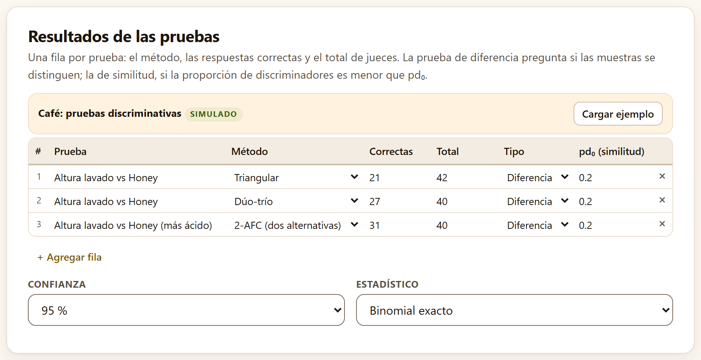
Figura 6.1.Bloque 6›Discriminativas con el ejemplo cargado: la tabla editable de las tres pruebas, la Confianza y el Estadístico. A la derecha, la columna pd₀ (similitud), que sólo usan las pruebas de similitud.
La tabla de las pruebas
La tarjeta Resultados de las pruebas no lee un archivo: es una tabla editable, una fila por prueba, que ya abre con una fila de partida («Prueba 1», triangular, 21 de 42). Cargar ejemplo la reemplaza por las tres pruebas del café; + Agregar fila añade otra y × la quita. Cada cambio recalcula.
Columna
Qué se escribe
Prueba
Un nombre libre («Altura lavado vs Honey»).
Método
Triangular, Dúo-trío, 2-AFC (dos alternativas), 3-AFC (tres alternativas) o Tétrada.
Correctas · Total
Los aciertos y el número de respuestas (jueces), enteros, con 0 ≤ correctas ≤ total.
Tipo
Diferencia (¿se distinguen?) o Similitud (¿la proporción de discriminadores es menor que pd₀?).
pd₀ (similitud)
Sólo para la similitud: la mayor proporción de discriminadores que consideras despreciable; 0.2 por omisión. En las pruebas de diferencia no se usa.
Debajo, Confianza (90, 95 o 99 %; 95 % por omisión) fija el nivel de los intervalos y también el α de la prueba (α = 1 − confianza). Estadístico elige la prueba: Binomial exacto (por omisión, con el intervalo de Clopper–Pearson), Razón de verosimilitudes (con el intervalo de verosimilitud perfilada), Puntuación (la de Wilson, con corrección por continuidad) o Wald. Con pocos jueces quédate con el exacto.
θTeoría en breve: pc, pd y d′
Cada método tiene una probabilidad de acertar adivinando, pg: 1/3 en la triangular, la 3-AFC y la tétrada, y 1/2 en el dúo-trío y la 2-AFC. La proporción de aciertos, pc, mezcla a quienes notan la diferencia con quienes adivinan; la proporción de discriminadores los separa: pd = (pc − pg) / (1 − pg). Pero pd depende del método: la misma diferencia produce más aciertos en una 3-AFC, donde se pregunta «¿cuál es más ácida?», que en una triangular, donde se pregunta «¿cuál es distinta?». El modelo de Thurstone supone que cada muestra produce una sensación normal y mide la distancia entre las dos en desviaciones estándar: ese es d′. Cada método tiene su función psicométrica, pc = f(d′), y la app la invierte. Por eso d′ sí se puede comparar entre métodos: 21 aciertos de 42 son d′ = 1.47 en una triangular y sólo d′ = 1.02 en una tétrada.
Diferencia y su tamaño (d′)
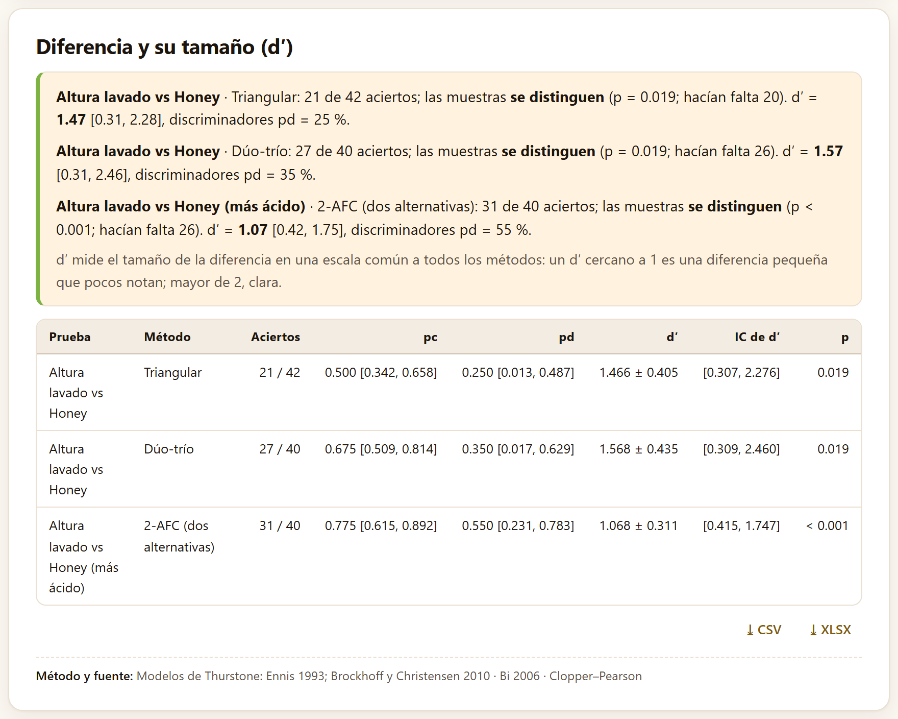
Figura 6.2.Diferencia y su tamaño (d′) con el ejemplo: la triangular, 21 de 42 aciertos, da d′ = 1.47 [0.31, 2.28] y p = 0.019.
La tarjeta de resultados escribe, para cada prueba de diferencia, los aciertos, si las muestras se distinguen (p < α) o si no se demuestra diferencia, el valor p con los aciertos que hacían falta (el mínimo con el que la prueba es significativa con ese total), d′ con su intervalo y pd. Una nota recuerda la escala: «un d′ cercano a 1 es una diferencia pequeña que pocos notan; mayor de 2, clara». La tabla, que se descarga como discriminativas.csv, trae pc y pd con su intervalo, d′ con su error estándar (por el método delta) y el intervalo de d′, que es el de pc llevado por la misma función.
▸Ejemplo resuelto: el café Altura lavado contra el Honey
Las tres pruebas del ejemplo dicen que las muestras se distinguen, pero con matices. La triangular, 21 de 42 (hacían falta 20): p = 0.019, pc = 0.500 [0.342, 0.658], pd = 25 % y d′ = 1.47 [0.31, 2.28]. El dúo-trío, 27 de 40 (hacían falta 26): p = 0.019, pd = 35 % y d′ = 1.57 [0.31, 2.46]. La 2-AFC, que preguntó cuál era más ácido, 31 de 40: p < 0.001, pd = 55 % y d′ = 1.07 [0.42, 1.75]. Los pd son muy distintos (25, 35 y 55 %) y, sin embargo, los tres d′ caen entre 1 y 1.6, con intervalos que se traslapan: es la misma diferencia, pequeña, medida con tres métodos. Los intervalos son anchos porque 40 jueces son pocos para una d′ así (sección 6.2).
La prueba de similitud
Si lo que quieres demostrar es que un cambio de proceso no se nota, cambia el Tipo a Similitud y fija pd₀. La hipótesis se invierte: la prueba es significativa cuando los aciertos son pocos, y la lectura dice «se demuestra similitud: la proporción de discriminadores es menor que 0.20» o «no se puede afirmar la similitud con pd₀ = 0.20». No demostrar diferencia no es demostrar similitud: con los 21 aciertos de 42 de la triangular, la prueba de similitud con pd₀ = 0.2 da p = 0.722; con 16 aciertos de 60, p = 0.001.
La línea Método y fuente: cita los modelos de Thurstone (Ennis 1993; Brockhoff y Christensen 2010), a Bi (2006) y el intervalo de Clopper–Pearson.
6.2Planear: jueces y potencia
La pregunta que conviene hacerse antes de la cata, no después: con la diferencia que me importa detectar, ¿cuántos jueces necesito y qué método rinde más? La tarjeta Planear: número de jueces y potencia no necesita datos.
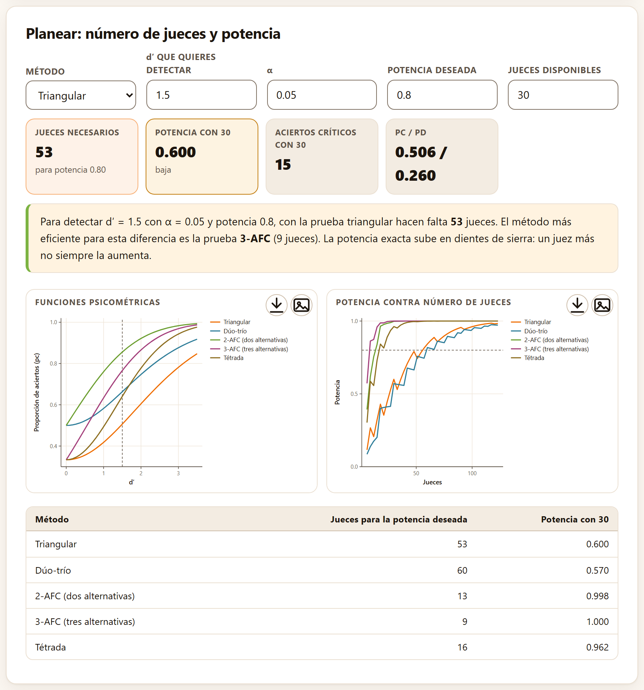
Figura 6.3.Planear: número de jueces y potencia con sus valores de partida. Para detectar d′ = 1.5 con una triangular hacen falta 53 jueces; con los 30 disponibles la potencia es sólo 0.600. La 3-AFC lo logra con 9.
Los campos son Método (Triangular), d′ que quieres detectar (1.5), α (0.05), Potencia deseada (0.8) y Jueces disponibles (30). Los cuatro mosaicos dan los Jueces necesarios (53, «para potencia 0.80»), la Potencia con 30 (0.600, marcada «baja» por quedar bajo 0.8), los Aciertos críticos con 30 (15: los que tendrían que acertar 30 jueces para que la prueba saliera significativa) y pc / pd (0.506 / 0.260: la proporción de aciertos y de discriminadores que corresponde a d′ = 1.5 en ese método).
La tabla compara los cinco métodos con la misma d′, el mismo α y la misma potencia:
Tabla 6.1. Jueces para detectar d′ = 1.5 (α = 0.05, potencia 0.8) y potencia con 30 jueces
Método
Jueces para la potencia deseada
Potencia con 30
Triangular
53
0.600
Dúo-trío
60
0.570
2-AFC (dos alternativas)
13
0.998
3-AFC (tres alternativas)
9
1.000
Tétrada
16
0.962
La lectura lo resume: «con la prueba triangular hacen falta 53 jueces. El método más eficiente para esta diferencia es la prueba 3-AFC (9 jueces).» Las dos figuras muestran por qué. Funciones psicométricas dibuja pc contra d′ para los cinco métodos, con una línea en la d′ elegida: la 2-AFC y la 3-AFC suben mucho más rápido que la triangular y el dúo-trío. Potencia contra número de jueces dibuja la potencia exacta de 6 a 123 jueces, con una línea en la potencia deseada.
θTeoría en breve: la potencia en dientes de sierra
La potencia es la probabilidad de que la prueba salga significativa si la diferencia es la que supusiste. Con la prueba binomial exacta, el número crítico de aciertos sube a saltos: al añadir un juez, a veces hace falta un acierto más y la potencia baja. Por eso la curva sube en dientes de sierra y la app busca el primer número de jueces que supera la potencia deseada, partiendo de una aproximación normal (Ennis 1993; Ennis y Jesionka 2011). Los métodos dirigidos (2-AFC, 3-AFC) son más potentes porque preguntan por un atributo concreto, pero sólo sirven si sabes de antemano en qué atributo difieren las muestras; la triangular, el dúo-trío y la tétrada no lo necesitan.
6.3A–no A y preferencia pareada
Dos tarjetas pequeñas al pie de la pestaña, con campos escritos y resultado inmediato: la prueba A–no A, para cuando no se pueden servir las muestras juntas, y la preferencia pareada.
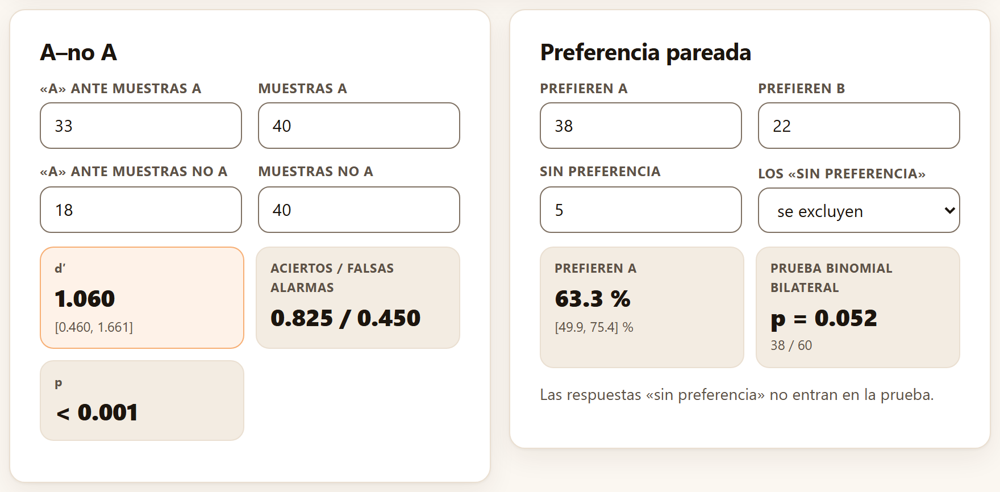
Figura 6.4.A–no A y Preferencia pareada con los valores que traen escritos.
A–no A
Los jueces aprenden primero cómo es la muestra «A» y luego, ante cada muestra, dicen si es «A» o «no A». Los campos son «A» ante muestras A (33), Muestras A (40), «A» ante muestras no A (18) y Muestras no A (40). Los aciertos son H = 33/40 = 0.825 y las falsas alarmas F = 18/40 = 0.450; d′ = z(H) − z(F) = 1.060 [0.460, 1.661], y el valor p (< 0.001) es el de la prueba exacta de Fisher, unilateral, de que las muestras A reciben más respuestas «A». Ninguna proporción puede ser 0 ni 1: con ellas el modelo no tiene una estimación finita y la app no da resultado.
Preferencia pareada
Con Prefieren A (38), Prefieren B (22) y Sin preferencia (5), la app hace una prueba binomial bilateral de que la mitad prefiere cada producto. Los «sin preferencia» pueden se excluyen (por omisión: 38 de 60, 63.3 % [49.9, 75.4] %, p = 0.052) o se reparten mitad y mitad (40 de 64, 62.5 % [49.5, 74.3] %, p = 0.060). Bajo los mosaicos, una nota dice qué se hizo con ellos: si se excluyen, «Las respuestas «sin preferencia» no entran en la prueba.»; si se reparten y son un número impar, como los 5 de partida, «Número impar de respuestas «sin preferencia»: una se descartó al repartirlas.» (dos van a A, dos a B y una queda fuera). Con los valores de partida la preferencia por A no llega a demostrarse.
6.4Hedónica
La prueba afectiva por excelencia: cada consumidor califica cada producto en la escala hedónica de nueve puntos, de 1 «me disgusta muchísimo» a 9 «me gusta muchísimo». La app compara los productos tratando a cada consumidor como un bloque.
La tarjeta Agrado de los consumidores pide una fila por consumidor y producto con tres papeles: Consumidor, Producto y Agrado. El ejemplo, «Café: 80 consumidores (agrado, punto justo y CATA)», tiene 320 filas y 16 columnas (consumidor, cafe, agrado, tres columnas jar_… y diez términos); aquí sólo se usan las tres primeras.
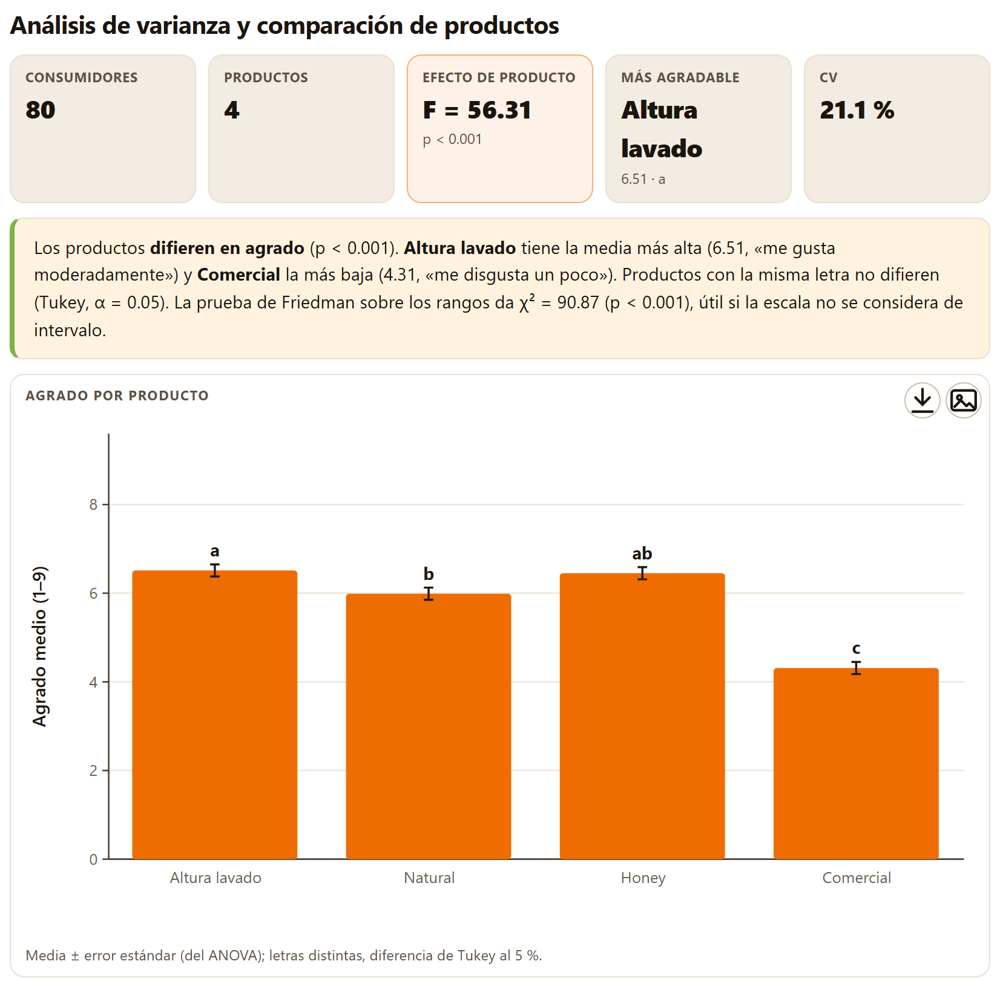
Figura 6.5.Análisis de varianza y comparación de productos con los 80 consumidores del ejemplo: los cafés difieren (F = 56.31, p < 0.001); Altura lavado gusta más (6.51) y el Comercial menos (4.31).
Los mosaicos dan los Consumidores (80), los Productos (4), el Efecto de producto (F = 56.31, p < 0.001), el Más agradable (Altura lavado, 6.51 · a) y el CV (21.1 %). La lectura traduce las medias extremas a palabras de la escala —6.51 es «me gusta moderadamente», 4.31 «me disgusta un poco»— redondeando la media al punto más cercano. La figura Agrado por producto muestra la media de cada producto con su error estándar y sus letras.
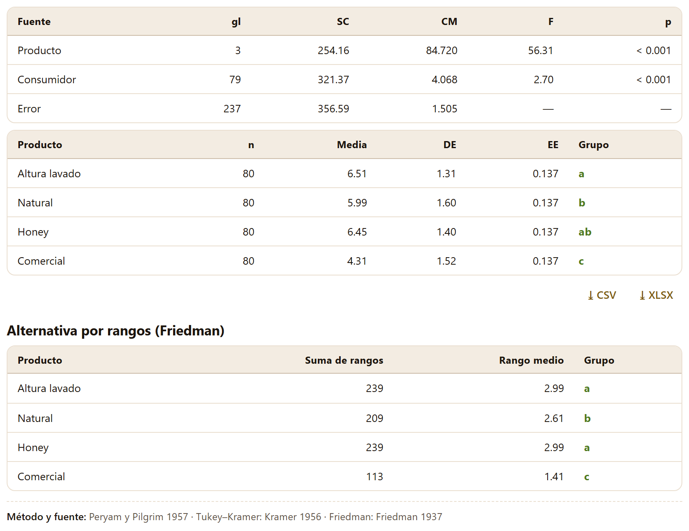
Figura 6.6. Las tablas de la misma tarjeta: el ANOVA con el consumidor como bloque, las medias con sus letras de Tukey y la alternativa por rangos de Friedman.
El ANOVA es de dos vías sin interacción, agrado = media + producto + consumidor + error: el producto (3 gl, F = 56.31), el consumidor (79 gl, F = 2.70) y el error (237 gl, CM 1.505). Quitar la variación entre consumidores —unos califican todo alto, otros todo bajo— es lo que hace sensible la prueba. La tabla de medias, que se descarga como hedonica.csv, trae n, la media, la DE, el EE (√(CMerror/n) = 0.137) y el Grupo de Tukey–Kramer al 5 %: Altura lavado 6.51 a, Honey 6.45 ab, Natural 5.99 b y Comercial 4.31 c. Productos con una letra en común no difieren: Honey no se distingue ni de Altura lavado ni de Natural, pero estos dos sí entre sí.
Debajo, Alternativa por rangos (Friedman) ordena los productos dentro de cada consumidor y compara las sumas de rangos (χ² = 90.87, p < 0.001), con sus propias letras: Altura lavado y Honey a (rango medio 2.99), Natural b (2.61) y Comercial c (1.41). Úsala si no aceptas que la escala hedónica sea de intervalo, es decir, que de «me gusta un poco» a «me gusta moderadamente» haya la misma distancia que de «moderadamente» a «mucho». Friedman sólo usa a los consumidores que calificaron todos los productos.
iSi no todos probaron todo
Cuando hay consumidores que no calificaron algún producto, el diseño queda desbalanceado y la app lo avisa bajo la lectura: «Diseño desbalanceado (no todos los consumidores calificaron todos los productos): la tabla de ANOVA es secuencial, con el producto primero, y el efecto de producto que se informa es el ajustado por consumidor (producto al final). Las comparaciones usan las medias observadas.». La tabla de ANOVA gana entonces una fila, Producto, ajustado por consumidor, justo antes del error: es la F que dan los mosaicos y la lectura. Si quitas nueve de las 320 filas del ejemplo, la fila Producto da F = 55.51 y la ajustada, F = 54.16 (3 y 228 gl). Con el ejemplo completo, balanceado, ni el aviso ni la fila aparecen.
6.5Punto justo y penalidades
Saber que un café gusta menos no dice qué cambiar. Las escalas de punto justo (JAR, del inglés just about right) preguntan por cada atributo si está «muy poco», «justo» o «demasiado», y el análisis de penalidades cuenta cuánto agrado se pierde por cada desvío.
La tarjeta Escalas de punto justo pide una fila por consumidor y producto con Consumidor, Producto, Agrado y los Atributos de punto justo, que la app propone sola con las columnas cuyo nombre empieza por jar_ (en el ejemplo, jar_acidez, jar_amargor y jar_cuerpo; el prefijo se quita en los resultados). Debajo hay dos campos: Niveles de la escala (5: 1 = muy poco, 3 = justo, 5 = demasiado) y Umbral de consumidores (%) (20). La escala tiene que tener centro: con 3, 5, 7 o 9 niveles. Con un número par, la app avisa, en un recuadro bajo esos dos campos, «Con un número par de niveles no hay centro: usa 3, 5, 7 o 9.», y esconde los resultados (que también salen del informe del Bloque 9) hasta que escribas un número impar; los datos cargados no se pierden.
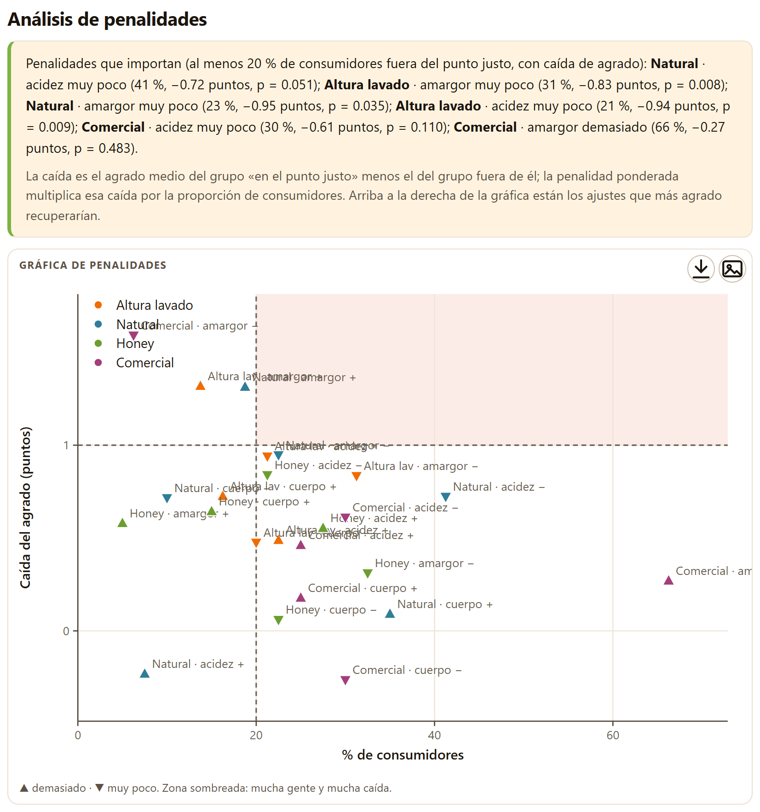
Figura 6.7.Análisis de penalidades con el café del ejemplo. Cada punto es un producto, un atributo y un sentido (▲ demasiado, ▼ muy poco), rotulado con su nombre completo; las líneas punteadas marcan el umbral de 20 % y una caída de un punto, y la zona sombreada, lo que más urge corregir.
θTeoría en breve: la caída y la penalidad ponderada
Para cada producto y atributo, los consumidores se reparten en tres grupos: debajo del centro (muy poco), en el centro (justo) y arriba (demasiado). La caída de un grupo es el agrado medio del grupo «justo» menos el del grupo fuera de él, y se prueba con una t de dos muestras con varianza combinada. La penalidad ponderada multiplica la caída por la proporción de consumidores en ese grupo: una caída de un punto en el 40 % de la gente pesa más que una de dos puntos en el 5 %. Un desvío «importa» cuando reúne al menos el umbral de consumidores (20 %) y tiene caída positiva (Xiong y Meullenet 2006; Lawless y Heymann 2010).
La lectura enumera hasta seis penalidades que importan, ordenadas por la penalidad ponderada, con el porcentaje, la caída y su p. La tabla (penalidades_jar.csv) trae, por producto y atributo, el % de «poco», «justo» y «mucho», las dos caídas con su p y la mayor de las dos penalidades ponderadas. En la Gráfica de penalidades, cada rótulo dice el producto y el atributo completos, con «+» para demasiado y «−» para muy poco («Comercial · amargor +»); la app los coloca para que no se encimen y, cuando un rótulo tiene que alejarse de su punto, los une con una línea guía corta. La leyenda de los colores de los productos va fuera del área, a la derecha, y el eje de la caída lleva marcas cada medio punto (0, 0.5, 1 y 1.5 en el ejemplo); una caída negativa (abajo del cero) quiere decir que quienes se salen del punto justo califican mejor. La segunda figura, Distribución de las respuestas de punto justo, apila los tres porcentajes de cada producto y atributo, también con los nombres completos.
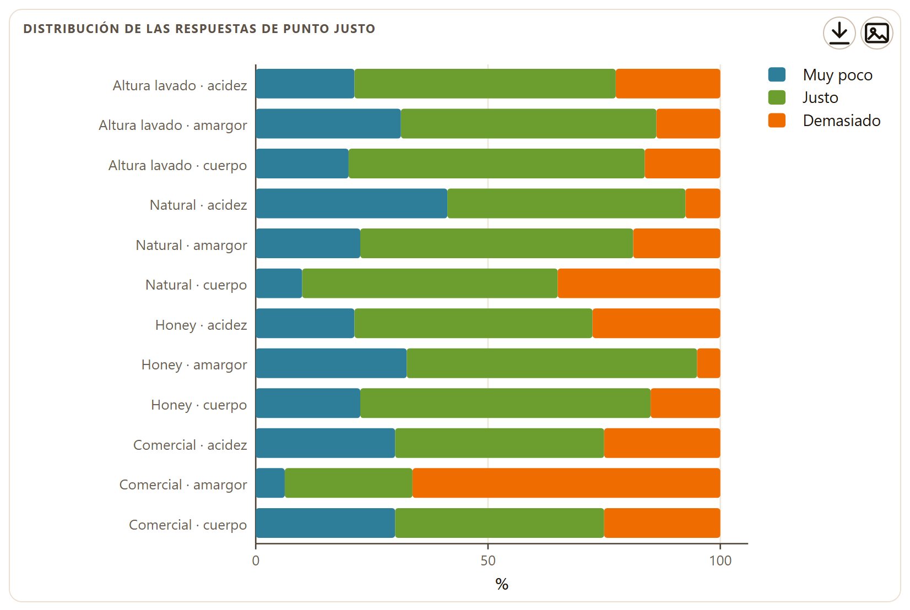
Figura 6.8.Distribución de las respuestas de punto justo. Salta a la vista el amargor del Comercial: 66.3 % lo encuentra demasiado amargo y sólo 27.5 % justo.
▸Ejemplo resuelto: qué ajustar en cada café
La mayor penalidad es la acidez del Natural, que al 41 % le parece poca (caída de 0.72 puntos, p = 0.051, penalidad 0.298). Siguen el amargor de Altura lavado, poco para el 31 % (−0.83 puntos, p = 0.008), el amargor del Natural, poco para el 23 % (−0.95, p = 0.035), y la acidez de Altura lavado, poca para el 21 % (−0.94, p = 0.009). Del Comercial aparecen la acidez, poca para el 30 % (−0.61, p = 0.110), y el amargor, excesivo para el 66 % pero con una caída de sólo 0.27 puntos (p = 0.483): mucha gente lo nota, y sin embargo quienes lo encuentran justo no lo califican mucho mejor. Ningún punto entra en la zona sombreada, que pide además una caída de más de un punto. Al revés, el amargor de Altura lavado excesivo cuesta 1.32 puntos (p = 0.003), pero sólo al 13.8 %: queda bajo el umbral y la lectura no lo menciona.
La lectura marca por el porcentaje y la caída, no por el valor p: una penalidad con p = 0.483 aparece si reúne al 20 % de los consumidores. Mira la p en la tabla antes de recomendar un cambio.
6.6CATA
En la pregunta «marque todo lo que aplique» (CATA, check all that apply) el consumidor marca, de una lista de términos, los que describen cada producto. Es rápida y no requiere entrenamiento; la app dice qué términos separan a los productos y dibuja el mapa que los relaciona.
La tarjeta Marque todo lo que aplique pide una fila por consumidor y producto, con Consumidor, Producto y Términos (0/1): la app propone sola las columnas que sólo tienen 0 y 1 (y al menos un 1) y no empiezan por jar_. En el ejemplo son diez: Afrutado, Chocolate, Floral, Nuez, Tostado, Quemado, Ácido, Amargo, Dulce y Astringente.
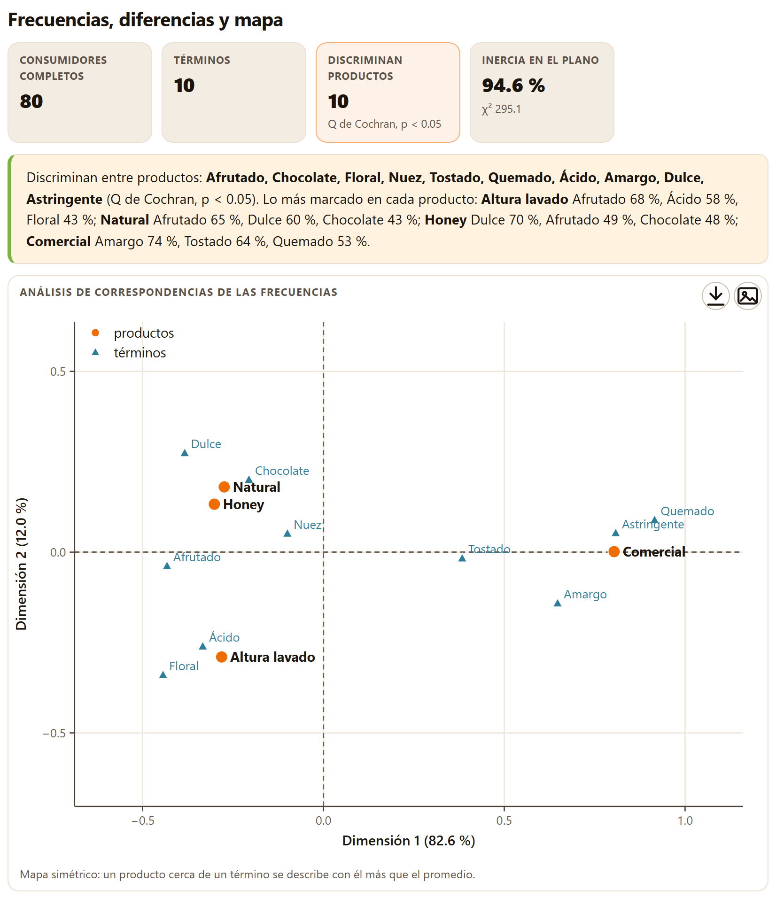
Figura 6.9.Frecuencias, diferencias y mapa con el ejemplo. La primera dimensión (82.6 %) separa al Comercial —amargo, quemado, astringente, tostado— de los otros tres; la segunda (12.0 %), a Altura lavado —ácido, floral— de Natural y Honey —dulce, chocolate—.
Los mosaicos dan los Consumidores completos (80: los que evaluaron todos los productos, los únicos que entran en las pruebas), los Términos (10), cuántos Discriminan productos (10, por la Q de Cochran con p < 0.05) y la Inercia en el plano (94.6 %, con el χ² de la tabla, 295.1). La lectura nombra los términos que discriminan y los tres más marcados de cada producto: Altura lavado, Afrutado 68 %, Ácido 58 % y Floral 43 %; el Comercial, Amargo 74 %, Tostado 64 % y Quemado 53 %.
θTeoría en breve: Cochran, McNemar y las correspondencias
Como cada consumidor evalúa todos los productos, las respuestas a un término están pareadas: no se comparan como proporciones independientes. La Q de Cochran prueba, término por término, si la proporción de marcas difiere entre los productos, con cada consumidor como bloque. Si difiere, la prueba de McNemar compara cada par de productos y los valores p se ajustan por Holm, porque con cuatro productos son seis pares. El análisis de correspondencias resume la tabla de frecuencias producto × término en un mapa simétrico: un producto cerca de un término se describe con él más que el promedio (Meyners et al. 2013; Greenacre 2007).
La tabla (cata.csv) trae el porcentaje de cada término en cada producto, Q, su p y los Pares que difieren (Holm); las filas de los términos que discriminan van resaltadas. La segunda figura, Frecuencia de cada término, dibuja esos porcentajes en barras agrupadas. Un término puede discriminar en conjunto sin que ningún par difiera tras el ajuste: es el caso de Chocolate (Q = 11.16, p = 0.011), entre 25.0 % en el Comercial y 47.5 % en el Honey, cuya columna de pares dice «—». El Dulce, en cambio, separa cinco de los seis pares.
6.7Perfil descriptivo
Un panel entrenado califica la intensidad de cada atributo en una escala continua, varias veces. Es la herramienta para describir con precisión qué cambia un tratamiento: no si gusta, sino cuánto más ácido, más amargo o con más cuerpo queda el producto.
La tarjeta Panel entrenado pide una fila por juez, producto y sesión, con Juez, Producto, Sesión o repetición (opcional) y los Atributos. El ejemplo, «Café: perfil descriptivo cuantitativo» (64 filas, 10 columnas), tiene ocho jueces que evalúan los cuatro cafés en dos sesiones, con siete atributos de 0 a 10: Fragancia, Acidez, Amargor, Cuerpo, Dulzor, Astringencia y Residual. Su descripción avisa de tres jueces flojos: «El juez J6 se simuló con más ruido (repite mal) y el J8 casi sin diferencias entre cafés (discrimina poco); por azar, J4 también salió débil. El desempeño del panel señala a los tres.» (sección 6.8). Comparación de medias elige entre LSD de Fisher (por omisión) y Tukey.
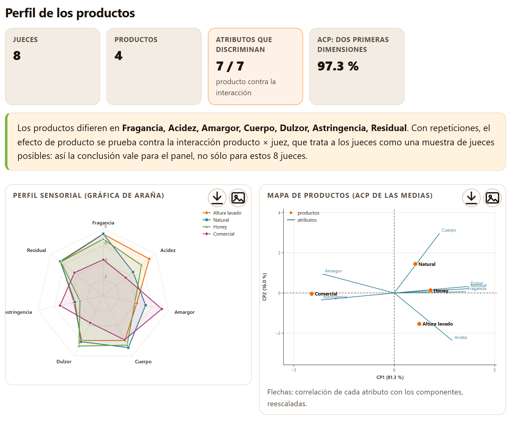
Figura 6.10.Perfil de los productos con el panel del ejemplo. Los siete atributos discriminan; en el mapa (97.3 % de la variación en dos componentes), el Comercial queda del lado del amargor y la astringencia, Altura lavado hacia la acidez y Natural hacia el cuerpo.
θTeoría en breve: contra la interacción
Para cada atributo, la app ajusta el ANOVA intensidad = producto + juez + [sesión] + producto × juez + error. Los jueces no se escogieron por sí mismos: son una muestra de los jueces que podrían haber estado. Por eso, cuando hay repeticiones, el efecto de producto se prueba contra la interacción producto × juez (modelo mixto), no contra el error: así la conclusión vale para el panel y no sólo para esos ocho, como recuerda la lectura («…no sólo para estos 8 jueces.», con el número de jueces de tus datos). Si cada juez evaluó cada producto una sola vez, la interacción no se puede separar del error y la prueba es la usual (Stone et al. 1974; Næs et al. 2010).
Los mosaicos dan los Jueces (8), los Productos (4), los Atributos que discriminan (7 / 7, «producto contra la interacción») y la variación que retienen las ACP: dos primeras dimensiones (97.3 %). La tabla (perfil_descriptivo.csv) trae, por atributo, la F de producto contra la interacción, su p y la media de cada producto con sus letras, calculadas con el mismo error de la interacción:
Tabla 6.2. Medias del perfil del ejemplo con letras de LSD de Fisher (α = 0.05)
Atributo
F
Altura lavado
Natural
Honey
Comercial
Fragancia
33.45
7.36 a
7.39 a
6.76 a
4.29 b
Acidez
37.94
7.04 a
4.54 c
5.84 b
3.43 d
Amargor
26.63
4.11 c
5.19 b
3.87 c
7.17 a
Cuerpo
6.65
5.96 b
6.90 a
6.57 a
5.86 b
Dulzor
25.51
5.95 a
6.12 a
6.69 a
3.61 b
Astringencia
12.20
3.60 b
3.47 b
2.85 b
5.29 a
Residual
17.71
6.47 a
6.58 a
6.46 a
4.39 b
Todas las p son < 0.001 salvo la del Cuerpo (0.002). Con Tukey, más estricto, cambian dos letras: el amargor de Altura lavado pasa a «bc» y el cuerpo del Honey a «ab». La LSD protege poco cuando hay muchos productos; con cuatro, las dos suelen coincidir.
Las figuras son la Perfil sensorial (gráfica de araña), con un eje por atributo y una línea por producto, y el Mapa de productos (ACP de las medias): el análisis de componentes principales de la tabla de medias producto × atributo, con los productos como puntos y los atributos como flechas (su correlación con los componentes, reescalada). En el ejemplo, CP1 (81.3 %) opone el Comercial a los otros tres, y CP2 (16.0 %) separa la acidez de Altura lavado del cuerpo del Natural. El botón Enviar a PCAPro (mapa de preferencias) → pasa esas medias a PCAPro, de la misma suite, como perfil_medias_productos, para cruzarlas con el agrado de los consumidores.
6.8Desempeño del panel
Un perfil vale lo que vale el panel. La segunda tarjeta revisa a cada juez con tres preguntas: ¿distingue los productos?, ¿repite su calificación?, ¿coincide con los demás?
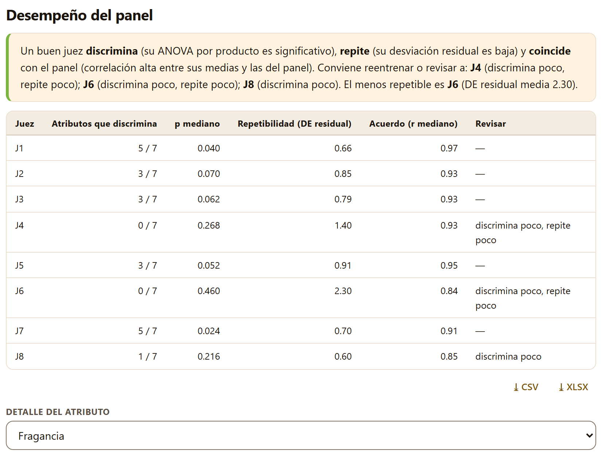
Figura 6.11.Desempeño del panel con el ejemplo: la app sugiere revisar a J4, J6 y J8. Debajo, el selector Detalle del atributo.
Para cada juez y atributo, la app ajusta un ANOVA de una vía con sus propias calificaciones (producto, usando sus repeticiones) y resume los siete atributos en la tabla (desempeno_panel.csv):
Columna
Qué mide
Se señala si…
Atributos que discrimina
En cuántos atributos su ANOVA por producto da p < 0.05.
—
p mediano
Discriminación: la mediana de esas p.
> 0.20: «discrimina poco»
Repetibilidad (DE residual)
Repetibilidad: la desviación residual media de su ANOVA; más baja, mejor.
> 1.5 veces la mediana del panel: «repite poco»
Acuerdo (r mediano)
Acuerdo: la correlación de Pearson entre sus medias por producto y las del panel, mediana sobre los atributos.
< 0.5: «no coincide con el panel»
Revisar
Las señales que le tocan, o «—».
Los umbrales son permisivos a propósito: con dos sesiones, el ANOVA de un solo juez tiene muy pocos grados de libertad y poca potencia. En el ejemplo, la lectura dice: «Conviene reentrenar o revisar a: J4 (discrimina poco, repite poco); J6 (discrimina poco, repite poco); J8 (discrimina poco). El menos repetible es J6 (DE residual media 2.30).». J4 y J6 no discriminan en ningún atributo (p mediano 0.268 y 0.460), y su DE residual (1.40 y 2.30) supera 1.5 veces la mediana del panel; J8 repite bien (0.60) y coincide con el panel (0.85), pero discrimina en un solo atributo. Son los tres que anuncia la descripción del ejemplo: J6 y J8 se simularon así, y J4 salió débil por azar. Los ocho coinciden con el panel (r mediano entre 0.84 y 0.97).
Detalle del atributo elige un atributo y muestra dos tablas: su ANOVA completo y el desempeño de cada juez en él. Con la Fragancia, el ANOVA da Producto F = 17.20 contra el error, Juez 2.00 (p = 0.088), Sesión 0.75 (p = 0.393) y Producto × juez 0.51 (p = 0.942); la F de 33.45 de la tabla 6.2 es el CM de producto (34.385) entre el de la interacción (1.028). En la segunda tabla, J6 tiene la mayor DE residual en Fragancia (3.19).
6.9Fichas de cata
La última pestaña prepara la sesión: en qué orden recibe cada juez las muestras, con qué código de tres dígitos, y las fichas impresas para que conteste. Un orden mal balanceado mete en los resultados el efecto de la posición y el de la muestra anterior.
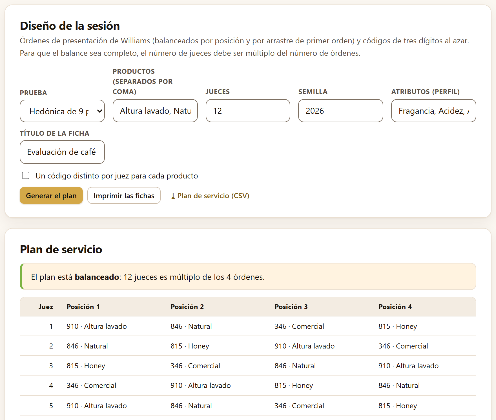
Figura 6.12.Fichas de cata después de Generar el plan con los valores de partida: cuatro cafés, doce jueces y la semilla 2026. El plan está balanceado y cada café lleva un código fijo (910, 846, 815 y 346); el recorte muestra los cinco primeros jueces de los doce.
Diseño de la sesión
Los campos van en dos renglones: arriba Prueba, Jueces, Semilla y Título de la ficha; abajo, anchos para que se lean enteros, Productos (separados por coma) y Atributos (perfil).
Campo
Por omisión
Qué hace
Prueba
Hedónica de 9 puntos
El tipo de ficha: Hedónica de 9 puntos, Perfil (atributos) o Triangular.
Jueces
12
Cuántos jueces.
Semilla
2026
La semilla de los códigos y del orden de las triadas: la misma semilla da siempre el mismo plan.
Título de la ficha
Evaluación de café
El encabezado de cada ficha.
Productos (separados por coma)
Altura lavado, Natural, Honey, Comercial
Los productos. En la triangular sólo cuentan los dos primeros.
Atributos (perfil)
Fragancia, Acidez, Amargor, Cuerpo, Dulzor
Las escalas de línea de la ficha de perfil.
Un código distinto por juez para cada producto
sin marcar
Sin marcar, cada producto lleva un solo código en toda la sesión; marcada, cada juez recibe códigos propios (hasta 900 en total).
Generar el plan arma el plan y enciende los otros dos botones. Imprimir las fichas abre una ventana con una ficha por juez, en hoja carta, y la manda a imprimir: la hedónica pide marcar la escala de nueve puntos para cada código, en el orden indicado, con la instrucción de enjuagarse entre muestras; la de perfil, una escala de línea de «poco» a «mucho» por atributo; la triangular, encerrar el código de la muestra diferente. Todas llevan el juez, una línea para la fecha y otra para comentarios. Si el navegador bloquea la ventana, la app avisa «El navegador bloqueó la ventana: permite ventanas emergentes para imprimir.». ⤓ Plan de servicio (CSV) descarga plan_de_servicio.csv, con las columnas juez, posicion, producto y codigo, una fila por muestra servida.
θTeoría en breve: los cuadrados de Williams
Un cuadrado de Williams es un cuadrado latino en el que, además de que cada producto aparece una vez en cada posición, cada producto va precedido por cada uno de los demás el mismo número de veces: balancea la posición y el arrastre de primer orden. Con un número par de productos basta un cuadrado (4 productos, 4 órdenes); con uno impar hacen falta dos, el segundo con las filas al revés (3 productos, 6 órdenes). El juez a recibe la fila a del diseño, así que el balance es completo sólo si el número de jueces es múltiplo del número de órdenes (Williams 1949; MacFie et al. 1989). En la triangular, los órdenes son las seis combinaciones AAB, ABA, BAA, BBA, BAB y ABB, mezcladas con la semilla, y cada juez recibe tres códigos distintos.
La tarjeta Plan de servicio lo dice en la lectura —«El plan está balanceado: 12 jueces es múltiplo de los 4 órdenes.», o, con 10 jueces, «Con 10 jueces el balance no es completo: usa un múltiplo de 4 (por ejemplo 12).»—, muestra la tabla con el código y el producto de cada posición para cada juez (que también se descarga en CSV y XLSX) y una vista previa de las cuatro primeras fichas, sólo con los códigos.
✓Regla de decisión
Si una prueba de diferencia sale significativa…
lee d′ y su intervalo: cerca de 1, una diferencia pequeña que pocos notan; mayor de 2, clara. Compara métodos por d′, nunca por pd.
Si no sale significativa…
no concluyas que son iguales: mira la potencia de la sección 6.2 o haz una prueba de Similitud con un pd₀ decidido de antemano.
Si la potencia con tus jueces es baja…
consigue más jueces o usa un método dirigido (2-AFC, 3-AFC) si sabes en qué atributo difieren.
Si la hedónica sale significativa…
compara por las letras; si dudas de la escala de intervalo, confirma con Friedman.
Si un desvío de punto justo reúne ≥ 20 % de los consumidores con caída ≥ 1 punto y p < 0.05…
es el primer ajuste por hacer; con caída pequeña o p alta, es una molestia que no cuesta agrado.
Si un término CATA discrimina pero ningún par difiere…
la diferencia es difusa: no la atribuyas a un par concreto.
Si un juez sale señalado…
reentrénalo en esos atributos; si la señal se repite en varias sesiones, considera sacarlo del panel.
Si el plan de servicio no está balanceado…
usa el múltiplo de órdenes que propone la app.
Son guías para interpretar, no leyes: lo que sabes del producto, del panel y de cómo se condujo la cata siempre manda.
✕Cuando algo sale mal
La tarjeta de resultados de las discriminativas no aparece: ninguna fila tiene un método válido y correctas y total enteros con total > 0. d′ = 0: los aciertos no superan los de la adivinanza. d′ infinito o sin intervalo: todos acertaron. A–no A sin resultado: alguna proporción es 0 o 1. «Con un número par de niveles no hay centro…»: escribe 3, 5, 7 o 9 en Niveles de la escala. CATA sin términos propuestos: las columnas de términos deben tener sólo 0 y 1 (no «sí»/«no» ni casillas vacías en todo). Pocos «consumidores completos»: en CATA y Friedman sólo cuentan quienes evaluaron todos los productos. El perfil no tiene la prueba contra la interacción: cada juez evaluó cada producto una sola vez; la sesión es opcional, pero las repeticiones (dos o más filas del mismo juez y producto) no. Las fichas no se imprimen: permite las ventanas emergentes para la página de la app.
7
Capítulo siete · Bloque 7
Ensayos poscosecha
Un ensayo poscosecha casi siempre cruza tratamientos con tiempos de almacenamiento: recubrimientos, temperaturas o atmósferas, medidos cada tantos días. Cómo se analiza depende de una sola pregunta: ¿cada día se miden frutos distintos o los mismos? Este bloque analiza los dos casos —el factorial con muestreo destructivo y las medidas repetidas—, compara la velocidad de cambio de cada tratamiento y, antes de empezar, sortea el ensayo y escribe su libro de campo.
7.1Factorial tratamiento × tiempo
7.2Comparar los tratamientos dentro de cada tiempo
7.3Medidas repetidas
7.4Esfericidad y correcciones
7.5Pendientes
7.6Aleatorización y libro de campo
El bloque se llama Ensayos poscosecha (en la barra, Ensayos) y se presenta así: «Factoriales tratamiento × tiempo, medidas repetidas, pendientes y aleatorización». Tiene cuatro pestañas: Factorial tratamiento × tiempo, Medidas repetidas, Pendientes y Aleatorización.
Las tres primeras reciben una tabla en formato largo —una fila por fruto y tiempo, con la respuesta, el tratamiento y el tiempo en columnas— y calculan en cuanto la tabla está cargada. Los ejemplos son dos conjuntos simulados que ya aparecieron en los capítulos 2 y 3: el mango del ejemplo a 13, 20 y 25 °C, que se muestreó de forma destructiva (cada día se midieron cuatro frutos nuevos), y el chayote del ejemplo con dos recubrimientos, cuyos dieciocho frutos marcados se pesaron cada cinco días.
!Elige la pestaña por cómo se tomaron los datos
Si cada fruto se midió una sola vez (se cortó, se exprimió, se destruyó), usa el factorial. Si los mismos frutos se midieron en todos los tiempos (peso, color con colorímetro, firmeza no destructiva), usa medidas repetidas: las mediciones de un fruto se parecen entre sí y un factorial las trataría como independientes, con valores p demasiado pequeños. La unidad del análisis es la que se aleatorizó.
7.1Factorial tratamiento × tiempo
La tarjeta Muestreo destructivo lo explica: «Cada tiempo de muestreo usa frutos distintos (se destruyen al medirlos): el ensayo es un factorial tratamiento × tiempo, completamente al azar o en bloques.»
Los papeles son Variable de respuesta, Tratamiento, Tiempo y Bloque (opcional); con un bloque, el diseño es de bloques completos al azar y el bloque entra en el modelo como un efecto más. El tiempo se trata como factor (cada día es un nivel), no como número: eso permite que la respuesta cambie de cualquier forma con el tiempo. Con el mango del ejemplo la app elige firmeza_N, temperatura como tratamiento y dia; puedes cambiar la respuesta por cualquier otra columna de la tabla (sst, at, L…).
Tabla 7.1. Los controles del factorial
Control
Por omisión
Qué decide
Sumas de cuadrados
Tipo III (cada efecto al final)
Cómo se reparten las sumas de cuadrados cuando el ensayo está desbalanceado. Tipo I (secuenciales) las asigna en el orden tratamiento, tiempo, interacción. Con datos balanceados las dos dan lo mismo
«Usar sólo los tiempos medidos en todos los tratamientos»
marcada
Deja fuera los tiempos en que falta algún tratamiento, para que el factorial esté completo
Comparación de medias
Tukey (HSD)
Cómo se comparan los tratamientos dentro de cada tiempo: Tukey (HSD), LSD de Fisher, Bonferroni o Dunnett (contra el testigo)
Testigo (Dunnett)
el nivel que se llame «testigo» o «control»; si no hay, el primero
Contra qué tratamiento compara Dunnett. Con el mango, 13 °C
α
0.05
El nivel de significancia de las comparaciones (0.05, 0.01 o 0.10)
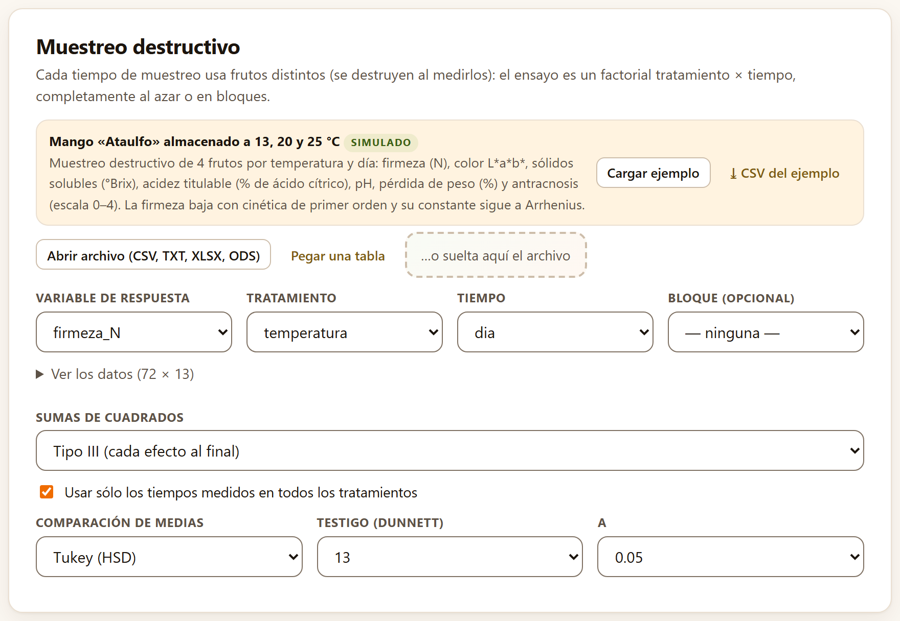
Figura 7.1. La tarjeta Muestreo destructivo con el mango del ejemplo y los controles por omisión: tipo III, sólo los tiempos medidos en todos los tratamientos, Tukey, 13 °C como testigo de Dunnett y α = 0.05.
El análisis de varianza
La app ajusta el modelo yijk = μ + τi + δj + (τδ)ij + εijk (más el bloque, si lo hay), con τ el tratamiento, δ el tiempo y (τδ) su interacción (Steel et al. 1997). En el mango, la temperatura de 13 °C se midió hasta el día 21 y las de 20 y 25 °C sólo hasta el 12; con la casilla marcada, la lectura avisa «Se dejaron fuera los tiempos que no tienen todos los tratamientos: 15, 18, 21.» y el análisis usa 60 frutos (3 temperaturas × 5 días × 4 frutos).
La tarjeta Análisis de varianza abre con cinco mosaicos —la F y el valor p del Tratamiento, del Tiempo y de la Interacción, el CV y el R²— y sigue con la lectura, la tabla del análisis y la figura Evolución por tratamiento:
Tabla 7.2. Análisis de varianza de la firmeza del mango del ejemplo (días 0 a 12, tipo III)
Fuente
gl
SC
CM
F
p
temperatura
2
18 863.90
9431.949
211.21
< 0.001
dia
4
68 825.82
17 206.455
385.30
< 0.001
temperatura:dia
8
7112.76
889.095
19.91
< 0.001
Error
45
2009.60
44.658
—
—
Total
59
96 812.07
—
—
—
El CV es 10.3 % y el R², 0.979. Las tres fuentes son significativas, y la que manda en la lectura es la interacción: «La interacción es significativa (p < 0.001): el efecto de temperatura cambia con el tiempo de almacenamiento, así que los tratamientos se comparan dentro de cada tiempo (tabla de abajo) y no con sus promedios generales.» El mosaico de la interacción se pinta de ámbar cuando es significativa, como aviso.
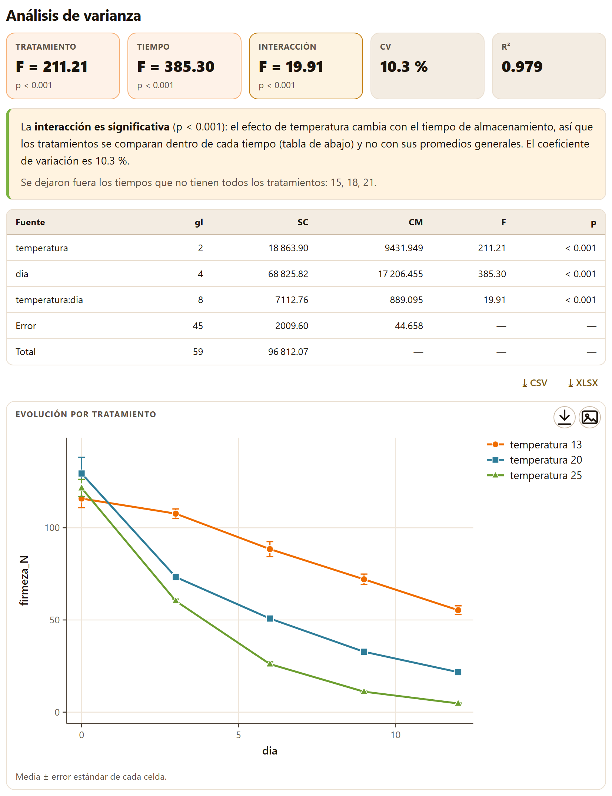
Figura 7.2.Análisis de varianza del mango del ejemplo. En la figura, la media ± error estándar de cada temperatura en cada día: las tres parten de 116 a 129 N y se separan desde el día 3, cuando la de 25 °C ya cayó a la mitad. Las líneas no son paralelas: eso es la interacción.
θQué quiere decir la interacción en poscosecha
En un ensayo de almacenamiento, el efecto del tiempo casi siempre es enorme (los frutos maduran) y no interesa probarlo. La pregunta es si los tratamientos cambian la forma en que el atributo evoluciona, y eso lo responde la interacción. Si es significativa, el «efecto del tratamiento» no es un número: el día 0 las temperaturas no difieren en lo que importa y el día 12 la firmeza a 13 °C es más de diez veces la de 25 °C. Un promedio general de cada temperatura sobre todos los días mezclaría situaciones distintas. Para resumir la diferencia en un solo número por tratamiento, usa su velocidad de cambio (sección 7.5) o su constante cinética (capítulo 3).
Cuando faltan combinaciones
Si desmarcas «Usar sólo los tiempos medidos en todos los tratamientos», el análisis toma todos los días y el factorial queda con celdas vacías: combinaciones de tratamiento y tiempo sin ningún fruto. En el mango son seis (20 y 25 °C no tienen los días 15, 18 y 21), y la tarjeta Análisis de varianza abre con un aviso que las nombra y dice qué se pierde:
«6 combinaciones de temperatura y dia no tienen datos (20 × 15, 20 × 18, 20 × 21, 25 × 15, 25 × 18, 25 × 21). Con celdas vacías, las sumas de cuadrados del tipo III no pueden probar los efectos principales de temperatura ni de dia: cada uno se promediaría sobre celdas que no existen, así que esas filas quedan sin gl, SC, CM, F ni p. La interacción (con menos grados de libertad) y las comparaciones dentro de cada tiempo siguen siendo válidas.»
Con el tipo III, los mosaicos del Tratamiento y del Tiempo se pintan de ámbar con «F = —» y no estimable (celdas vacías), y en la tabla esas dos filas dicen no estimable en la columna F y llevan rayas en gl, SC, CM y p: sin la hipótesis, lo que quedaría al quitar el factor del modelo no es la suma de cuadrados de ningún efecto. La interacción sí se prueba, con 8 grados de libertad en lugar de 14 (F = 23.03, p < 0.001), contra un error de 38.610 con 54 gl; el análisis usa los 72 frutos y el R² sube a 0.980. La tabla de medias agrega los días 15, 18 y 21 con una raya en las temperaturas que no se midieron. Al pie del aviso, la app propone las dos salidas: «Para probar los efectos principales, vuelve a marcar «Usar sólo los tiempos medidos en todos los tratamientos» o elige el tipo I.»
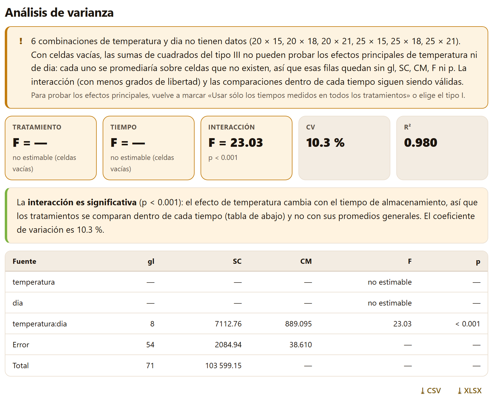
Figura 7.3. El factorial del mango con todos los días (casilla desmarcada) y el tipo III: el aviso ámbar lista las celdas vacías, el tratamiento y el tiempo quedan no estimable y sólo la interacción lleva F y p.
Con Tipo I (secuenciales) cada efecto se prueba en orden y los tres tienen F; el aviso, ahora informativo, lo explica: «Con el tipo I cada efecto se prueba en orden (dia ajustado por temperatura) y la interacción pierde 6 grados de libertad.» En el mango, la temperatura da F = 100.24 (2 gl), el día ajustado por la temperatura F = 320.65 (7 gl) y la interacción la misma F = 23.03, todas con p < 0.001. Aun así, la forma más limpia de probar los efectos principales es la de omisión: comparar sólo los tiempos comunes.
7.2Comparar los tratamientos dentro de cada tiempo
La tabla Tratamientos dentro de cada tiempo pone un renglón por tiempo y una columna por tratamiento, con la media de cada celda y sus letras: «En cada tiempo, tratamientos con la misma letra no difieren».
Las comparaciones usan el cuadrado medio del error del análisis completo (44.658 con 45 gl en el mango), no sólo los frutos de ese día, y las letras se asignan con el algoritmo de inserción y absorción de Piepho (2004). Tukey usa la versión de Tukey–Kramer para celdas de distinto tamaño (Kramer 1956); Bonferroni divide α entre el número de pares; LSD no corrige nada y sólo se recomienda cuando hay pocos tratamientos y la F ya fue significativa.
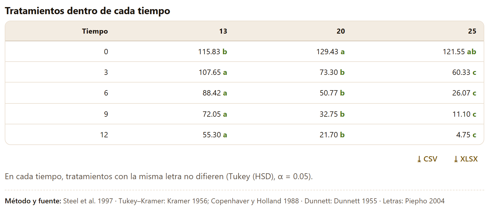
Figura 7.4. Las medias de firmeza (N) del mango del ejemplo dentro de cada día, con las letras de Tukey. El día 0 las tres temperaturas se traslapan (13 °C b, 20 °C a, 25 °C ab); del día 3 en adelante las tres difieren entre sí, siempre en el orden 13 > 20 > 25 °C.
Con Dunnett (contra el testigo), las letras se cambian por un asterisco junto a cada tratamiento que difiere del testigo («* difiere del testigo (Dunnett, α = 0.05).»). Con el mango y el testigo en 13 °C, 20 °C difiere ya desde el día 0 (129.43 contra 115.83 N) y 25 °C desde el día 3 (60.33 contra 107.65 N). Dunnett tiene más potencia que Tukey cuando lo único que importa es cada tratamiento contra el testigo (Dunnett 1955), como en un ensayo de recubrimientos. La tabla se descarga con ⤓ CSV y ⤓ XLSX (medias_por_tiempo).
iCuándo sí resumir con promedios
Si la interacción no es significativa, la lectura cambia: «La interacción no es significativa (…): el efecto de … es parecido en todos los tiempos y puede resumirse con sus promedios.» Entonces sí tiene sentido decir que un tratamiento conserva, en promedio, tantos newtons más que otro. Aun así, la tabla dentro de cada tiempo sigue disponible, y en un informe conviene mostrarla junto con la figura.
7.3Medidas repetidas
La pestaña Medidas repetidas analiza los ensayos en que se mide siempre a los mismos frutos. Su tarjeta, Los mismos frutos a lo largo del tiempo, lo resume: «Peso, color u otra medida no destructiva tomada en los mismos frutos (unidades) en cada tiempo: parcelas divididas en el tiempo, con la corrección de los grados de libertad cuando las mediciones de una unidad no tienen la misma correlación entre sí.»
A los papeles del factorial se suma uno: Unidad (fruto), el identificador de cada fruto, que debe repetirse en todos sus tiempos. El ejemplo es la pérdida de peso del chayote: 6 frutos marcados por tratamiento (testigo, cera vegetal y quitosano), pesados cada 5 días hasta el día 25 (Ver los datos (108 × 4)); la app elige perdida_peso, tratamiento, dia y fruto. Los controles de comparación son los mismos del factorial: Comparación de medias, Testigo (Dunnett) (aquí, Testigo) y α.
θParcelas divididas en el tiempo
El análisis clásico (Steel et al. 1997) trata al fruto como una parcela grande que recibió el tratamiento, y a cada tiempo como una subparcela dentro de ella. Por eso hay dos errores: el error a, la variación entre frutos del mismo tratamiento, contra el que se prueba el tratamiento; y el error b, la variación dentro de cada fruto, contra el que se prueban el tiempo y la interacción. El error a suele ser mucho mayor: dos frutos del mismo tratamiento difieren más entre sí que un mismo fruto de un día al siguiente. Probar el tratamiento contra el error b, como haría un factorial, exageraría su significancia.
Antes de analizar, la app quita los tiempos en que todas las unidades valen lo mismo, porque no aportan información; con la pérdida de peso es el día 0, en que todos los frutos valen cero, y la lectura lo avisa: «Se dejaron fuera los tiempos en que todas las unidades valen lo mismo (no aportan información): 0.» Las unidades a las que les falta algún tiempo también se dejan fuera, y el mosaico Unidades dice cuántas.
Tabla 7.3. Parcelas divididas en el tiempo: la pérdida de peso (%) del chayote del ejemplo, días 5 a 25
Fuente
gl
SC
CM
F
p
p (GG)
p (HF)
Tratamiento
2
94.881
47.4406
18.09
< 0.001
—
—
Error a (unidades)
15
39.336
2.6224
—
—
—
—
Tiempo
4
545.484
136.3711
795.45
< 0.001
< 0.001
< 0.001
Tratamiento × tiempo
8
22.619
2.8274
16.49
< 0.001
< 0.001
< 0.001
Error b
60
10.286
0.1714
—
—
—
—
Total
89
712.607
—
—
—
—
—
El error a (2.6224) es quince veces el error b (0.1714): ésa es la razón de probar el tratamiento contra las unidades, como dice su mosaico, «p < 0.001 (contra las unidades)». Aun así el tratamiento es significativo (F = 18.09 con 2 y 15 gl), igual que el tiempo (F = 795.45) y la interacción (F = 16.49).
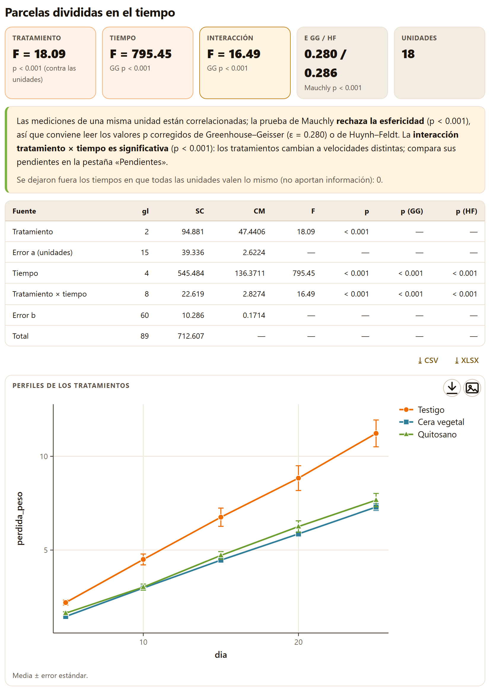
Figura 7.5.Parcelas divididas en el tiempo con el chayote del ejemplo. Los mosaicos dan la F de cada fuente con su p corregida (GG) y los épsilones; la figura Perfiles de los tratamientos muestra que el testigo pierde peso más rápido y que la cera vegetal y el quitosano casi se superponen. El mosaico ε GG / HF da los dos épsilones (sección 7.4) y el valor p de Mauchly.
7.4Esfericidad y correcciones
El análisis de parcelas divididas supone que todas las diferencias entre dos tiempos de un mismo fruto tienen la misma varianza (esfericidad). En el almacenamiento casi nunca se cumple: dos pesadas seguidas se parecen más que la primera y la última.
La app revisa el supuesto con la prueba de Mauchly (1940) y calcula dos factores de corrección, los épsilones de Greenhouse–Geisser (1959) y de Huynh–Feldt (1976, con la corrección de Lecoutre 1991). Un ε de 1 indica esfericidad perfecta; el menor posible es 1/(t − 1), con t tiempos. Los grados de libertad del tiempo y de la interacción se multiplican por ε, y con ellos se recalculan sus valores p: las columnas p (GG) y p (HF) de la tabla.
Con el chayote, Mauchly rechaza la esfericidad (p < 0.001) y los épsilones son 0.280 (GG) y 0.286 (HF), cerca del mínimo de 0.25 para cinco tiempos: la correlación entre pesadas es muy desigual, como era de esperar en una pérdida acumulada. La lectura lo dice: «la prueba de Mauchly rechaza la esfericidad (p < 0.001), así que conviene leer los valores p corregidos de Greenhouse–Geisser (ε = 0.280) o de Huynh–Feldt.» Aun corregidos, el tiempo y la interacción siguen siendo significativos (p < 0.001), y la lectura remite a la pestaña Pendientes para comparar las velocidades.
iCuál de las dos correcciones leer
Greenhouse–Geisser es conservadora: corrige de más cuando la violación es leve. Huynh–Feldt corrige menos y es la preferida cuando ε pasa de 0.75. Con ε cerca del mínimo, como aquí, las dos coinciden. Si la conclusión cambia según la que leas, repórtalo así.
Los tratamientos dentro de cada tiempo
La tabla de medias por tiempo es la misma del factorial, con una diferencia que la app anota al pie: «Dentro de cada tiempo se usa el error combinado de las dos estratas, con los grados de libertad de Satterthwaite.» Comparar tratamientos en un día fijo mezcla la variación entre frutos y la de dentro de cada fruto, así que el error es la combinación (Ea + (t − 1)·Eb)/t, con unos grados de libertad aproximados por el método de Satterthwaite (1946).
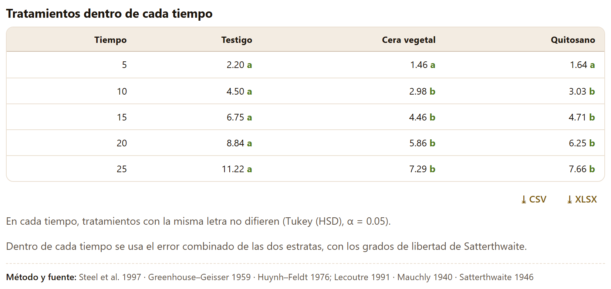
Figura 7.6. La pérdida de peso media (%) del chayote del ejemplo dentro de cada día. El día 5 los tres tratamientos comparten la letra a; del día 10 en adelante, el testigo (a) pierde más peso que la cera vegetal y el quitosano, que no difieren entre sí (b). El día 25, 11.22 % contra 7.29 y 7.66 %.
Con Dunnett contra el testigo, la cera vegetal y el quitosano difieren del testigo desde el día 10 (asterisco) y no el día 5. Los métodos citados son Steel et al. (1997), Greenhouse y Geisser (1959), Huynh y Feldt (1976), Lecoutre (1991), Mauchly (1940) y Satterthwaite (1946).
7.5Pendientes
Cuando el atributo cambia casi en línea recta con el tiempo, la manera más directa de comparar los tratamientos es comparar sus velocidades. La pestaña Pendientes, con la tarjeta Velocidad de cambio por tratamiento, ajusta «Una recta del atributo contra el tiempo para cada tratamiento y la prueba de si las pendientes (las velocidades) son iguales: análisis de covarianza.»
Los papeles son Atributo, Tiempo (numérico) —aquí el tiempo sí es un número— y Tratamiento. El ejemplo es otra vez la pérdida de peso del chayote, ahora con el día 0 incluido (las rectas parten de cero). La tarjeta Rectas y comparación de pendientes da tres mosaicos: Pendientes iguales (la F de la prueba), Más rápido y Más lento.
θAnálisis de covarianza en dos pasos
Primero se prueba si las rectas son paralelas: un modelo con una pendiente por tratamiento contra otro con una pendiente común (Snedecor y Cochran 1989). Si las pendientes difieren, ésa es la conclusión y los tratamientos se comparan por pares, con valores p ajustados por Holm (1979). Si no se demuestra que difieran, se ajusta la pendiente común y se prueba si los niveles (los interceptos) difieren, y la lectura lo dice: «No se demuestra que las velocidades difieran (…); con una pendiente común (…), los niveles sí/no difieren».
Con el chayote, las velocidades difieren (F = 39.05, p < 0.001): el testigo pierde 0.4473 % de su peso por día, la cera vegetal 0.2924 % y el quitosano 0.3078 %. La lectura lo resume: «Testigo cambia 1.53 veces más rápido que Cera vegetal.» Los pares con Holm confirman lo que mostraba la tabla de medias: el testigo difiere de los dos recubrimientos (p < 0.001 en los dos pares) y la cera vegetal y el quitosano no difieren entre sí (diferencia −0.01536 % por día, p = 0.428). Las filas significativas se pintan de verde.
Tabla 7.4. Las rectas de pérdida de peso (%) contra el día, chayote del ejemplo
Tratamiento
n
Intercepto
Pendiente (% d⁻¹)
IC 95 %
R²
Testigo
36
−0.005556
0.4473 ± 0.021
[0.405, 0.490]
0.931
Cera vegetal
36
0.02071
0.2924 ± 0.0050
[0.282, 0.303]
0.990
Quitosano
36
0.03508
0.3078 ± 0.010
[0.287, 0.328]
0.965
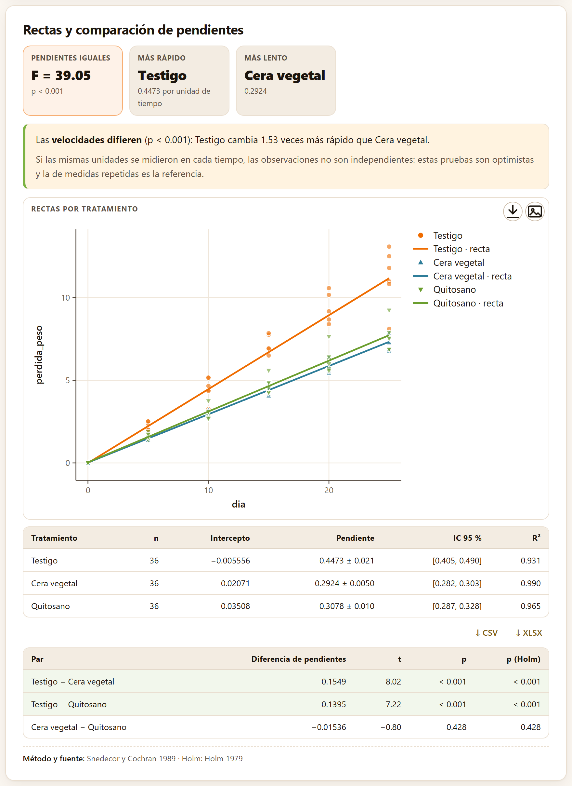
Figura 7.7.Rectas y comparación de pendientes con el chayote del ejemplo: los puntos son los frutos y las líneas la recta de cada tratamiento. La recta del testigo se abre desde el día 5; las de la cera vegetal y el quitosano casi se superponen.
!Con los mismos frutos, estas pruebas son optimistas
La lectura lo advierte siempre: «Si las mismas unidades se midieron en cada tiempo, las observaciones no son independientes: estas pruebas son optimistas y la de medidas repetidas es la referencia.» En el chayote, las 36 observaciones de cada tratamiento son sólo 6 frutos pesados seis veces, y los errores estándar de las pendientes salen más chicos de lo que son. Usa las pendientes para describir y resumir (cuánto más rápido pierde peso el testigo) y la sección 7.3 para decidir si los tratamientos difieren.
7.6Aleatorización y libro de campo
La pestaña Aleatorización se usa antes del ensayo: «Genera la asignación al azar de los tratamientos (y de los tiempos de muestreo) a las unidades, con una semilla para repetirla.» Su tarjeta es Libro de campo del ensayo.
Tabla 7.5. Los campos de Aleatorización y sus valores escritos
Campo
Valor escrito
Para qué
Tratamientos (separados por coma)
Testigo, Cera vegetal, Quitosano
Los niveles del tratamiento
Tiempos de muestreo
0, 5, 10, 15, 20
Los días (u horas, o semanas) en que se mide
Repeticiones
4
Unidades por tratamiento y tiempo (destructivo) o por tratamiento (repetidas)
Diseño
Completamente al azar
O Bloques completos al azar: cada repetición es un bloque y el sorteo se hace dentro de él
Semilla
2026
La misma semilla da siempre el mismo sorteo
Variables a medir
firmeza_N, perdida_peso, sst
Columnas vacías del libro, para anotar en campo
«Medidas repetidas: la misma unidad se mide en todos los tiempos»
sin marcar
Cambia la unidad: una por tratamiento y repetición, medida en todos los tiempos
El botón Generar sortea y muestra la tarjeta Libro de campo, con tres mosaicos (Unidades, Mediciones y Diseño) y la tabla, de la que se ven hasta 300 renglones. Con los valores escritos, el muestreo destructivo da 60 unidades y 60 mediciones (3 tratamientos × 5 tiempos × 4 repeticiones, cada fruto se mide una vez); con la casilla de medidas repetidas, 12 unidades y 60 mediciones (cada uno de los 12 frutos, 3 × 4, se mide en los 5 tiempos).
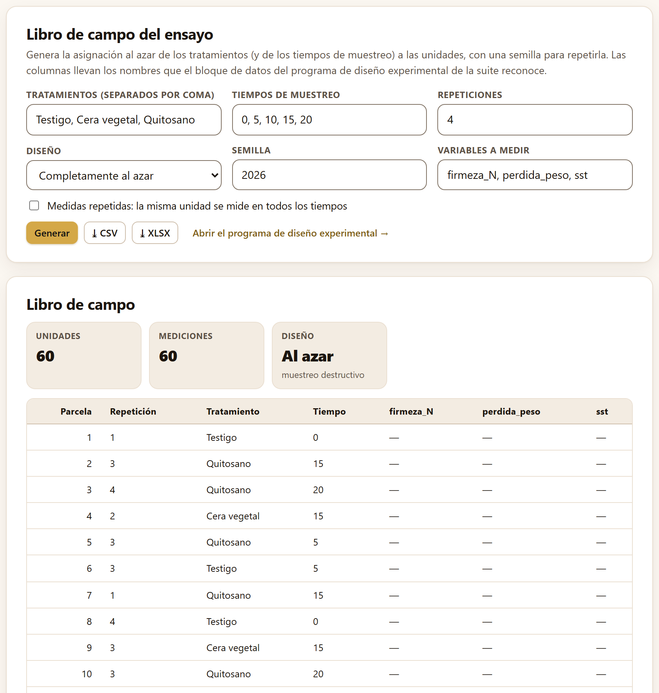
Figura 7.8. El libro de campo con los valores escritos y la semilla 2026 (muestreo destructivo, completamente al azar): las diez primeras de 60 unidades. La parcela 1 es un testigo del día 0, la 2 un quitosano del día 15, la 3 otro quitosano del día 20.
Las columnas son Parcela, Repetición (o Bloque en bloques completos), Tratamiento, Tiempo y las variables a medir. En bloques, las parcelas se numeran por bloque (101, 102… en el bloque 1). En medidas repetidas, cada parcela aparece en tantos renglones como tiempos, ya ordenados: así se pesa cada fruto en su fecha. ⤓ CSV y ⤓ XLSX descargan el libro completo (libro_de_campo), y Abrir el programa de diseño experimental → abre, en otra pestaña, el programa de diseño de experimentos de la suite LABG, cuyo bloque de datos reconoce esas columnas (Repetición con acento o sin él). Una vez medido, el mismo archivo con las columnas llenas se carga en la pestaña Factorial tratamiento × tiempo o en Medidas repetidas (con Parcela como unidad).
✦Anota la semilla
Escribe la semilla en el protocolo del ensayo. Con ella, cualquiera puede rehacer el mismo sorteo y comprobar que la asignación fue al azar; sin ella, el sorteo no se puede reproducir.
✓Regla de decisión
Si cada fruto se midió una sola vez
entonces el ensayo es un factorial: pestaña Factorial tratamiento × tiempo.
Si los mismos frutos se midieron en todos los tiempos
entonces es de medidas repetidas: el tratamiento se prueba contra las unidades y el tiempo y la interacción con p corregidas.
Si la interacción es significativa
entonces compara los tratamientos dentro de cada tiempo, o sus velocidades; no con promedios generales.
Si la interacción no es significativa
entonces el efecto del tratamiento puede resumirse con sus promedios.
Si Mauchly rechaza la esfericidad (p < 0.05)
entonces lee p (GG), o p (HF) si ε pasa de 0.75.
Si sólo importa cada tratamiento contra el testigo
entonces usa Dunnett (contra el testigo); si importan todos los pares, Tukey.
Si las pendientes difieren pero los frutos fueron los mismos
entonces úsalas para describir cuánto más rápido cambia un tratamiento y confirma con medidas repetidas.
Son guías para interpretar, no leyes: lo que sabes del cultivo, del cultivar y de cómo se condujo el ensayo siempre manda.
✕Cuando algo sale mal
El tratamiento y el tiempo salen «no estimable». Desmarcaste «Usar sólo los tiempos medidos en todos los tratamientos», faltan celdas y estás en el tipo III (sección 7.1, «Cuando faltan combinaciones»): vuelve a marcar la casilla o elige Tipo I (secuenciales). La tabla de medias tiene rayas. Ese tratamiento no se midió en ese tiempo. En medidas repetidas el mosaico de unidades dice «incompletas fuera». A esas unidades les falta algún tiempo; revisa que el identificador del fruto sea el mismo en todas sus fechas («F1» y «f1» son distintos). En Pendientes no aparece nada. El tiempo debe ser un número; «día 5» o «5 d» no lo son. Generar no cambia el sorteo. Es lo esperado con la misma semilla; cambia la semilla para otro sorteo.
8
Capítulo ocho · Bloque 8
Empaque y logística
Las cuentas de todos los días en una empacadora y en un almacén frigorífico: cuántas cajas caben en una tarima y cuántas tarimas en un contenedor, si una caja deja pasar el aire del preenfriamiento, cuánta agua pierde el producto en la cámara, cuánto cuesta guardarlo un día más, qué productos pueden compartir la cámara y cómo pasar de una unidad a otra.
8.1Tarima y contenedor
8.2Ventilación de cajas
8.3Ambiente del almacén
8.4La carta psicrométrica y la pérdida de agua
8.5Costo de almacenamiento
8.6Compatibilidad
8.7Unidades
El Bloque 8 lleva por subtítulo «Carga, ventilación, ambiente de la cámara, costos, compatibilidad y unidades». Tiene seis pestañas: Tarima y contenedor, Ventilación de cajas, Ambiente del almacén, Costo de almacenamiento, Compatibilidad y Unidades. Ninguna lee una tabla de datos: todas abren con valores de ejemplo escritos en sus campos y se recalculan en cuanto cambias uno, así que no hay ejemplo que cargar. Las cifras de este capítulo son las de esos valores de partida.
8.1Tarima y contenedor
Una caja que no llena bien la tarima desperdicia espacio en cada cama, en cada tarima y en cada contenedor; una caja que sobresale se aplasta. La pestaña busca el mejor acomodo de las cajas en la tarima y de las tarimas en el contenedor.
La tarjeta Cajas por tarima tiene dos grupos de campos. La tarima: Tarima (ISO 120 × 100 cm, Europeo 120 × 80 cm, Norteamericano 121.9 × 101.6 cm (48 × 40 in) u Otra medida), que llena Largo de la tarima (cm), Ancho de la tarima (cm) y Altura de la tarima (cm); si cambias una medida a mano, el selector pasa a Otra medida. La caja y los límites: Largo de la caja (cm) 40, Ancho de la caja (cm) 30, Alto de la caja (cm) 20, Peso de la caja llena (kg) 10, Altura máxima de la carga (cm) 210 (con la tarima), Peso máximo de la carga por tarima (kg) 1000 —el producto con sus cajas, sin la tarima— y Peso de la tarima vacía (kg) 25, el de una tarima de madera; una de plástico o de otra medida pesa distinto, y este peso sólo cuenta en el contenedor.
θTeoría en breve · Acomodar cajas en una cama
Acomodar rectángulos iguales en un rectángulo es un problema de corte clásico. La app prueba las dos orientaciones de la caja en toda la cama y, además, todos los patrones de dos bloques: parte la tarima una vez a lo largo o a lo ancho, en un múltiplo del lado de la caja, y acomoda cada parte con una orientación distinta. Se queda con el patrón que más cajas pone (heurísticas de corte en guillotina de Steudel 1979 y de Smith y De Cani 1980). Las camas son las que caben bajo la altura máxima, o menos si el peso máximo se alcanza antes.
Figura 8.1. Cajas de 40 × 30 × 20 cm en una tarima ISO de 120 × 100 cm: diez cajas por cama, combinando seis acostadas en un sentido y cuatro en el otro (100 % del área), en nueve camas: 90 cajas y 900 kg. Un contenedor refrigerado de 40 pies, cubo alto, lleva 20 tarimas en el piso: 1800 cajas.
Los mosaicos de la tarima son Cajas por cama (con el área que aprovecha), Camas (con lo que las limita: «limitado por altura» o «limitado por peso»), Cajas por tarima y Peso de la carga, con la altura total. La figura Una cama vista desde arriba dibuja el acomodo, con un color por bloque. En el ejemplo, nueve camas de 20 cm sobre una tarima de 15 cm suman 195 cm, debajo de los 210; una décima pasaría del límite. Con la tarima europea de 120 × 80 cm caben 8 cajas por cama y 72 por tarima.
Tarimas por contenedor
Debajo, Contenedor elige entre Refrigerado de 20 pies, Refrigerado de 40 pies, cubo alto y Caja refrigerada de 53 pies, con sus medidas interiores y su carga útil orientativas, y la casilla Estibar tarimas (dos niveles si caben) pone una tarima sobre otra si la altura del contenedor lo permite. La app acomoda las tarimas en el piso con el mismo método de las cajas y limita su número por la carga útil, sumando a cada tarima el Peso de la tarima vacía (kg). Los mosaicos son Tarimas por contenedor, Cajas por contenedor, Carga —el producto y las cajas más las tarimas vacías, como aclara debajo: «producto y cajas, más 25 kg por tarima vacía»; en el contenedor de 40 pies, 20 × (900 + 25) = 18 500 kg— y Piso aprovechado, y la figura Piso del contenedor dibuja el acomodo.
Tabla 8.1. La tarima de partida (90 cajas, 900 kg) en los tres contenedores
Contenedor
Tarimas
Cajas
Carga (kg)
Piso aprovechado
Límite
Refrigerado de 20 pies
9
810
8325
86.7 %
el piso
Refrigerado de 40 pies, cubo alto
20
1800
18 500
90.5 %
el piso
Caja refrigerada de 53 pies
21
1890
19 425
90.9 %
el peso
Con tarimas de 195 cm, marcar Estibar tarimas no cambia nada: dos no caben en los 255 cm del contenedor de 40 pies. La lectura recuerda que un aprovechamiento menor de 85 % sugiere cambiar la medida de la caja, que las cajas no deben sobresalir de la tarima y que hay que dejar pasillos para el aire. Las medidas de los contenedores varían con el fabricante: «verifica la ficha del transportista».
8.2Ventilación de cajas
En el enfriamiento con aire forzado, el aire tiene que atravesar las cajas. Si las caras por donde entra y sale tienen poca área abierta, el enfriamiento se alarga; si tienen demasiada, la caja pierde resistencia y se aplasta en la estiba.
La tarjeta Área abierta de las caras pide las medidas de las dos caras —Cara larga: largo (cm) 50, Cara larga: alto (cm) 25, Cara corta: ancho (cm) 30 y Cara corta: alto (cm) 25— y una tabla editable de orificios con Cara (Larga o Corta), Forma (Ranura redondeada, Rectángulo o Círculo), Largo o diámetro (cm), Ancho (cm) y Cantidad. El área de una ranura redondeada de largo a y ancho b es (a − b)·b + πb²/4; la de un círculo, πa²/4. El resultado es el área de los orificios de cada cara entre el área de la cara, en %.
Figura 8.2. Una caja de 50 × 30 × 25 cm con cuatro ranuras de 8 × 2.5 cm en cada cara larga y, en cada cara corta, dos ranuras de 7 × 2.5 cm y dos círculos de 3 cm: 6.0 % de área abierta en la cara larga y 6.2 % en la corta, las dos «suficiente».
✓Regla de decisión · Área abierta de una cara
Menos de 3 %
Insuficiente (mosaico rojo): el aire forzado apenas pasa.
De 3 a 5 %
Insuficiente (mosaico ámbar): el enfriamiento se alarga mucho.
De 5 a 8 %
Suficiente: el intervalo recomendado.
Más de 8 %
La app lo marca suficiente, pero la lectura advierte que la caja pierde resistencia a la compresión.
Varias ranuras alargadas cerca de las esquinas reparten mejor el aire que un solo orificio grande, y los orificios deben quedar alineados entre cajas y con la tarima (Thompson et al. 2008).
8.3Ambiente del almacén
La temperatura y la humedad relativa de la cámara deciden cuánta agua pierde el producto. Lo que la impulsa es el déficit de presión de vapor entre la superficie del producto, saturada a su propia temperatura, y el aire que la rodea.
La tarjeta Aire, producto y pérdida de agua tiene ocho campos, con estos valores de partida: Temperatura del aire (°C) 5, Humedad relativa (%) 85, Altitud (m) 0, Temperatura del producto (°C) 6, Producto (coeficiente de transpiración) Tomate · 140, Coeficiente (mg kg⁻¹ s⁻¹ MPa⁻¹) 140, Aire exterior (°C) 28 y HR exterior (%) 55. El selector de producto trae catorce coeficientes orientativos de Sastry et al. (1978), de la manzana (42) a la lechuga (7400); si escribes otro coeficiente, el selector pasa a Otro (escríbelo).
Figura 8.3. Una cámara a 5 °C y 85 % de HR con tomate a 6 °C: rocío a 2.7 °C, bulbo húmedo a 3.9 °C, un déficit de 0.131 kPa en el aire y de 0.194 kPa entre el producto y el aire, y una pérdida de agua de 0.234 % por día, 1.64 % por semana.
Los mosaicos dan el estado del aire de la cámara (ASHRAE 2017): la Presión, que sale de la altitud; la Humedad absoluta en g/m³, con la razón de humedad en g por kg de aire seco; el Punto de rocío, el Bulbo húmedo y la Entalpía; el Déficit del aire y el Déficit producto–aire; y la Pérdida de agua por día y por semana. La presión de saturación sale de las ecuaciones de Wagner y Pruss (2002) sobre agua y de Wagner et al. (2011) sobre hielo, las mismas de las tablas de 2017.
A 5 °C y 85 % de HR, el aire tiene 5.78 g de agua por m³ (4.59 g/kg de aire seco), su punto de rocío es 2.7 °C y su déficit, 0.131 kPa. Pero el tomate está a 6 °C, un grado más caliente que el aire, y el déficit que de verdad lo seca es 0.194 kPa. Con un coeficiente de 140 mg kg⁻¹ s⁻¹ MPa⁻¹, pierde 0.234 % de su peso por día, 1.64 % por semana. La lectura añade: «El producto está más caliente que el aire: terminar el preenfriamiento antes de almacenar reduce mucho la pérdida», y calcula qué pasaría con más humedad, con la HR que escribiste: «Con la HR en 95 % en lugar de 85 %, el déficit producto–aire bajaría a 0.106 kPa y la pérdida a 0.90 % por semana». Si la HR ya es de 95 % o más, la lectura advierte en cambio que subirla acerca el aire a la saturación y al agua condensada sobre el producto.
!El rocío y el producto frío
Si el punto de rocío del aire queda por encima de la temperatura del producto, el agua se condensa sobre él: el mosaico del rocío se vuelve ámbar y dice «el producto se condensará». Pasa al sacar producto frío a un andén caliente y húmedo, y el agua libre sobre la fruta favorece las pudriciones.
8.4La carta psicrométrica y la pérdida de agua
La carta psicrométrica pone en una sola figura la temperatura y el contenido de agua del aire. Sirve para ver de un vistazo cuánto le falta al aire de la cámara para saturarse y qué le pasa al aire de afuera cuando entra.
Figura 8.4. La carta psicrométrica de partida, a 101.3 kPa: la razón de humedad contra la temperatura de bulbo seco, con la curva de saturación en trazo grueso y las de 10 a 90 % debajo, cada una con su rótulo de HR al final de la curva, en el borde derecho. El punto naranja es la cámara (5 °C, 85 %), con una raya hasta su rocío; el cuadrado azul, el aire exterior (28 °C, 55 %).
La figura Carta psicrométrica se dibuja a la presión del sitio, así que cambia con la altitud, y su eje de temperatura va de −2 °C a 35 °C, y se alarga si la cámara está a menos de 1 °C o el aire exterior a más de 32 °C, para dejar 3 °C de margen. La distancia vertical entre el punto de la cámara y la curva de saturación es el agua que el aire todavía puede tomar. El aire exterior del ejemplo lleva casi tres veces más agua por kilo que el de la cámara: cuando entra por una puerta abierta y se enfría a 5 °C, pasa de su punto de rocío y condensa en los evaporadores, que es parte de la carga de «otras cargas» de la sección 4.7. Cada curva lleva su porcentaje de HR en el borde derecho, a la altura de su final.
Tabla 8.2. Pérdida de agua por semana del tomate de partida con otras humedades (5 °C, producto a 6 °C)
Humedad relativa
Déficit del aire (kPa)
Déficit producto–aire (kPa)
Pérdida (% por semana)
85 %
0.131
0.194
1.64
95 %
0.044
0.106
0.90
Una pérdida de agua de 3 a 5 % del peso ya se nota como marchitez o arrugas en muchos productos; el mosaico de la pérdida se vuelve ámbar cuando pasa de 3 % por semana. El coeficiente de transpiración varía casi doscientas veces entre productos: la lechuga del selector pierde agua cincuenta veces más rápido que el tomate en la misma cámara.
8.5Costo de almacenamiento
Guardar producto en frío para venderlo después sólo conviene si el precio sube más de lo que cuesta cada día de espera. La pestaña calcula ese costo diario por tarima, con la merma incluida.
La tarjeta Costo por día y por tarima pide Energía (kWh por día) 180, Tarifa por kWh 2.8, Mano de obra por día 900, Otros gastos por día 250, Depreciación y renta por año 420 000, Capacidad (tarimas) 60, Ocupación (%) 75, Merma por día (% del peso) 0.08 y Valor de una tarima 18 000. Las cantidades de dinero van en la moneda que uses; la app no escribe símbolo.
costo diario = kWh·tarifa + mano de obra + otros + depreciación/365 · por tarima = costo diario / (capacidad · ocupación) · merma = %/100 · valor
Figura 8.5. Una cámara de 60 tarimas al 75 %: 2805 al día, 62.33 por tarima de operación más 14.40 de merma, 76.73 por tarima y día.
▸Ejemplo resuelto · Un día más en la cámara
La energía cuesta 180 × 2.8 = 504 al día; con 900 de mano de obra, 250 de otros gastos y 420 000/365 = 1151 de depreciación y renta, la cámara cuesta 2805 al día. Al 75 % hay 45 tarimas, y cada una carga 62.33 de operación. La merma de 0.08 % diario sobre una tarima de 18 000 son 14.40: el total es 76.73 por tarima y día, de los que «19 % es merma de peso». Guardar una tarima sólo conviene si su precio sube más que eso por cada día de espera.
La ocupación pesa mucho: con la cámara llena (100 %) el costo de operación baja a 46.74 por tarima y el total a 61.14, porque los gastos fijos se reparten entre más tarimas. La merma, en cambio, no depende de la ocupación: depende de la humedad y la temperatura de la cámara (sección 8.3).
8.6Compatibilidad
En la práctica muchos productos comparten cámara o contenedor. No siempre se puede: uno pide una temperatura que daña al otro por frío, uno produce el etileno que madura o amarillea al otro, o uno desprende olores que el otro absorbe.
La tarjeta ¿Pueden compartir la cámara? muestra un botón por cada uno de los 38 productos de la tabla; un clic lo elige o lo quita (los elegidos van resaltados). De partida están elegidos el plátano verde, la manzana, la lechuga y la zanahoria. El desplegable Tabla de productos (editable) guarda, para cada producto, la temperatura y la HR recomendadas (T mín (°C), T máx (°C), HR mín, HR máx), la clase de producción de etileno a 20 °C (Etileno: VL < 0.1, L 0.1–1, M 1–10, H 10–100 y VH > 100 µL kg⁻¹ h⁻¹), la Sensibilidad al etileno (L, M, H), el daño por Frío (0 no, 1 moderado, 2 sensible) y el Olor («p» desprende, «a» absorbe). Son valores orientativos para los cultivares más comunes (Kader 2002; Gross et al. 2016; McGregor 1989): corrígelos con los de tu cultivar o añade productos con + Agregar fila.
Figura 8.6. Plátano verde, manzana, lechuga y zanahoria: 5 de los 6 pares son incompatibles y no hay temperatura ni HR común. Sólo la lechuga y la zanahoria pueden ir juntas.
La tarjeta Diagnóstico aparece cuando hay al menos dos productos elegidos. Sus mosaicos son Productos, Pares incompatibles, Pares con riesgo, Temperatura común y HR común (el intervalo que comparten todos, o «no hay»). La lectura enumera cada problema, par por par. Un par puede ser incompatible y tener además un riesgo: cada mosaico cuenta todos los pares con ese tipo de problema, los mismos que nombra la lista, y el de los pares con riesgo dice debajo cuántos son también incompatibles. En el ejemplo, «Pares con riesgo: 3 · 3 también incompatibles»: los tres «Riesgo por etileno» de la lista van en pares que ya eran incompatibles. La temperatura y la HR comunes se escriben como en la lista, con el signo menos verdadero y «a» entre los extremos cuando uno es negativo.
✓Regla de decisión · Lo que la app revisa en cada par
Incompatible por temperatura
Los intervalos de temperatura no se traslapan; la lectura dice además si el producto de clima cálido sufre daño por frío.
Incompatible por etileno
Un productor alto o muy alto (H, VH) junto a un producto muy sensible (H).
Riesgo por etileno
Un productor H o VH junto a uno de sensibilidad media, o un productor medio (M) junto a uno muy sensible: conviene ventilar o absorber el etileno.
Riesgo por humedad
Las humedades recomendadas quedan separadas por más de 5 puntos.
Riesgo por olor
Uno desprende olores («p») que el otro puede absorber.
Para el etileno hay remedio —ventilar, un absorbedor—; para las temperaturas no: la que protege a uno daña al otro.
▸Ejemplo resuelto · Cuatro productos en una cámara
El plátano verde pide 13–15 °C y sufre daño por frío; la manzana, de −1 a 4 °C, y la lechuga y la zanahoria, 0 °C: tres pares incompatibles por temperatura. La manzana produce mucho etileno y el plátano, la lechuga y la zanahoria son muy sensibles a él: tres pares incompatibles por etileno (el de manzana y plátano ya lo era por temperatura). Además, el plátano verde produce algo de etileno (clase M) y la manzana, la lechuga y la zanahoria son muy sensibles: tres riesgos por etileno, todos en pares ya incompatibles. En total, 5 pares incompatibles y 3 pares con riesgo; el único par sin problemas es lechuga con zanahoria. La lista escribe los intervalos como «Manzana pide −1 a 4 °C y Plátano (verde) 13–15 °C» y «Lechuga pide 0 °C».
Figura 8.7. La Matriz de compatibilidad de los cuatro productos: rojo con ✕ para los pares incompatibles, ámbar con ! para los de riesgo y verde para los compatibles; un par incompatible que además tiene riesgo se pinta rojo. Con pocos productos la matriz se dibuja centrada y a su tamaño natural, sin llenar todo el ancho de la tarjeta.
8.7Unidades
Las fichas técnicas, los artículos y los equipos usan unidades distintas: grados Fahrenheit, libras-fuerza, milésimas de pulgada, partes por millón. La última pestaña las convierte.
La tarjeta Conversión de unidades tiene tres controles: Magnitud, Valor (40) y De, la unidad del valor. Los resultados aparecen en mosaicos, uno por cada otra unidad de la magnitud, con seis cifras significativas.
Tabla 8.3. Las magnitudes y sus unidades, con el valor 40 convertido desde la primera unidad de cada una
Dos conversiones salen a menudo en poscosecha: la firmeza que un penetrómetro da en kgf o lbf (1 kgf = 9.807 N; 1 lbf = 4.448 N) y el espesor de las películas, que muchos proveedores dan en mil, milésimas de pulgada (1 mil = 25.4 µm: una película de 40 µm es de 1.57 mil). En la concentración, ppm y µL/L son lo mismo, y por eso la lista los nombra juntos, «ppm (µL/L)», como ppb y nL/L.
Para leer los resultados del bloque
Lo que ves
Lo que significa
Área de la tarima aprovechada < 85 %
La caja no le va a la tarima: prueba otra medida de caja
«limitado por peso»
Caben más camas o tarimas por altura o por piso, pero no por peso: la carga útil manda
Ventilación < 5 % en una cara
El aire forzado no pasará bien: más ranuras o más grandes
Déficit producto–aire mayor que el del aire
El producto está más caliente que la cámara: termina el preenfriamiento antes de almacenar
Pérdida de agua > 3 % por semana
Sube la HR, baja la temperatura, usa empaques que frenen la transpiración o acorta el almacenamiento
Costo por tarima y día mayor que la subida esperada del precio
No conviene guardar: vende antes
Temperatura común «no hay»
Hacen falta cámaras distintas
✕Cuando algo sale mal
No se actualizan las cajas por tarima. Todas las medidas de la tarima y de la caja deben ser mayores que cero.
La pérdida de agua es enorme. Revisa el coeficiente: está en mg kg⁻¹ s⁻¹ MPa⁻¹, y el de la lechuga (7400) es cincuenta veces el del tomate.
No aparece el diagnóstico. Elige al menos dos productos.
Un producto nuevo no se compara bien. Llena todas sus columnas en la tabla; una temperatura o una HR vacía rompe la comparación de ese producto.
9
Capítulo nueve · Bloque 9
Informe y proyecto
Lo que calculaste en los bloques 2 a 8, listo para salir de la app: un informe de un solo archivo, con figuras, tablas, interpretación, recomendaciones de manejo, métodos, referencias y cita, que se abre en cualquier navegador y se imprime a PDF; las figuras, una por una, desde el estudio de figuras; y el proyecto, un archivo pequeño con el que el trabajo se vuelve a abrir tal como quedó. El bloque no calcula nada nuevo: reúne lo que ya está en pantalla.
9.1Datos del informe y secciones
9.2Generar, descargar e imprimir
9.3Lo que lleva el informe
9.4Recomendaciones de manejo
9.5Las figuras, el estudio y el editor
9.6Guardar y abrir el proyecto
9.7Cómo citar PostHarvestPro
El subtítulo del bloque dice lo que hace: Todo lo que calculaste, en un documento para compartir; y tu trabajo, en un archivo para seguir después. No tiene pestañas, sino cuatro tarjetas, una debajo de otra: El informe, Recomendaciones de manejo, Proyecto y Cómo citar PostHarvestPro.
9.1Datos del informe y secciones
Cada análisis que corres en los bloques 2 a 8 deja una sección lista para el informe. La tarjeta El informe te deja escribir la portada, elegir qué secciones entran y generar el documento.
Su indicación lo resume: Reúne las secciones que dejaron los bloques, con sus gráficas (en SVG, con los colores del tema claro), tablas, interpretación, recomendaciones de manejo, métodos y referencias. Es un solo archivo HTML que se abre en cualquier navegador y se imprime a PDF. Los campos de la portada son:
Campo
Qué va y dónde sale
Título
El título del informe y de la pestaña del navegador; abre con Ensayo de poscosecha
Autor o responsable
Sale en la portada como Responsable; si lo dejas vacío, no aparece
Producto o cultivo
Sale como Producto; también se omite si está vacío
Fecha
Abre con la fecha del día, en la forma año-mes-día; puedes escribir otra
Resumen o notas del ensayo (opcional)
Un párrafo libre que abre la sección Resumen, antes del índice
Figura 9.1.El informe después de abrir cinco ejemplos (el mango en Resumen de calidad y en Modelos cinéticos, los frascos de aguacate, la cadena de jitomate y la hedónica del café). Arriba, marcadas, las seis secciones usadas: las de esos cinco análisis y Simulación de mejoras, que se rehizo con la cadena nueva. Abajo, sin marcar, las nueve que sólo tienen los valores con que abren sus herramientas. Los dos botones de la derecha siguen apagados hasta generar el informe.
Secciones disponibles lista una casilla por sección, con su nombre y su bloque (· Bloque 2…), en el orden de los bloques. Hay hasta 27, una por cada análisis que deja resultados:
Tabla 9.1. Las 27 secciones posibles del informe
Bloque
Secciones
2
Resumen de calidad, Color, Escala de madurez o daño, Calibres
3
Cinética de deterioro, Dependencia de la temperatura, Prueba acelerada, Tiempo hasta el rechazo
Pérdidas en la cadena, Simulación de mejoras, Daño mecánico
6
Pruebas discriminativas, Prueba hedónica, Punto justo y penalidades, CATA, Perfil descriptivo
7
Ensayo factorial, Medidas repetidas, Comparación de pendientes
8
Carga por tarima y contenedor, Ambiente del almacén, Compatibilidad en almacén
La lista tiene dos partes. Arriba, marcadas, las secciones que usaste: las de las herramientas donde cargaste datos, editaste una tabla o cambiaste un ajuste. Abajo, sin marcar y bajo el rótulo Con los valores de ejemplo con que abre la herramienta (no los has usado; márcalos si quieres que entren):, las que sólo tienen los valores de partida. Las herramientas que abren con valores escritos calculan desde que se abre la app y por eso dejan su sección sin que las toques: Dependencia de la temperatura, Prueba acelerada, Respiración (flujo continuo), Atmósfera modificada, Preenfriamiento y carga térmica, Pérdidas en la cadena, Simulación de mejoras, Pruebas discriminativas y las tres del Bloque 8, once en total. Al abrir la app, todas están abajo y arriba dice Todavía no hay secciones: corre algún análisis en los bloques 2 a 8.; en cuanto trabajas en una de esas herramientas, su sección sube y se marca sola.
Puedes marcar o desmarcar cualquiera: el informe lleva exactamente las marcadas, y la app recuerda tu elección aunque la lista se rehaga al correr otro análisis. Las calculadoras sueltas —acidez, humedad, firmeza y pérdida de peso del Bloque 2, ventilación, costo y unidades del Bloque 8— no dejan sección.
9.2Generar, descargar e imprimir
Debajo de las secciones hay tres botones, y queda un último paso antes de compartir:
Generar el informe. Arma el documento con las secciones marcadas y lo muestra en una vista previa dentro de la misma tarjeta; un aviso confirma Informe listo. Si no marcaste ninguna, la app lo dice: Elige al menos una sección (o corre algún análisis). Si después cambias algo en otro bloque, vuelve a pulsarlo: la vista previa no se actualiza sola.
⤓ Descargar HTML. Guarda el informe como informe_postharvestpro.html. Es un solo archivo, con las figuras dentro en SVG, que se abre sin conexión en cualquier navegador y se puede mandar por correo.
Imprimir o guardar PDF. Abre el diálogo de impresión del navegador sobre la vista previa. Para un PDF, elige Guardar como PDF como destino.
Revisar antes de compartir. El informe sale en el idioma de la interfaz en el momento de generarlo; cambia el idioma con ES · EN y vuelve a generarlo si lo necesitas en inglés. Las figuras se escriben con los colores del tema claro aunque trabajes en el oscuro, y la hoja de estilo del informe trae márgenes de impresión y evita cortar una figura entre dos páginas.
Figura 9.2. La vista previa después de Generar el informe, con el mango de ejemplo en Resumen de calidad y Modelos cinéticos: la portada, el índice con esas dos secciones —las únicas usadas— y el comienzo de la primera. Los botones de descarga e impresión ya están encendidos.
9.3Lo que lleva el informe
El documento tiene siempre la misma estructura:
Tabla 9.2. Las partes del informe
Parte
Contenido
Portada
Informe de poscosecha, el título, el producto, el responsable y la fecha, el logotipo de la app y la línea Generado con PostHarvestPro 1.0.0 · LABG Suite
Resumen
Tus notas, si las escribiste, y el índice de las secciones con enlaces
Las secciones
Numeradas, una por cada casilla marcada, con lo que dejó su herramienta: figuras, tablas y lectura. Por ejemplo, Resumen de calidad trae el número de observaciones, la variable de la figura, la figura de su evolución, la lectura y la tabla por grupo y tiempo
Recomendaciones de manejo poscosecha
Las de la sección 9.4, con la advertencia de que salen de reglas y deben revisarse con el conocimiento del cultivo y del mercado
Métodos y referencias
Una nota de que todo se calculó en el navegador con métodos validados contra implementaciones independientes; los métodos de los bloques de las secciones marcadas, con sus fuentes abreviadas (los mismos de la sección 1.5); y la lista completa de esas obras
Cómo citar
La referencia y la entrada BibTeX del programa (sección 9.7)
Pie
Programa, versión, autor, licencia y dirección
Las referencias se eligen por bloque, no por sección: si incluyes sólo Resumen de calidad, el informe lista los seis métodos del Bloque 2 y sus obras, aunque no hayas usado las escalas ni los calibres.
9.4Recomendaciones de manejo
La segunda tarjeta convierte los resultados en recomendaciones prácticas: Salen de los resultados de las secciones marcadas arriba, con reglas explícitas; revísalas con tu criterio antes de usarlas. Se rehacen cada vez que un bloque cambia un resultado o que marcas o desmarcas una sección, y son las mismas que entran al informe.
Figura 9.3.Recomendaciones de manejo después de abrir los dieciocho ejemplos de la app y de llevar las k del mango a Temperatura con Llevar las k al análisis de temperatura →. Las herramientas que no se tocaron (atmósfera modificada, ambiente del almacén, compatibilidad) no dan recomendación.
Cada recomendación sale de una regla fija aplicada al resultado de una sección, y sólo se escribe si esa sección está marcada (la de las cajas, que no deja sección, si trabajaste en Bloque 8›Ventilación de cajas). La tabla dice cuál; la última columna da lo que escribe la app con los ejemplos cargados.
Tabla 9.3. Las reglas de las recomendaciones
Se escribe si…
Lo que recomienda, con los ejemplos
Los modelos cinéticos del Bloque 3 dan una vida al límite
La vida de cada grupo —13: 25.9; 20: 10.4; 25: 6.3— y programar la venta antes, con margen para la distribución
Temperatura (Bloque 3) tiene una Eₐ
Cuánto acorta la vida cada grado de más, calculado de 10 a 11 °C: Con Eₐ ≈ 84 kJ/mol, … en torno a 12 %, con las k del mango llevadas desde los modelos cinéticos; la cadena de frío continua es la medida más rentable
Climaterio (Bloque 4) clasifica el producto como climatérico
Cosechar en madurez fisiológica, enfriar pronto y mantener lejos del etileno hasta la maduración controlada
El sistema estático (Bloque 4) da más de 40 mg CO₂ kg⁻¹ h⁻¹
Dimensionar el preenfriamiento y la refrigeración con el calor de la respiración (el aguacate del ejemplo respira 59.4)
Hay un cálculo de atmósfera modificada (Bloque 4)
Si llega a la ventana, verificar con lecturas reales; si no, cambiar película, espesor, área o masa (con los valores de partida no llega, pero su sección no entra mientras no la uses o la marques)
Hay una cadena de pérdidas (Bloque 5)
Invertir en la etapa que pierde más valor: «Venta al menudeo» … (36.5 % del total) con la cadena del jitomate
El daño mecánico (Bloque 5) tiene la curva de incidencia
Mantener las caídas por debajo de la altura que daña al 10 % de los frutos, con su valor y su unidad, y acolchar los puntos de transferencia: Limita las caídas en la línea de empaque y en la carga por debajo de 15.3 cm, la altura que daña al 10 % de los frutos (al 50 % los daña una caída de 26.9 cm); acolcha los puntos de transferencia. Si aun las caídas más bajas del ensayo dañan a más del 10 %, pide acolchar y evitar cualquier caída libre
La hedónica (Bloque 6) tiene un producto preferido
Destacarlo («Altura lavado») y usar las penalidades para ajustar a los demás
El ambiente del almacén (Bloque 8) da más de 2 % de pérdida de agua por semana
Subir la humedad relativa, bajar la temperatura del producto o usar un empaque que frene la transpiración
Las cajas (Bloque 8) tienen menos de 5 % de área abierta en alguna cara
El enfriamiento con aire forzado será lento
La compatibilidad (Bloque 8) encuentra pares incompatibles
Separar los productos por temperatura o por etileno
iLa energía de activación sale de la pestaña Temperatura
La recomendación de la cadena de frío usa la Eₐ de Bloque 3›Temperatura, que abre con las k del ajuste del mango de ejemplo. Su sección entra cuando la usas: lo más directo es pulsar Llevar las k al análisis de temperatura → en Bloque 3›Modelos cinéticos (capítulo 3), que copia las k de tu propio ajuste.
Sin secciones marcadas —por ejemplo, al abrir la app—, la tarjeta dice Aún no hay resultados de los que sacar recomendaciones.; en el informe, si ninguna sección marcada da recomendación, la parte de recomendaciones dice Sin recomendaciones automáticas para estas secciones.
9.5Las figuras, el estudio y el editor
Las figuras del informe son las mismas de la app. Si las necesitas sueltas —para una tesis, un artículo o una presentación—, cada una se descarga desde su recuadro, y se pule en el estudio de figuras o en su editor.
En la esquina de cada figura hay dos descargas rápidas: Descargar SVG, un vector que se edita en cualquier programa de dibujo, y Descargar PNG a 300 ppp, una imagen de 170 mm de ancho —el de una página de revista— con su resolución escrita en el archivo. Las dos llevan los colores del tema claro. Muchas figuras tienen además Datos de la figura (CSV), con los números que se dibujaron. Al pasar el puntero aparecen dos botones más: ✎ (Editar esta figura: títulos, ejes, series, leyenda, textos y anotaciones) y el del lápiz con regla (Abrir en el estudio de figuras: pantalla dividida para editar y exportar). La búsqueda Ctrl + K también encuentra las figuras por su título y las abre en el estudio.
Figura 9.4. La cinética de la firmeza del mango de ejemplo (Bloque 3›Modelos cinéticos) en el estudio de figuras. Debajo de la figura, su tamaño de salida: 85 × 49.4 mm a 600 ppp, 2008 × 1166 píxeles; la línea punteada de arriba marca el ancho de columna y media de una revista (114 mm).
El estudio es común a toda la suite. Pone la figura a la izquierda, a escala, y el inspector a la derecha. La barra de arriba deshace y rehace, compara el antes y el ahora, acerca y aleja (Ajustar la deja del tamaño de la pantalla), muestra una regla, aplica Preajustes de un clic y exporta con Exportar; otros botones acomodan el inspector y Cerrar estudio vuelve a la app. El inspector empieza con Buscar un control… y tiene estas secciones:
Sección
Qué hace
Ajustes de la figura
Los controles que la figura tiene en su bloque. En Datos y opciones de la sección, aquí, las descargas CSV y XLSX de las dos tablas de la tarjeta y Llevar las k al análisis de temperatura →; en Descarga (la de la app), los tres botones de la esquina de la figura con su nombre: SVG, PNG a 300 ppp y Datos (CSV)
Edición fina de esta figura (✎ de la app)
El editor de la figura, acoplado y encabezado con su título completo (Cinética de firmeza_N), con sus pestañas General, Ejes y rejilla, Series, Leyenda, Textos y Anotaciones: título, subtítulo y nota al pie dentro de la figura, tipografía, tamaño de los textos, grosor de las líneas, tamaño de los puntos, fondo y marco
Paleta y color
Cambia los colores de las series por una paleta (LABG oro y negro, Okabe e Ito, Viridis (ordenada), Grises…) y simula cómo la ve una persona con daltonismo (sólo en pantalla)
Texto y líneas, Leyenda
Ajustes del estudio para los textos y la leyenda; en las figuras de la app, la leyenda se acomoda desde la pestaña Leyenda del editor
Tamaño y exportación
Formato PNG, SVG, PDF o TIFF; Ancho 85, 114 o 180 mm (o en pulgadas); Resolución 300, 600 o 1200 ppp; Fondo blanco, como se ve o transparente. Avisa si el texto queda demasiado chico para una revista
Preajustes, Historial
Combinaciones listas de tamaño y estilo, y la lista de los cambios hechos
El pie del estudio recuerda los atajos: Clic en la figura: su sección · Doble clic en un texto: cambiarlo · Ctrl + rueda: zoom · B: antes y ahora · ?: atajos. Los cambios del estudio y del editor sólo afectan a cómo se ve la figura, nunca a los datos ni a los cálculos.
iEl tamaño del texto al exportar
Una figura de la app reducida a 85 mm deja textos de unos 4 pt, y el estudio lo advierte (las revistas suelen pedir 6 a 8 pt). Antes de exportar para una revista, sube el tamaño de los textos en el editor o usa un preajuste.
9.6Guardar y abrir el proyecto
La app no guarda tus datos entre una sesión y otra: cada vez que la abres empieza vacía. La tarjeta Proyecto resuelve eso: Guarda en un archivo JSON las tablas que cargaste, las columnas que elegiste, las tablas editadas y los ajustes. Al abrirlo, la app recalcula todo. El archivo se queda en tu equipo.
⤓ Guardar proyecto descarga proyecto_postharvestpro_fecha.json con las tablas de todas las herramientas que leyeron datos (con el papel de cada columna), todas las tablas editables (escalas, calibres, cadena, películas, productos…), el valor de cada campo y cada selector de los bloques 2 a 8, el idioma, los datos de la portada del informe y qué secciones usaste y cuáles marcaste o desmarcaste.
Abrir proyecto… lee ese archivo, devuelve cada valor a su lugar, vuelve a correr todos los análisis y deja marcadas las mismas secciones que al guardarlo. Al terminar dice cuánto restauró: Proyecto abierto: … tablas de datos, tablas editadas y ajustes. Si el archivo no es de la app, avisa: El archivo no es un JSON válido. o El archivo no es un proyecto de PostHarvestPro.
No hay atajo de teclado para guardar: se hace con el botón. El proyecto no guarda las figuras ni el informe, que se rehacen al abrirlo. Si al cerrar la pestaña ya habías trabajado, la app te advierte que perderás lo que no guardaste.
✓Un proyecto por ensayo
Guarda un proyecto por ensayo o por lote, con la fecha en el nombre. Es un archivo de texto pequeño que se manda por correo: quien lo abra en su propia copia de PostHarvestPro ve exactamente tus resultados y puede revisar cada decisión, de las columnas elegidas a los límites de los calibres.
9.7Cómo citar PostHarvestPro
La última tarjeta repite la cita de la portada (sección 1.8), sin botones de copiar: la referencia en el idioma de la interfaz y la entrada BibTeX.
Barrera-Guzmán, L. Á. (2026). PostHarvestPro: fisiología y tecnología poscosecha, calidad, vida de anaquel y evaluación sensorial en el navegador (versión 1.0.0) [Programa de cómputo]. Zenodo. https://doi.org/10.5281/zenodo.23935616
La entrada BibTeX lleva la clave barreraguzman2026postharvestpro, el título en inglés, la versión, el año, la licencia GPL-3.0-or-later, el DOI y la dirección. La cita lleva el DOI de concepto de Zenodo, que siempre lleva a la versión más reciente. Cita además el método de cada resultado, que da su línea Método y fuente: y la sección Métodos y referencias del informe.
✓Regla de decisión: qué sacar de la app
Si vas a entregar un reporte a un productor o a un cliente
entonces genera el informe sólo con tus secciones, revisa las recomendaciones y guárdalo como PDF.
Si una figura va a una tesis o a una revista
entonces expórtala desde el estudio: PDF o SVG si se va a editar, PNG o TIFF a 600 ppp si piden imagen, con el texto a 6–8 pt.
Si necesitas los números en una hoja de cálculo
entonces usa los botones ⤓ CSV o ⤓ XLSX de cada tabla, o Datos de la figura (CSV).
Si vas a seguir otro día o a compartir el análisis
entonces guarda el proyecto.
El informe y el proyecto se quedan en tu equipo; nada se envía a ningún servidor.
✕Cuando algo sale mal
Falta en el informe una sección que esperaba. Está en la parte de abajo de la lista, sin marcar: o no la usaste (sólo tiene los valores de partida de la herramienta) o la desmarcaste; márcala y vuelve a generar. Falta una recomendación. Su sección no está marcada (sección 9.4). El informe no muestra un cambio reciente. La vista previa es una foto del momento: pulsa otra vez Generar el informe. Los botones de descargar e imprimir están apagados. Se encienden después de generar el informe. El proyecto no abre. El archivo no es un proyecto de PostHarvestPro o se dañó al editarlo a mano; ábrelo con un editor de texto y comprueba que contenga la línea "app": "PostHarvestPro". Al abrir un proyecto falta una tabla. Si la herramienta cambió de versión, alguna columna o ajuste puede no coincidir; vuelve a cargar esa tabla y guarda un proyecto nuevo.
A
Apéndices
Apéndices
Lo que conviene tener a la mano y no cabía en ningún capítulo: qué archivos lee y escribe la app y cómo los lee, las reglas y las fórmulas de los nueve bloques reunidas en un solo lugar, el vocabulario de la poscosecha y de la estadística que usa el manual, qué hacer cuando algo no sale, la licencia de la herramienta con la manera de citarla y las 81 referencias de la app.
ALos archivos que la app lee y escribe
BLas reglas y las fórmulas, reunidas
CGlosario
DCuando algo no sale
ELa herramienta: licencia y cómo citarla
FReferencias
ALos archivos que la app lee y escribe
PostHarvestPro corre en el navegador y no envía nada a ningún servidor: las tablas entran desde tu computadora y lo que la app escribe sale a tu carpeta de descargas.
A.1 · Lo que la app lee
Cada herramienta que analiza una tabla tiene la misma entrada (sección 2.1): Abrir archivo (CSV, TXT, XLSX, ODS), Pegar una tabla o soltar el archivo en …o suelta aquí el archivo. El proyecto entra por el Bloque 9.
Qué
Extensión
Cómo lo lee
Tabla de texto
.csv.tsv.txt
El separador se adivina con las primeras 20 líneas: el tabulador, el punto y coma o la coma, el que aparezca el mismo número de veces en todas (las comillas se respetan). Si el separador no es la coma, se acepta la coma decimal (12,5). La marca de orden de bytes del principio se ignora y las líneas vacías se saltan.
Libro de hoja de cálculo
.xlsx.xlsm.ods
Lo lee un lector propio, sin bibliotecas. Si el libro tiene varias hojas aparece un selector y se abre la primera. Los formatos antiguos (.xls, .xlsb, .xlt, .xla) no se abren: guárdalos como .xlsx, .ods o .csv.
Celdas pegadas
—
Copiadas de una hoja de cálculo, con los nombres de las columnas en la primera fila; se leen como un texto separado por tabuladores.
Proyecto
.json
Abrir proyecto… del Bloque 9. Sólo un archivo escrito por la app, con "app": "PostHarvestPro" (capítulo 9).
En todos los casos la primera fila son los nombres de las columnas (una sin nombre se llama col1, col2…, y un nombre repetido recibe _2). Una celda es número si lo parece (con signo, decimales o exponente); si no, es texto. Las celdas vacías, NA, N/A, NaN, null, - y — son faltantes. Las tablas van siempre en formato largo: una fila por unidad observada (fruto, frasco, consumidor por producto) y una columna por variable.
Después de leer la tabla, la app propone la columna de cada papel por su nombre: compara sin mayúsculas, acentos ni signos, primero el nombre completo y luego como parte del nombre (Temperatura (°C) sirve para la temperatura). Los papeles marcados (opcional) pueden quedar en — ninguna —. Algunas listas se proponen por su contenido: los términos CATA son las columnas con sólo 0 y 1, y los atributos de punto justo, las que empiezan por jar_. En Bloque 5›Daño mecánico, volumen_mm3 y energia_J llenan Volumen del daño (mm³), para la susceptibilidad y Energía del impacto (J), y la masa (Masa del fruto (g), si no hay energía) sólo se usa a falta de energía. En Bloque 4›Climaterio, el nombre de la columna propone también las unidades: Unidad del tiempo (días u horas; dia da días y un nombre que termina en _h, horas) y Unidad de la respiración (mg o mL CO₂ kg⁻¹ h⁻¹, según lleve mg o ml).
Los diez conjuntos de ejemplo
Los mismos que trae la app, en la carpeta data/ y con ⤓ CSV del ejemplo en cada herramienta. Todos son simulados (tools/generar_datos.R, semilla 20261004).
El libro de campo aleatorizado: Parcela, Repetición (o Bloque), Tratamiento, Tiempo y una columna vacía por variable de respuesta.
9
informe_postharvestpro.html
El informe: un solo archivo HTML con las figuras dentro (capítulo 9).
9
proyecto_postharvestpro_AAAA-MM-DD.json
El proyecto: app, version, la fecha (saved), el idioma (lang), las tablas cargadas con sus columnas elegidas (inputs), las tablas editables (edits), los campos y casillas de todos los bloques (forms, con las unidades del climaterio y el peso de la tarima vacía) y los datos del informe (report): título, autor, cultivo y notas, y las listas de las secciones que usaste (used), de las herramientas en que trabajaste (panes) y de las secciones que marcaste o desmarcaste a mano (choice), para que al abrirlo el informe tenga las mismas.
cualquiera
<nombre de la figura>.svg · .png
Cada figura, con el nombre interno que se ve en este manual (b6-hedonica.png; con la interfaz en inglés, el del bloque más su título en inglés: b6-liking-by-product.png) y los colores del tema claro; el PNG a 170 mm de ancho y 300 ppp, con la resolución escrita en el archivo. Cuatro figuras (b2-calidad, b2-escala, b2-calibres y b3-cinetica) tienen además Datos de la figura (CSV). El estudio de figuras exporta PNG, SVG, PDF y TIFF.
cualquiera
el archivo del ejemplo
⤓ CSV del ejemplo descarga el CSV de data/ tal cual.
Todos los CSV usan la coma como separador, el punto decimal y saltos de línea de Windows, y van en UTF-8 con marca de orden de bytes para que una hoja de cálculo lea los acentos, la µ y el °. Las tablas de resultados se escriben como se ven: con los encabezados en el idioma de la interfaz y los números ya redondeados, y con los intervalos dentro de la misma celda (0.500 [0.342, 0.658]); son para leer o pegar en un documento, no para volver a calcular. Los archivos que van a otra app (la cadena, las medias del perfil, el plan de servicio, el libro de campo) llevan los números completos.
iLo que el navegador recuerda
El navegador guarda sólo preferencias, no datos: el idioma (postharvestpro:lang), el tema claro u oscuro, la última pestaña abierta de cada bloque, las animaciones, los ajustes del estudio de figuras y las ediciones del editor ✎. Al enviar una tabla a otra app de la suite, deja además una copia en labg:handoff para que esa app la recoja si la abres desde el mismo sitio. Para conservar un trabajo, guarda el proyecto.
BLas reglas y las fórmulas, reunidas
Las fórmulas que la app calcula y las reglas con que avisa, clasifica o decide, con el bloque donde actúan y sus valores por omisión. Son las que explica cada capítulo; aquí están juntas para consultarlas de un vistazo.
B.1 · Calidad, madurez y color (Bloque 2)
Índice de madurez
SST/AT; BrimA = SST − 2·AT (Jordan et al. 2001).
Acidez titulable
% = VNaOH (mL) · N · peso miliequivalente del ácido · (aforo / alícuota) · 100 / muestra; titulación a pH 8.1. Para expresarla como otro ácido sólo cambia el peso miliequivalente.
Humedad y materia seca
Con las masas netas (sin la cápsula), base húmeda = (fresca − seca) / fresca · 100; materia seca = seca / fresca · 100; base seca = (fresca − seca) / seca · 100.
Firmeza
1 kgf = 9.80665 N; presión (kPa) = fuerza (N) / área del émbolo (mm²) · 1000.
Pérdida de peso
% = (inicial − actual) / inicial · 100; la tasa por día, por mínimos cuadrados por el origen. Aviso al llegar a 5 %: «cerca del límite en que muchos frutos se arrugan».
Croma y tono
C* = √(a*² + b*²); h° = atan2(b*, a*), de 0 a 360°. Nombre del tono: ≥ 105° verde, 85–105 verde-amarillo, 70–85 amarillo, 50–70 naranja, 25–50 rojo-naranja, debajo rojo.
Índices de color
a*/b*; CCI = 1000·a* / (L*·b*); el índice de pardeamiento (BI), de blancura (WI), de amarillez (YI) y de color del tomate (TCI) del conversor.
Diferencias de color
ΔE*ab = √(ΔL*² + Δa*² + Δb*²); ΔE94 y ΔE00 (CIEDE2000). Lectura de ΔE00 (Mokrzycki y Tatol 2011): < 1 imperceptible; 1–2 sólo para un observador entrenado; 2–3.5 para cualquier observador; 3.5–5 diferencia clara; ≥ 5 colores distintos. La figura del color en el tiempo traza la línea de 3.5.
Índice de McKinney
100 · Σ(clase · n) / (N · clase máxima); va desde 100 · clase mínima / clase máxima (todo en la clase más baja: 0 si la escala empieza en 0, 20 con una escala de 1 a 5) hasta 100, y la lectura dice ese intervalo. Comercializable = % de unidades con clase ≤ la Tolerancia comercial (clase máxima aceptada) (1 por omisión). Las calificaciones que no son una clase no se cuentan, y un lote sin ninguna dentro de las clases se deja fuera, con aviso.
Calibres
Cada clase incluye su mínimo y excluye su máximo, salvo la última. Los frutos fuera de todas las clases se cuentan aparte (mosaico y lectura); si ninguno cae dentro, no hay calibre más frecuente y la app avisa.
B.2 · Cinética, vida de anaquel y rechazo (Bloque 3)
Órdenes de reacción
Cero: C = C₀ − kt; primero: C = C₀·e−kt; segundo: 1/C = 1/C₀ + kt. Se ajustan por mínimos cuadrados no lineales en la escala original (o linealizados, si se elige) y se comparan por AIC y peso de Akaike; por omisión se usa El de menor AIC; un orden que no se puede ajustar queda fuera de la comparación, con una nota. Hacen falta al menos 3 observaciones en 2 tiempos.
Vida al límite
El tiempo en que el modelo llega al Límite de aceptación (25 N en el ejemplo), con su intervalo de confianza; vida media = el tiempo a C₀/2.
Arrhenius
ln k = ln A − Eₐ/(RT), con T en kelvin y R = 8.314 J mol⁻¹ K⁻¹; ponderado por el error estándar de k si se pide. Al menos 2 temperaturas distintas. Bloque 3›Temperatura abre con las k de partida del mango del ejemplo, las mismas que da Modelos cinéticos (0.06119, 0.1569 y 0.2508 a 13, 20 y 25 °C, con C₀ = 123.736): Eₐ = 84.2 kJ/mol. Llevar las k al análisis de temperatura → fija el orden, C₀ y el límite antes de llenar la tabla, y todo se recalcula al instante.
Q10
(k₂/k₁)10/(T₂ − T₁) entre dos temperaturas; desde Eₐ, Q10 = exp(10·Eₐ / (R·T·(T + 10))): no es constante, baja al subir la temperatura.
Raíz cuadrada
√k = b·(T − Tmín).
Extrapolación
Una temperatura de almacén fuera de las ensayadas se marca «extrapolación» en los mosaicos.
Prueba acelerada
ln θ contra 1/T (Arrhenius) o contra T (Q10), con el intervalo de predicción a la temperatura de almacén; al menos 3 vidas en 2 temperaturas.
Kaplan–Meier
Ŝ(t) = Π(1 − dᵢ/nᵢ); intervalo logarítmico con Var[log Ŝ] = Σ dᵢ / (nᵢ(nᵢ − dᵢ)) (Greenwood). Comparación de grupos por el rango logarítmico.
Modelos paramétricos
Weibull, log-normal, log-logístico y exponencial por máxima verosimilitud con censura por la derecha, comparados por AIC; el tiempo hasta el Rechazo tolerado (%) (10 por omisión) y las razones de tiempos contra el grupo de referencia. Sin frutos rechazados (estado 1) ningún modelo se ajusta; un modelo cuya máxima verosimilitud no converge queda con AIC aproximado y una nota.
B.3 · Respiración, etileno y atmósferas (Bloque 4)
Sistema estático
Tasa = pendiente del gas (% por hora) / 100 · volumen libre / volumen molar · masa molar · 1000 / masa de producto (mg kg⁻¹ h⁻¹); el volumen libre es el del frasco menos el del producto (masa / densidad). CR = CO₂ producido / O₂ consumido; aviso si CR > 1.3: «posible respiración anaerobia».
Calor de respiración
10.67 J por mg de CO₂ (la oxidación de una hexosa); W por tonelada = r · 10.67 · 1000 / 3600.
Clases (Kader 2002)
Etileno a 20 °C (µL kg⁻¹ h⁻¹): < 0.1 muy baja, 0.1–1 baja, 1–10 moderada, 10–100 alta, ≥ 100 muy alta. Respiración a 5 °C (mg CO₂ kg⁻¹ h⁻¹): < 5 muy baja, 5–10 baja, 10–20 moderada, 20–40 alta, 40–60 muy alta, más extremadamente alta.
Climaterio
Alza respiratoria = pico / mínimo previo ≥ Alza respiratoria mínima (×) (1.5), con el pico antes de la última lectura; estallido de etileno = pico / mínimo previo ≥ Alza de etileno mínima (×) (10) o pico ≥ Etileno pico mínimo (1 µL kg⁻¹ h⁻¹). Climatérico: las dos (o sólo la respiratoria si no hay etileno); no climatérico: ninguna, con respiración plana o en descenso; lo demás, incierto. Picos y adelanto del etileno en la Unidad del tiempo elegida («día 6», «1 día después»).
Atmósfera de equilibrio
O₂ dentro = O₂ fuera − 100·r·W·24·L / (P·A); CO₂ análogo con la permeabilidad al CO₂ y CR. Con Respiración limitada por el O₂ (Michaelis–Menten), r = Vm·[O₂] / (Km + [O₂]·(1 + [CO₂]/Ki)). β = PCO₂/PO₂; β necesaria = CR·(20.95 − O₂) / (CO₂ − 0.04).
Límites del empaque
O₂ interno < 1 %: riesgo de anaerobiosis. Un espesor fuera de 8–150 µm no se puede fabricar ni sellar como bolsa.
Enfriamiento
Y = (T − Tm)/(Ti − Tm) = j·e−Ct; medio enfriamiento = ln(2j)/C; siete octavos = ln(8j)/C.
Carga térmica
Calor de campo = m·cp·ΔT, con cp = 0.0335·agua (%) + 0.837 kJ kg⁻¹ K⁻¹ (Siebel); más el empaque y la respiración; 1 t de refrigeración = 3.517 kW.
B.4 · Pérdidas y daño mecánico (Bloque 5)
La cadena
Cada etapa pierde un % de lo que le entra (o unos kilos) y lo perdido ya no llega a la siguiente; valor perdido = kilos perdidos · precio de esa etapa. Índice de pérdidas = perdido / inicial · 100.
Puntos críticos
Pareto: las etapas ordenadas de mayor a menor que juntas suman el 80 % de la pérdida, en kilos y en valor.
Simular mejoras
La reducción es relativa: 50 % es perder la mitad de lo que se pierde hoy en esa etapa. Con una cadena nueva, propone la etapa que más valor pierde (en el ejemplo, Venta al menudeo).
Daño mecánico
Curvas lineal, cuadrática, de potencia (a·xb) y exponencial (a·ebx), estas dos ajustadas en escala logarítmica pero con a (no ln a) en la tabla; se comparan por AIC. Energía = m·g·h.
Susceptibilidad al daño
Volumen del daño (mm³) / energía (J), promediado sobre los frutos con daño medido y energía positiva (Bajema y Hyde 1998): mm³/J (135 en el ejemplo, 60 frutos). La energía es la de su columna, la del eje x si es una energía o m·g·h con la masa y la altura. Con el área en lugar del volumen sale en mm²/J, con el mosaico marcado como aviso y una advertencia en la lectura: no se compara con valores publicados. Volumen de un casquete = πh(3w²/4 + h²)/6.
Incidencia
Regresión logística de dañado (0/1) contra la altura; la altura que daña al 50 % (e50) y al 10 % (e10), con intervalo de Fieller y en la unidad del eje (26.9 y 15.3 cm en el ejemplo); el umbral de la recta, también con unidad (3.5 cm).
Diferencia: p = P(X ≥ x | pc₀); similitud: p = P(X ≤ x | pc₀), con pc₀ el de pd₀. Error estándar de d′ por el método delta.
Planear
El menor número de jueces cuya potencia exacta supera la deseada (por omisión d′ 1.5, α 0.05, potencia 0.8); potencia < 0.8 se marca «baja».
A–no A · preferencia
d′ = z(H) − z(F), p de Fisher unilateral; preferencia: binomial bilateral con p₀ = ½. Los «sin preferencia» se excluyen o se reparten mitad y mitad; si son impares, uno se descarta.
Hedónica
Agrado = producto + consumidor + error; Tukey–Kramer al 5 %; Friedman con los consumidores completos. Desbalanceado: tabla secuencial (producto primero) más la fila Producto, ajustado por consumidor (producto al final), que es el efecto que se informa; medias observadas.
Punto justo
Caída = ȳjusto − ȳgrupo; penalidad ponderada = caída · % del grupo / 100; t con varianza combinada. Importa si el grupo reúne ≥ el Umbral de consumidores (%) (20) y la caída es positiva. Escala de 3, 5, 7 o 9 niveles: con un número par, aviso y resultados ocultos (fuera del informe).
CATA
Q = (k − 1)[kΣCj² − N²] / (kN − ΣRi²), χ² con k − 1 gl; McNemar por pares con Holm; análisis de correspondencias de la tabla de frecuencias.
Perfil
Intensidad = producto + juez + [sesión] + producto × juez + error; con repeticiones, F de producto = CMproducto / CMproducto×juez; medias con LSD o Tukey con ese error; ACP de las medias.
Panel
Se señala a un juez si su p mediano > 0.20 («discrimina poco»), su acuerdo mediano < 0.5 («no coincide con el panel») o su DE residual media > 1.5 veces la mediana del panel («repite poco»).
Fichas
Cuadrado de Williams: t órdenes con t par, 2t con t impar; balance completo si los jueces son múltiplo de los órdenes (6 en la triangular). Códigos de tres dígitos (100–999) sin repetir.
B.6 · Ensayos (Bloque 7)
Factorial
Tratamiento × tiempo con sumas de cuadrados tipo III (por omisión); si la interacción es significativa, los tratamientos se comparan dentro de cada tiempo. Tukey, LSD o Dunnett contra el testigo.
Celdas vacías
Si alguna combinación tratamiento × tiempo no tiene datos, la app la nombra. Con el tipo III, los efectos principales no son estimables (gl, SC, CM, F y p con raya); la interacción, con menos gl, y las comparaciones dentro de cada tiempo siguen valiendo. Con el tipo I, cada efecto se prueba en orden y la interacción pierde grados de libertad.
Medidas repetidas
Tratamiento contra el error entre unidades; tiempo e interacción contra el error dentro. Esfericidad por Mauchly; ε de Greenhouse–Geisser = (Σλ)² / ((b − 1)Σλ²) y de Huynh–Feldt; dentro de cada tiempo, el error combinado con los grados de libertad de Satterthwaite.
Pendientes
Una recta por tratamiento; prueba de pendientes iguales y pares con Holm.
B.7 · Empaque y almacén (Bloque 8) e informe (Bloque 9)
Tarima y contenedor
La carga de cada tarima es el producto y las cajas más el Peso de la tarima vacía (kg) (25); las tarimas por contenedor se limitan por espacio o por peso.
Ventilación
Área abierta de cada cara (%): ≥ 5 % suficiente; 3–5 % en amarillo; < 3 % en rojo.
Psicrometría
Presión de saturación sobre agua (Wagner y Pruss 2002) y sobre hielo (Wagner et al. 2011). Déficit producto–aire = pws(Tproducto) − HR·pws(Taire). La frase «Con la HR en 95 % en lugar de …» recalcula el déficit y la pérdida con la HR escrita.
Pérdida de agua
% por día = k (mg kg⁻¹ s⁻¹ MPa⁻¹) · déficit (MPa) · 86 400 / 10⁶ · 100. El informe la señala si pasa de 2 % por semana.
Compatibilidad
Incompatibles si los intervalos de temperatura no se traslapan, o si uno produce mucho etileno (clase alta o muy alta) y el otro es muy sensible; aviso si las humedades difieren más de 5 puntos, si hay riesgo moderado por etileno o si uno desprende olores. Pares con riesgo cuenta todo par con algún aviso, aunque además sea incompatible (lo dice debajo: «3 también incompatibles»).
Recomendaciones del informe
Sólo con las secciones marcadas (por omisión, las que usaste; las que guardan sólo los valores de ejemplo quedan sin marcar). Reglas fijas: la vida al límite de cada grupo; con Eₐ, el % de vida que se pierde por cada grado (entre 10 y 11 °C); climatérico; respiración > 40 mg CO₂ kg⁻¹ h⁻¹; empaque fuera de ventana; la etapa de mayor valor perdido; caídas por debajo de la altura que daña al 10 % (con la del 50 %, en su unidad); el producto de más agrado; pérdida de agua > 2 % por semana; cajas con < 5 % de área abierta; productos incompatibles.
CGlosario
Los términos de la poscosecha, del análisis sensorial y de la estadística que usa el manual, con el sentido en que los usa la app.
Término
Significado
A–no A
Prueba en que el juez aprende la muestra «A» y luego dice, ante cada muestra, si es «A» o no.
AIC
Criterio de información de Akaike: compara modelos por su ajuste penalizado por el número de parámetros; el menor es el mejor. El peso de Akaike es la probabilidad relativa de cada modelo.
Atmósfera modificada
La mezcla de O₂ y CO₂ que se forma dentro de un empaque cerrado porque el producto respira y la película deja pasar los gases a cierto ritmo.
β (beta)
El cociente de las permeabilidades de una película al CO₂ y al O₂; fija la pendiente de las atmósferas que la película puede dar.
BrimA
Índice de madurez que resta a los sólidos solubles dos veces la acidez: pesa la acidez como la percibe la lengua.
CATA
«Marque todo lo que aplique»: el consumidor marca de una lista los términos que describen el producto.
CCI
Índice de color de cítricos, 1000·a* / (L*·b*): negativo en verde, positivo en naranja.
Censura
Un fruto que seguía aceptable al terminar el ensayo: se sabe que su tiempo hasta el rechazo es mayor que el observado, no cuál es.
Climatérico
Producto cuya maduración va acompañada de un alza de la respiración y un estallido de etileno; puede madurar después de cosechado.
Cociente respiratorio (CR)
CO₂ producido entre O₂ consumido; cerca de 1 con azúcares como sustrato; muy por encima de 1, posible anaerobiosis.
Croma (C*) y tono (h°)
La viveza del color y su ángulo en el círculo cromático CIELAB (0° rojo, 90° amarillo, 180° verde).
d′ (d prima)
El tamaño de una diferencia sensorial en desviaciones estándar de la sensación (modelo de Thurstone); comparable entre métodos.
ΔE00
La diferencia entre dos colores según la fórmula CIEDE2000, que corrige las distorsiones del espacio L*a*b*.
Déficit de presión de vapor
La diferencia entre la presión de vapor en la superficie del producto y la del aire: la fuerza que lo deshidrata.
Desbalanceado (diseño)
Un diseño en que no todas las combinaciones tienen el mismo número de datos (un consumidor que no probó un producto, una celda vacía): el orden de los efectos cambia las sumas de cuadrados.
e10 · e50
La altura (o energía) de caída que daña al 10 % y al 50 % de los frutos, de la regresión logística de la incidencia.
Energía de activación (Eₐ)
Cuánto acelera la temperatura una reacción; con Eₐ alta, el deterioro es más sensible al frío y al calor.
Esfericidad · ε
Supuesto de las medidas repetidas: las diferencias entre cualquier par de tiempos tienen la misma varianza. ε (Greenhouse–Geisser, Huynh–Feldt) mide cuánto se aparta, y corrige los grados de libertad.
Estado estacionario
En un empaque o una cámara con flujo, el momento en que las concentraciones ya no cambian porque lo que entra iguala a lo que sale o se consume.
Hedónica (escala)
Escala de agrado de nueve puntos, de «me disgusta muchísimo» (1) a «me gusta muchísimo» (9).
Holm (ajuste de)
Corrección de los valores p cuando se hacen varias pruebas a la vez.
Índice de McKinney
La severidad media de una escala de daño, en % de la máxima posible.
Índice de pérdidas
Lo que se pierde a lo largo de la cadena, en % de lo que entró.
j y C del enfriamiento
El factor de retraso (j) y el coeficiente de enfriamiento (C) de la curva Y = j·e−Ct.
Kaplan–Meier
Estimador de la proporción de frutos todavía aceptables en cada tiempo que aprovecha los censurados.
Límite (de aceptación)
El valor de un atributo a partir del cual el producto deja de ser aceptable (25 N de firmeza en el ejemplo).
LSD · Tukey · Dunnett
Comparaciones de medias: la diferencia mínima significativa de Fisher (la menos estricta), la de Tukey (todos los pares) y la de Dunnett (cada tratamiento contra un testigo).
Orden de reacción
La forma en que la velocidad del deterioro depende del propio atributo: constante (cero), proporcional (primero) o al cuadrado (segundo).
pc · pd
La proporción de aciertos y la de discriminadores (los que de verdad notan la diferencia) de una prueba discriminativa.
Penalidad (JAR)
La caída del agrado de quienes encuentran un atributo «muy poco» o «demasiado», ponderada por cuántos son.
Potencia
La probabilidad de que una prueba detecte una diferencia que sí existe.
Preenfriamiento
Quitar el calor de campo del producto, lo antes posible después de la cosecha.
Punto justo (JAR)
Escala que pregunta si un atributo está «muy poco», «justo» o «demasiado».
Q10
Cuántas veces se acelera el deterioro con 10 °C más.
Q de Cochran
Prueba de si la proporción de respuestas «sí» a una pregunta difiere entre varios productos evaluados por las mismas personas.
Razón de tiempos
Cuántas veces alarga (o acorta) un tratamiento el tiempo hasta el rechazo respecto al de referencia.
SST/AT
Sólidos solubles totales (°Brix) entre acidez titulable (%): el índice clásico de madurez y sabor.
Sumas de cuadrados tipo I y tipo III
Secuenciales (cada efecto ajustado por los anteriores) o ajustadas (cada efecto ajustado por todos los demás). Coinciden con datos balanceados; con celdas vacías, el tipo III no puede probar los efectos principales.
Susceptibilidad al daño
El volumen del daño que produce cada joule de impacto, en mm³/J (Bajema y Hyde 1998); con el área en lugar del volumen, mm²/J, que no se compara con los valores publicados.
Tmín
La temperatura teórica a la que el deterioro se detendría, del modelo de raíz cuadrada.
Vida de anaquel
El tiempo que el producto se conserva aceptable en unas condiciones dadas.
Williams (cuadrado de)
Orden de presentación de las muestras balanceado por posición y por la muestra anterior.
DCuando algo no sale
Los mensajes de la app, tal como aparecen, con lo que suelen querer decir y qué hacer. Los puntos suspensivos son la parte del mensaje que cambia (un nombre, un número).
Mensaje
Qué pasa y qué hacer
Abrir una tabla (todas las herramientas)
«Ese formato antiguo de hoja de cálculo no se puede abrir; guárdala como .xlsx, .ods o .csv.»
Un .xls o .xlsb. Guárdalo de nuevo en un formato que la app lea.
«el archivo no es una hoja de cálculo en formato .xlsx, .xlsm u .ods» · «el libro no tiene xl/workbook.xml: no es un archivo .xlsx ni .xlsm» · «el archivo no tiene content.xml: no es una hoja .ods»
La extensión no corresponde al contenido (un CSV renombrado, un archivo dañado). Ábrelo en tu hoja de cálculo y guárdalo otra vez.
«el libro usa el acomodo ZIP64, que este lector no abre» · «el libro usa un método de compresión que este lector no abre» · «el archivo … de dentro del libro está dañado»
Un libro muy grande o escrito por un programa poco común. Guarda la hoja como .csv.
«este navegador es demasiado viejo para abrir archivos .xlsx y .ods; guarda la tabla como .csv»
Actualiza el navegador o usa un CSV.
«el libro no tiene hojas que se puedan leer» · «La tabla no tiene filas con datos.»
La hoja está vacía o sólo tiene encabezados.
«Falta elegir la columna de: …»
Un papel obligatorio quedó sin columna; elígela en su selector.
«No se pudo analizar: …»
Las columnas elegidas no sirven para ese análisis (texto donde va un número, un solo grupo, muy pocas filas). Revisa los papeles y el formato largo.
Calidad y vida de anaquel (Bloques 2 y 3)
«… calificaciones no corresponden a ninguna clase de la escala y no se cuentan.»
En Bloque 2›Escalas, la columna tiene valores que no son clases de la escala elegida; cambia la plantilla o corrige los datos.
«… lotes no tienen ninguna calificación dentro de las clases de la escala y se dejan fuera: ….»
Esos lotes no tienen índice. Con el mango y la plantilla de madurez de 1 a 5, seis lotes quedan fuera: la escala no corresponde a la columna.
«La columna de la clase no tiene ningún número.» · «La escala necesita al menos una clase con su valor.»
Elige la columna de la calificación, o escribe el valor de cada clase de la escala.
«Escribe al menos un lote.»
Pulsaste Usar los conteos sin conteos.
«Ningún fruto cae dentro de las clases: los datos van de … a … y las clases de … a …. Revisa los límites y la unidad (peso o diámetro).»
En Bloque 2›Calibres, las clases no corresponden a la columna (gramos contra milímetros, por ejemplo). Si algunos frutos sí caen, la lectura termina con «· fuera de las clases …%».
«…: no se pudo ajustar y queda fuera de la comparación.»
En Modelos cinéticos, ese orden de reacción no tiene solución con esos datos; los otros se comparan sin él.
«El ajuste no lineal no convergió; los resultados son aproximados.» · «La linealización requiere valores positivos del atributo.»
Notas del ajuste bajo la lectura (con el grupo delante si hay varios): revisa los datos y el orden elegido.
«Para Arrhenius el grupo debe ser la temperatura (números).»
Pulsaste Llevar las k al análisis de temperatura → con un grupo que no es una temperatura numérica.
Mosaico «Cuidado · extrapolación · fuera de …»
La temperatura de almacén está fuera de las ensayadas: la predicción es una extrapolación.
En Tiempo hasta rechazo todos los frutos están censurados: sólo queda Kaplan–Meier.
«…: la máxima verosimilitud no convergió; su AIC es aproximado.»
Ese modelo paramétrico se compara con un AIC aproximado; no lo elijas sólo por él.
Respiración, pérdidas y empaque (Bloques 4, 5 y 8)
«posible respiración anaerobia» (mosaico del cociente respiratorio)
CR > 1.3: revisa que el frasco no se haya quedado sin O₂ y acorta la incubación.
«Riesgo de anaerobiosis: el O₂ interno queda por debajo de 1 %…»
El empaque es demasiado cerrado: película más permeable, menos espesor, más área o menos producto.
Climaterio «Incierto»
La respiración sigue subiendo en la última lectura o las dos señales no coinciden: alarga el seguimiento. Si los picos salen en una unidad que no es la tuya, corrige Unidad del tiempo o Unidad de la respiración.
«Primero arma la cadena en «Pérdidas por etapa».»
Bloque 5›Simular mejoras necesita la cadena de la pestaña anterior.
Susceptibilidad en mm²/J: «Bajema y Hyde (1998) la definen con el volumen del daño (mm³/J): este valor no se compara con los publicados en mm³/J; elige la columna del volumen si la tienes.»
En Daño mecánico no hay columna de volumen y se usó el área. Elige Volumen del daño (mm³), para la susceptibilidad.
Evaluación sensorial (Bloque 6)
«Con un número par de niveles no hay centro: usa 3, 5, 7 o 9.»
Corrige Niveles de la escala; mientras tanto los resultados se esconden y salen del informe.
«Diseño desbalanceado (no todos los consumidores calificaron todos los productos): la tabla de ANOVA es secuencial…»
En la hedónica falta alguna calificación; el efecto de producto que se informa es la fila Producto, ajustado por consumidor (sección 6.4).
«Las respuestas «sin preferencia» no entran en la prueba.» · «Número impar de respuestas «sin preferencia»: una se descartó al repartirlas.»
Notas de la preferencia pareada: dicen qué se hizo con los «sin preferencia».
«Con … jueces el balance no es completo: usa un múltiplo de … (por ejemplo …).»
En Fichas de cata, cambia el número de jueces al múltiplo propuesto.
«El navegador bloqueó la ventana: permite ventanas emergentes para imprimir.»
Permite las ventanas emergentes para la página de la app y pulsa otra vez Imprimir las fichas.
Ensayos (Bloque 7)
«Una combinación (… combinaciones) de … y … no tiene (tienen) datos (…). Con celdas vacías, las sumas de cuadrados del tipo III no pueden probar los efectos principales…»
En el factorial falta alguna combinación tratamiento × tiempo; los mosaicos dicen «no estimable (celdas vacías)». Mira la interacción y las comparaciones dentro de cada tiempo, o usa el tipo I.
«… Con el tipo I cada efecto se prueba en orden (… ajustado por …) y la interacción pierde … grados de libertad.»
El mismo caso con el tipo I: sólo un aviso.
Informe y proyecto (Bloque 9)
«Todavía no hay secciones: corre algún análisis en los bloques 2 a 8.»
No has usado ninguna herramienta. Las que sólo tienen sus valores de ejemplo aparecen debajo, sin marcar; márcalas si quieres que entren.
«Elige al menos una sección (o corre algún análisis).»
No hay ninguna sección marcada.
«El archivo no es un JSON válido.» · «El archivo no es un proyecto de PostHarvestPro.»
Abre un proyecto_postharvestpro_….json guardado por la app.
«Proyecto abierto: … tablas de datos, … tablas editadas y … ajustes.»
Sólo un aviso: el proyecto se abrió y todo se recalculó.
«Se descargó «….csv»: ábrelo en … (Bloque de datos).»
Enviaste una tabla a otra app de la suite: se descargó el CSV y se abrió esa app en otra pestaña; ábrelo en su bloque de datos.
Si la app se queda en blanco o una tarjeta no responde, recarga la página: los datos se pierden, pero el proyecto guardado no. Si el problema sigue, abre la app con Open PostHarvestPro.bat en lugar del doble clic sobre index.html.
ELa herramienta: licencia y cómo citarla
E.1 · Qué es y qué no es
PostHarvestPro está escrito para este programa: la lectura de hojas de cálculo, los modelos cinéticos y de supervivencia, la estadística, la psicrometría, las figuras, el informe y las ilustraciones están en su propio código, que se puede leer. No usa bibliotecas de cálculo de terceros, no trae tipografías (usa las letras del equipo), no tiene código minificado ni pasos de compilación y no carga nada de la red: por eso abre con doble clic y sin conexión. Los únicos enlaces hacia fuera —el portal de la suite y las apps a las que se envían tablas— sólo se siguen si haces clic en ellos.
Lo único que viene de terceros son los íconos de línea de los módulos comunes de la suite (el navegador de bloques, el estudio de figuras y el botón de animaciones), tomados del proyecto Lucide con licencia ISC (y MIT los que Lucide heredó del proyecto Feather), ambas permisivas y compatibles con la GPL; el archivo LICENSES-TERCEROS.md, en la carpeta del programa, los enumera con el texto de sus licencias. Los datos de ejemplo son simulados (apéndice A). La app implementa métodos publicados, cada uno citado a su fuente original en el código, al pie de cada resultado, en la portada de la app y en los métodos del informe (apéndice F).
E.2 · Licencia
PostHarvestPro se distribuye bajo la Licencia Pública General de GNU, versión 3 o posterior (GPL-3.0-or-later). El texto completo está en el archivo LICENSE, en la carpeta del programa.
iLicenciar no es ceder la autoría
La licencia dice lo que puede hacer quien recibe el programa: usarlo con cualquier fin, estudiarlo, modificarlo y redistribuirlo. A cambio pide que, si distribuyes una versión modificada, lo hagas con las mismas libertades y con su código. La autoría no se transfiere ni se renuncia a ella. El programa se entrega sin garantía, como dice la licencia; este manual tiene sus propios derechos, reservados por su autor.
E.3 · Cómo citarla
La sección Cómo citar de la portada de la app da la cita lista para copiar, con Copiar la cita y Copiar BibTeX; la tarjeta Cómo citar PostHarvestPro del Bloque 9 muestra las mismas dos.
“
Cita sugerida del programa
Barrera-Guzmán, L. Á. (2026). PostHarvestPro: fisiología y tecnología poscosecha, calidad, vida de anaquel y evaluación sensorial en el navegador (versión 1.0.0) [Programa de cómputo]. Zenodo. https://doi.org/10.5281/zenodo.23935616
“
Cita sugerida de este manual
Barrera-Guzmán, L. Á. (2026). PostHarvestPro. Manual de usuario (1.ª ed.). Distribuido con PostHarvestPro, versión 1.0.0. https://doi.org/10.5281/zenodo.23935616
@software{barreraguzman2026postharvestpro,
author = {Barrera-Guzmán, Luis Ángel},
title = {PostHarvestPro: postharvest physiology and technology, quality, shelf life and sensory evaluation in the browser},
version = {1.0.0},
year = {2026},
license = {GPL-3.0-or-later},
doi = {10.5281/zenodo.23935616},
url = {https://doi.org/10.5281/zenodo.23935616}
}
Las dos citas llevan el identificador digital (DOI) de concepto de Zenodo, que siempre lleva a la versión más reciente; la versión 1.0.0 tiene además el suyo, 10.5281/zenodo.23935617.
Cita además, en tus métodos, los trabajos de los métodos que usaste. Los métodos del informe (capítulo 9) ya los citan por autor y año, y su sección de referencias trae las fichas completas de los bloques que usaste.
FReferencias
Las 81 obras del catálogo de la app, agrupadas por el primer bloque que las cita y, dentro de cada tema, en orden alfabético. Son las mismas de la sección Referencias de la portada y del informe.
F.1 · Calidad, madurez y color
AOAC International. (2019). Method 942.15: Acidity (titratable) of fruit products. In Official methods of analysis (21st ed.).
CIE. (2018). Colorimetry (4th ed., CIE 015:2018). Commission Internationale de l'Éclairage.
Francis, F. J., & Clydesdale, F. M. (1975). Food colorimetry: Theory and applications. AVI Publishing.
Hobson, G. E., Adams, P., & Dixon, T. J. (1983). Assessing the colour of tomato fruit during ripening. Journal of the Science of Food and Agriculture, 34(3), 286–292.
Jiménez-Cuesta, M., Cuquerella, J., & Martínez-Jávega, J. M. (1981). Determination of a color index for citrus fruit degreening. Proceedings of the International Society of Citriculture, 2, 750–753.
Jordan, R. B., Seelye, R. J., & McGlone, V. A. (2001). A sensory-based alternative to Brix/acid ratio. Food Technology, 55(4), 36–44.
Judd, D. B., & Wyszecki, G. (1975). Color in business, science, and industry (3rd ed.). Wiley.
Kader, A. A. (Ed.). (2002). Postharvest technology of horticultural crops (3rd ed., Publication 3311). University of California, Agriculture and Natural Resources.
McGuire, R. G. (1992). Reporting of objective color measurements. HortScience, 27(12), 1254–1255.
McKinney, H. H. (1923). Influence of soil temperature and moisture on infection of wheat seedlings by Helminthosporium sativum. Journal of Agricultural Research, 26, 195–218.
Mokrzycki, W. S., & Tatol, M. (2011). Colour difference ΔE – a survey. Machine Graphics and Vision, 20(4), 383–411.
Palou, E., López-Malo, A., Barbosa-Cánovas, G. V., Welti-Chanes, J., & Swanson, B. G. (1999). Polyphenoloxidase activity and color of blanched and high hydrostatic pressure treated banana puree. Journal of Food Science, 64(1), 42–45.
Sharma, G., Wu, W., & Dalal, E. N. (2005). The CIEDE2000 color-difference formula: Implementation notes, supplementary test data, and mathematical observations. Color Research & Application, 30(1), 21–30.
F.2 · Cinética, vida de anaquel y tiempo hasta el rechazo
Akaike, H. (1974). A new look at the statistical model identification. IEEE Transactions on Automatic Control, 19(6), 716–723.
Arrhenius, S. (1889). Über die Reaktionsgeschwindigkeit bei der Inversion von Rohrzucker durch Säuren. Zeitschrift für Physikalische Chemie, 4, 226–248.
Bates, D. M., & Watts, D. G. (1988). Nonlinear regression analysis and its applications. Wiley.
Burnham, K. P., & Anderson, D. R. (2002). Model selection and multimodel inference (2nd ed.). Springer.
Greenwood, M. (1926). The natural duration of cancer. Reports on Public Health and Medical Subjects, 33, 1–26.
Hough, G., Langohr, K., Gómez, G., & Curia, A. (2003). Survival analysis applied to sensory shelf life of foods. Journal of Food Science, 68(1), 359–362.
Kaplan, E. L., & Meier, P. (1958). Nonparametric estimation from incomplete observations. Journal of the American Statistical Association, 53, 457–481.
Labuza, T. P. (1984). Application of chemical kinetics to deterioration of foods. Journal of Chemical Education, 61(4), 348–358.
Lawless, J. F. (2003). Statistical models and methods for lifetime data (2nd ed.). Wiley.
Mantel, N. (1966). Evaluation of survival data and two new rank order statistics arising in its consideration. Cancer Chemotherapy Reports, 50(3), 163–170.
Marquardt, D. W. (1963). An algorithm for least-squares estimation of nonlinear parameters. Journal of the Society for Industrial and Applied Mathematics, 11(2), 431–441.
Mizrahi, S. (2004). Accelerated shelf-life tests. In R. Steele (Ed.), Understanding and measuring the shelf-life of food (pp. 317–339). Woodhead.
Ratkowsky, D. A., Olley, J., McMeekin, T. A., & Ball, A. (1982). Relationship between temperature and growth rate of bacterial cultures. Journal of Bacteriology, 149(1), 1–5.
Taoukis, P. S., & Labuza, T. P. (1989). Applicability of time-temperature indicators as shelf life monitors of food products. Journal of Food Science, 54(4), 783–788.
van Boekel, M. A. J. S. (2008). Kinetic modeling of food quality: A critical review. Comprehensive Reviews in Food Science and Food Safety, 7(1), 144–158.
F.3 · Respiración, etileno, atmósferas y enfriamiento
Biale, J. B. (1964). Growth, maturation, and senescence in fruits. Science, 146(3646), 880–888.
Exama, A., Arul, J., Lencki, R. W., Lee, L. Z., & Toupin, C. (1993). Suitability of plastic films for modified atmosphere packaging of fruits and vegetables. Journal of Food Science, 58(6), 1365–1370.
Fishman, S., Rodov, V., & Ben-Yehoshua, S. (1996). Mathematical model for perforation effect on oxygen and water vapor dynamics in modified-atmosphere packages. Journal of Food Science, 61(5), 956–961.
Fonseca, S. C., Oliveira, F. A. R., & Brecht, J. K. (2002). Modelling respiration rate of fresh fruits and vegetables for modified atmosphere packages: A review. Journal of Food Engineering, 52(2), 99–119.
Lee, D. S., Haggar, P. E., Lee, J., & Yam, K. L. (1991). Model for fresh produce respiration in modified atmospheres based on principles of enzyme kinetics. Journal of Food Science, 56(6), 1580–1585.
Lelièvre, J.-M., Latché, A., Jones, B., Bouzayen, M., & Pech, J.-C. (1997). Ethylene and fruit ripening. Physiologia Plantarum, 101(4), 727–739.
Mangaraj, S., Goswami, T. K., & Mahajan, P. V. (2009). Applications of plastic films for modified atmosphere packaging of fruits and vegetables: A review. Food Engineering Reviews, 1(2), 133–158.
Saltveit, M. E. (2016). Respiratory metabolism. In K. C. Gross, C. Y. Wang, & M. Saltveit (Eds.), Agriculture Handbook 66 (pp. 68–75). USDA.
Siebel, J. E. (1892). Specific heat of various products. Ice and Refrigeration, 2, 256–257.
Thompson, J. F., Mitchell, F. G., Rumsey, T. R., Kasmire, R. F., & Crisosto, C. H. (2008). Commercial cooling of fruits, vegetables, and flowers (Publication 21567). University of California, Agriculture and Natural Resources.
F.4 · Pérdidas y daño mecánico
Bajema, R. W., & Hyde, G. M. (1998). Instrumented pendulum for impact characterization of whole fruit and vegetable specimens. Transactions of the ASAE, 41(5), 1399–1405.
FAO. (2019). The state of food and agriculture 2019: Moving forward on food loss and waste reduction. FAO.
Finney, D. J. (1971). Probit analysis (3rd ed.). Cambridge University Press.
La Gra, J., Kitinoja, L., & Alpuche, K. (2016). Commodity systems assessment methodology for value chain problem and project identification. IICA.
Mohsenin, N. N. (1986). Physical properties of plant and animal materials (2nd ed.). Gordon and Breach.
F.5 · Evaluación sensorial
Bi, J. (2006). Sensory discrimination tests and measurements: Statistical principles, procedures and tables. Blackwell.
Brockhoff, P. B., & Christensen, R. H. B. (2010). Thurstonian models for sensory discrimination tests as generalized linear models. Food Quality and Preference, 21(3), 330–338.
Clopper, C. J., & Pearson, E. S. (1934). The use of confidence or fiducial limits illustrated in the case of the binomial. Biometrika, 26(4), 404–413.
Cochran, W. G. (1950). The comparison of percentages in matched samples. Biometrika, 37(3–4), 256–266.
Ennis, D. M. (1993). The power of sensory discrimination methods. Journal of Sensory Studies, 8(4), 353–370.
Ennis, J. M., & Jesionka, V. (2011). The power of sensory discrimination methods revisited. Journal of Sensory Studies, 26(5), 371–382.
Friedman, M. (1937). The use of ranks to avoid the assumption of normality implicit in the analysis of variance. Journal of the American Statistical Association, 32(200), 675–701.
Greenacre, M. (2007). Correspondence analysis in practice (2nd ed.). Chapman & Hall/CRC.
Jolliffe, I. T. (2002). Principal component analysis (2nd ed.). Springer.
Lawless, H. T., & Heymann, H. (2010). Sensory evaluation of food: Principles and practices (2nd ed.). Springer.
MacFie, H. J. H., Bratchell, N., Greenhoff, K., & Vallis, L. V. (1989). Designs to balance the effect of order of presentation and first-order carry-over effects in hall tests. Journal of Sensory Studies, 4(2), 129–148.
McNemar, Q. (1947). Note on the sampling error of the difference between correlated proportions or percentages. Psychometrika, 12(2), 153–157.
Meyners, M., Castura, J. C., & Carr, B. T. (2013). Existing and new approaches for the analysis of CATA data. Food Quality and Preference, 30(2), 309–319.
Næs, T., Brockhoff, P. B., & Tomic, O. (2010). Statistics for sensory and consumer science. Wiley.
Peryam, D. R., & Pilgrim, F. J. (1957). Hedonic scale method of measuring food preferences. Food Technology, 11(9), 9–14.
Stone, H., Sidel, J., Oliver, S., Woolsey, A., & Singleton, R. C. (1974). Sensory evaluation by quantitative descriptive analysis. Food Technology, 28(11), 24–34.
Williams, E. J. (1949). Experimental designs balanced for the estimation of residual effects of treatments. Australian Journal of Scientific Research, Series A, 2(2), 149–168.
Xiong, R., & Meullenet, J.-F. (2006). A PLS dummy variable approach to assess the impact of jar attributes on consumer acceptance. Food Quality and Preference, 17(3–4), 188–198.
F.6 · Diseño y análisis de ensayos
Copenhaver, M. D., & Holland, B. (1988). Computation of the distribution of the maximum studentized range statistic with application to multiple significance testing of simple effects. Journal of Statistical Computation and Simulation, 30(1), 1–15.
Dunnett, C. W. (1955). A multiple comparison procedure for comparing several treatments with a control. Journal of the American Statistical Association, 50(272), 1096–1121.
Greenhouse, S. W., & Geisser, S. (1959). On methods in the analysis of profile data. Psychometrika, 24(2), 95–112.
Holm, S. (1979). A simple sequentially rejective multiple test procedure. Scandinavian Journal of Statistics, 6(2), 65–70.
Huynh, H., & Feldt, L. S. (1976). Estimation of the Box correction for degrees of freedom from sample data in randomized block and split-plot designs. Journal of Educational Statistics, 1(1), 69–82.
Kramer, C. Y. (1956). Extension of multiple range tests to group means with unequal numbers of replications. Biometrics, 12(3), 307–310.
Lecoutre, B. (1991). A correction for the ε̃ approximate test in repeated measures designs with two or more independent groups. Journal of Educational Statistics, 16(4), 371–372.
Mauchly, J. W. (1940). Significance test for sphericity of a normal n-variate distribution. The Annals of Mathematical Statistics, 11(2), 204–209.
Piepho, H.-P. (2004). An algorithm for a letter-based representation of all-pairwise comparisons. Journal of Computational and Graphical Statistics, 13(2), 456–466.
Satterthwaite, F. E. (1946). An approximate distribution of estimates of variance components. Biometrics Bulletin, 2(6), 110–114.
Snedecor, G. W., & Cochran, W. G. (1989). Statistical methods (8th ed.). Iowa State University Press.
Steel, R. G. D., Torrie, J. H., & Dickey, D. A. (1997). Principles and procedures of statistics: A biometrical approach (3rd ed.). McGraw-Hill.
Gross, K. C., Wang, C. Y., & Saltveit, M. (Eds.). (2016). The commercial storage of fruits, vegetables, and florist and nursery stocks (Agriculture Handbook 66). USDA Agricultural Research Service.
McGregor, B. M. (1989). Tropical products transport handbook (Agriculture Handbook 668). USDA.
Sastry, S. K., Baird, C. D., & Buffington, D. E. (1978). Transpiration rates of certain fruits and vegetables. ASHRAE Transactions, 84(1), 237–255.
Smith, A., & De Cani, P. (1980). An algorithm to optimize the layout of boxes in pallets. Journal of the Operational Research Society, 31(7), 573–578.
Steudel, H. J. (1979). Generating pallet loading patterns: A special case of the two-dimensional cutting stock problem. Management Science, 25(10), 997–1004.
Wagner, W., & Pruss, A. (2002). The IAPWS formulation 1995 for the thermodynamic properties of ordinary water substance for general and scientific use. Journal of Physical and Chemical Reference Data, 31(2), 387–535.
Wagner, W., Riethmann, T., Feistel, R., & Harvey, A. H. (2011). New equations for the sublimation pressure and melting pressure of H₂O ice Ih. Journal of Physical and Chemical Reference Data, 40(4), 043103.

 1
2
3
4
5
6
7
8
9
10
11
12
1
2
3
4
5
6
7
8
9
10
11
12